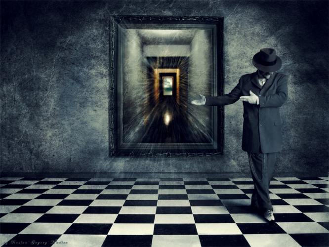

Чужой разум
Будьте осторожны со своими желаниями — они имеют свойство сбываться.

Marko miró a la oscuridad. Había algo en aquella oscuridad que hipnotizaba, que le echaba un reto.
¿Entra, amigo mío, o tienes miedo? Aún no lo tienes, está claro. ¿Quién tiene miedo de las pesadillas nocturnаs al pleno mediodia? Hasta estás burlando, ¿crees acaso no entiendo esa sonrisa en tus labios? Pero espera... solo entra y veremos...
Era un día soleado del verano. Hace varios dias por la noche en el parque vino un circo ambulante y en día siguente ya crecieron sus pabellones como flores de colores chillantes.
Uno de esos pabellones era la camara de horror.
Marko esperaba en una larga cola, mirando con curiosidad adentro, deseando mostrar a si mismo que no tenia miedo alguno de nada. Entro en el edad cuando ya los niños dejan de creer en milagros y en seres horripilantes que se esconden en el albergue de sombras nocturnas. La vida era facil y bien clara, nada parecía turbarlo.
Cuando era su turno, el tendió un billete un poco arrugado al billetero y con una sonrisa maliciosa entro en la oscuridad.
En otro segundo como debió ser la puerta se cerró detrás de el.
Oscuridad.
Oscuridad completa y total.
Oscuridad y frío. Despues de pasar tanto tiempo bajo el sol sus ojos no estaban acostumbrados a una luz debil y tibia. Poco a poco empezó ver los contornos de objetos. Pero porque frío? Acaso cuando se va la luz se hace más frio?
Aun no tenia miedo y sin embargo se detuvo mientras sus ojos no estaban acostumbrados. Marko frunció el seño. No quería que ante el de repente apareciera un monstruo por más inofensivo que fuera.
Levantó una mano muy despacio teniendo miedo que ya iba a enmarañarse en una telarania o tocar alguna gelatina asquerosa. A tientas encontró una pared y la tocó. No paso nada extraordinario. Su mano sintió un velvet negro.
Hizo un paso. Un segundo. Un tercero. No pasó nada.
Recordó al pasar la conversacion del dueño del pabellón cuando estaba en la calle:
"Al principio no debe pasar nada, hasta que vuelvas absolutamente seguro de que en aquel espacio no te pasará nada horrible, es solo un juego de niños. Y entonces te pasará lo más interesante..."
Hizo otros pasos más seguros. Su tensión se aplacaba
Solo unos pasos lo separaban del plenodía. Unos pasos entre el día y la noche. Pero en un momento le pareció que hasta si volviera atras ya no podria salir porque la puerta estaba cerrada, funcionaba sólo en una dirección.
¡Vayas tonterias! Todos salen del otra salida, ¿acaso no? ¿Y si sin embargo el no saldrá? ¿Quién se dara cuenta?
¿Y quien dijo que no existen? ¿Quien se atrevió a decirlo sin prueba alguna, solo para calmar su propia alma?
Y que tal si existen esos seres de la noche, que en verdad se ocultan bajo las camas y no se muestran porque simplemente esperan... esperan una ocasion más adecuada cuando nos caigamos victimas hasta por nuestra propia voluntad? Solo con el hecho de dejar creer en ellos no les anulamos.
Simplemente porque existen. O en caso contrario en todo en que dejamos de creer va a dejar de existir.
Tal vez era la verdad que antes existian los mágicos, los dracones.. y algun día desaparecieron ya que el mundo dejo de creer en ellos.
¿Y que tal si dejaremos de creer en nuestra realidad? Desaparecerá?
***
Феликс Крайлиш сидел в уютном кресле, закинув ногу на ногу. Напротив него сидел его интервьюер, смуглый черноглазый мужчина неопределенного возраста. В маленькой цилиндрической студии было достаточно жарко - Феликс несколько раз пожалел, что надел свой шикарный пиджак. Но что делать.. престиж есть престиж. Он же все-таки мэр, а не какой-то там задрипанный клерк!
- Ваши действия по улучшению экологической ситуации имели большой успех - благодаря программе "зеленый город" наш город попал в тройку лучших...
"Ну да, ну да" - подумал про себя Феликс и внутренне усмехнулся, - "это мы хорошо провернули. Под это дело моя Марта получила очень выгодные контракты. И, главное, не подкопаешься ведь - хорошо я этим антикоррупционерам нос утер! И Марта моя не ударила в грязь лицом!"
Журналист что-то говорил, но Феликс уже его не слушал
- ... Сейчас стараются это замалчивать, но я, как порядочный репортер, все же должен затронуть эту непростую тему. Не возражаете, мистер Крайлиш? Да-да, все мы делаем вид, что "гетто" не существует, хотя именно из "гетто" пришла новая "чума", с которой наши спецслужбы пока не могут справиться
- Вы имете в виду "обручи"? - уточнил мэр.
- Именно так.
- Наши спецслужбы уже близко к ним подобрались и поимка преступников - вопрос недель, а то и дней, - холодно ответил Феликс.
- Людям бы вашу уверенность. Вы давно видели статистику? - не унимался черноглазый интервьюер, - За одно сегодняшнее утро, пока мы с вами беседуем, по статистике кто-то умер от "нервного истощения". И наши хваленые медики даже не выяснили еще, в чем оно заключается! Жил себе человек - и вдруг умирает. А медики разводят руками. Говорят, в этих обручах есть что-то дьявольское - они притягивают людей как магнит и выпивают из них все соки.
"Зачем он это говорит?" - спросил себя Феликс, - "Мы же договорились не заострять внимание на этой скользкой теме?"
- И все же, не усугубляйте. ИНВ обязательно найдет этих убийц, которые производят обручи и наводняют ими наши города. Вот увидите - вскоре будут найдены их тайные фабрики.
Репортер по-кошачьи прищурился
- Угроза наркотиков блекнет по сравнению с угрозой "обручей". Достаточно лишь одного контакта с обручем - и человек преобретает перманентную шизофрению, от которой его никто уже не в силах излечить. Периодически он попадает в какие-то иллюзорные миры, где получает все то, что ему не хватает. Эти галлюцинации вытягивают из него всю силу, пока однажды он не умирает от "нервного истощения". А в это время вы, мистер Клайлиш, делаете вид, что ничего не происходит. Нет гетто - нет обручей, эрго - нет угрозы.
"Да что же он несет, черт возьми! Я с ним разберусь после программы"
- Мы делаем все, что в наших силах. Но мы считаем, что не стоит лишний раз разводить панику - ситуация и без того непростая. И вопрос гетто мы не умалчиваем, мы его решаем
- В последнее время население гетто резко сокращается... Видимо, сама судьба помогает решить вам этот вопрос.
В студии становилось все жарче. Феликс вытер платком капельки пота со лба и отпил воды их стакана.
"Да что это он - словно с цепи сорвался! Пока я - мэр, не бывать ему репортером! Ладно, в любом случае, все это не пойдет в эфир. Можно расслабиться"
***
De repente Marko vió un movimiento en la oscuridad en unos pasos delante él.
"Pero lo más peligroso se aguarda en el final. Es la culminación.
No.. no me pregunten... tal vez sea lo más horrible con que ustedes se puedan encontrar en la vida.
Un monstruo? Bueno, en algun sentido, sí. Pero no es un montruo de peliculas de horror.
Es otra cosa... que contiene un horror intrínseco, enmascado, disfrasado con astucia
Como se dice - suum suique - a cada uno lo suyo.
Es un encuentro a que unos tienen miedo a todo su vida.
No me pregunten que es. Será una sorpresa." - recordo Marko las palabras del dueño de pabellón.
- ¿Quien eres? - preguntó Marko y su propia voz sono más ronco y ajeno que esperaba.
Un silencio.
Marko se movió y un silueto se movió también. Los dos iban acercándose
Ya no tenía dudas, ya lo sabía que era un ser vivo, y que estaba completamente enterado de que él, Marko, está aquí
- ¡Por favor, contéstame! Yo sé que estás aquí, ¿verdad? Ya basta de jugar.
El silueto negro guardaba silencio
- No me hagas nada malo, - suplicó Marko, - ¿Me oyes?
El Ajeno se acercaba y por fín Marko echó a gritar.
Marko se despertó de su propio grito en su cama, sintiendo el sudor frío.
¿Cuantas veces más el va a ver esta pesadilla? La seguía viendo muchos años pero nunca vió su final.
***
- И тем не менее, многие люди доказывают, - продолжил журналист, - что те миры, в которые они переносятся, не менее реальны, чем, скажем, наш с вами мир. Более того, все они сходятся к тому, что встречают в них некого Асата - хозяина "фабрики" реальностей.
- Это наведенные галлюцинации. Асат - мошенник, - резко оборвал его Феликс.
"Жарко мне..." - думал мэр, - "что за чертовщина, почему становится все жарче? Неужели это так сильно греют проекторы? И ведь не снять же этот чертов пиджак! Видимо, я в нем сварюсь, как картошка в мундире"
- Есть мнение, что все вокруг - майа, одна большая галлюцинация.
- Я, конечно, уважаю восточные традиции, но позвольте...
- Хорошо, тогда скажите, - возразил журналист, - как отличить реальность от галлюцинации? Вот вы, например. На основании чего вы уверены, что мир вокруг вас - реален?
Феликс кашлянул и немного поморгал.
- Что значит - уверен? Да я-то точно знаю, что мир вокруг меня реален. Я никогда не имел дело с этими проклятыми обручами. Я же вижу, что вокруг все настоящее!
- Ну что ж, допустим, - согласился журналист, - пусть будет так.
Вдруг рядом с ним зазвенел будильник. Журналист неторопливо его отключил.
"Это еще что за хамство! Ты у меня улицы мести будешь!"
Феликс еле сдерживался, чтобы не сорваться - может, они специально его провоцируют, чтобы он в сердцах сказал что-нибудь этакое. Хорошенький бы компромат вышел.
- Прошу прощения, господин Крайлиш. Увы, но наше время заканчивается, - Оператор выключил камеру и начал собираться
- Подожди, - остановил его интервьюер, - у нас еще есть несколько минут. Давайте закончим этот разговор.
Оператор чертыхнулся и начал доставать камеру обратно.
Феликс бы давно разорвал их в клочья, если бы не был уверен, что запись видеокамер не попадет в третьи руки, поэтому старался вести себя, сохраняя приличия.
- Также говорят, что в этих псевдореальностях у людей появляется наведенная память, - продолжил журналист - они представляют себя королями, суперзвездами, кумирами - иллюзорные миры способны воплотить любую их прихоть. Но есть и обратный эффект - временное блокирование некоторых участков памяти...
Феликс не вытерпел и снял пиджак. Пот катился градом по его лицу. Становилось невыносимо жарко. От этой жары все оказывалось в легком мареве, а цилиндрические стены, казалось, темнели и сужались. Какой идиот придумал сделать студию цилиндрической!
- Я вижу, эта тема вам неприятна. Что ж, давайте оставим ее
- Нет, дело вовсе не в этом, - возразил Феликс, но журналист его перебил
Лицо его казалось очень знакомым, но Феликс не мог его вспомнить. Где же он его видел?
- Давайте поговорим, скажем, о Марте. С женой вам повезло. Ведь именно ее гениальные идеи позволили вам полгода водить за нос антикоррупционное ведомство!
- Да что вы вообще себе позволяете, - взорвался Феликс и вскочил. Выключите камеры!
- Не проблема, - сказал оператор, - вы двое меня уже достали! - затем собрал камеру и ушел. Остальные тоже начали расходиться и выключать свет. Моргала только лампочка, расположенная непосредственно над столом, где сидели мэр и журналист.
- Что вы все себе позволяете!
- Вы задаете неправильный вопрос, - спокойно ответил интервьюер, закурив сигару, - правильнее спросить - почему мы себе это позволяем.
- Да кто вы вообще такой!?
- А вы меня еще не узнали? Я - ваша совесть
- Прекратите поясничать
- Увы, время для церемоний вышло. Я не мог вам ничем помочь - ваши тайные страхи и опасения так и лезли наружу. Я не могу себе позволить грубое вмешательство - тем самым я мог бы причинить вам вред.
- О чем вы говорите?
- О том, что вы проворовались, дорогой Феликс. Вы и в самом деле считаете себя мэром?
- Что за черт...
- Увы, мне очень жаль. Но вы давно уже не мэр. После того, как вы с Мартой проворовались, на вас набросились все ваши бывшие приятели и кредиторы, словно акулы. Вы отдали все, что было на ваших зарубежных счетах. Сейчас вы разорены и сводите концы с концами в каком-то заштатном городишке. Вы до сих пор не смирились с этим, поэтому пришли ко мне за помощью, чтобы я напомнил вам лучшие дни вашей жизни.
Феликс похолодел.
- Асат...
- Он самый. Вот вы все и вспомнили. А ведь вы меня изрядно повеселили, доказывая, что специально созданный для вас мир из одной комнаты - самая наиреальная из реальностей. А потом.. когда вы меня поливали грязью почем зря... вот это была сказка! Жаль, нельзя продолжить.
Внезапно память полностью вернулась к Феликсу
- Асат, скажите мне, - пробормотал Феликс, понизив голос, - но почему все так.. ведь я же, черт возьми, сказал вам реконструировать лучшие годы моей жизни! А вы что натворили! - кричал бывший мэр
- Я сделал все, что мог - я блокировал вашу память о настоящем и вернул вас в прошлое. А дальше вмешались ваши скрытые тревоги и опасения - именно они так повернули сюжет. Над сюжетом вашей реальности я, увы, не властен. Но вам этого не понять.
Феликс вглядывался в лицо Асата. Казалось, оно не было единым лицом - оно было конгломератом лиц. Пока Феликс глядел на него, в нем постоянно менялась какая-то маленькая деталь, оно то старело, то молодело.
- До скорой встречи, Феликс, - сказал Асат, намереваясь погасить последнюю лампочку.
- Погодите... как вы проделываете эти ваши.. фокусы? - спросил Феликс растерянно
- Вы и в самом деле думаете, что я фокусник?
Асат вынул из-под стола черный цилиндр и перевернул его вверх ногами. Затем сунул в него руку. В этот момент из потолка цилиндрической студии вылезла гигантская рука, которая потянулась к Феликсу и схватила его за уши. Уши Феликса удлинились, напоминая кроличьи. Рука вытянула Феликса словно кролика из студии-шляпы в черную пустоту.
***
Un contrabandista llamado Charón pasaba por un callejón oscuro de gueto. Un gato negro cruzó su camino, maullando. Por unos instantes el gato miró en los ojos de Charon, después se desvaneció en la oscuridad de la noche.
Basura... una basura permanente en las calles, los gritos de los zaguanes, unos locales escondidos, donde pasaba toda clase de cosas.
De repente el escuchó la sirena de la policía. El se estremeció y se escondió detrás de una vieja puerta. El sonido se iba alejando y por fín se mezcló con un lloro desesperado de un bebé.
¿Y que tal si un día empiece un futuro apocalíptico que mucha gente está presagiando - pensó Charon - después de una guerra nuclear cuando el sol desaparezca detrás de nubes densas, entonces.. ¿Quién se quedara? Unos montruos que van a pasar entre basura buscando sus victimas en callejones oscuros.... y claro, también se quedara el siemprevivo pequieñoburgues, a quien nada lo puede matar, como a una rata, a una cucaracha.. el pequeñoburgues siempre sobrevivirá todo. Siempre seguirá comiendo pez podrido de latas que le suministra una serie animadisimos supermercados de tío Sam, siempre comerá hamburguesas con diclofos o con E666, u otros complementos que hacen eterna la comida. Y siempre vivirá la propaganda de tele que pequeñoburgueses van a mirar hipnotizados y repitir para sus adentros como una oración, y después comprar, comprar y consumir. Casi no van a salir de sus madrugueras pero cuando lo necesitan lo van a hacer con correras cortas como lo hacen ratas... para que los monstruos no les comieran.
Cerró los ojos y otra vez vió una especie de modorra donde los montruos se alimentaban con pequeñoburgueses, los monstruos completamente cosidos de trapos con multiples redimientos ya que estaban muerto vivos. Los toxinos de ecología mala contribuían a la disfunción de su cerebro y hasta tuvieron que coser los hemisferios izquierdo y derecho entre sí con un hilo grueso para no perderles...
Hic locus est, ubi mors gaudet succurrere vitae
***
Брим Ратлер, сотрудник службы ИНВ, сидел в кресле, выполненном в стиле хай-тек, пока его начальник ходил по кабинету взад-вперед со скрещенными на груди руками.
- У меня есть серьезные основания полагать, что дело именно в геофайзерах, - продолжил Брим, - Судя по всему, их везут через южную границу.
- Подождите, Брим! Ведь вы же сами буквально неделю назад меня убеждали, что геофайзеры здесь вообще не при чем и делаются они на коленке. Тогда вы грешили на микры. Что заставило вас изменить свое мнение?
"Кардинал", как его в шутку называли в ИНВ, еще не старый, но уже седеющий подтянутый человек, потер лоб и внимательно поглядел на своего помошника
- Дело точно не в микрах, - ответил Брим.
- Наши люди только вчера обнаружили несколько подпольных лабораторий по изготволению геофайзеров. Неужели кто-то будет делать подпольную лабораторию только ради того, чтобы вывалить на рынок самые обычные приборы?
- Я знаю, - Брим кивнул, - Мои люди проследили перемещения подпольных геофайзеров. Все чудеса начинаются после их создания: их начинают возить по ближайшим городам самыми непредсказуемыми маршрутами, прятать в тайники, сообщать координаты, находить, снова перемещать.. чтобы однажды просто продать в гетто среди прочего хлама.
- Что за чушь! - воскликнул "Кардинал"
- Это не чушь. Похоже, это отвлекающий маневр. Признаться, на разгадывание этой тайны у нас ушло достаточно времени. В большой степени в решении этой задачи нам помогли отчеты нашего "подселенного".
- Браво! Асат вновь провел нас, - усмехнулся "Кардинал", - что за гении сидят в его команде? Как им удается водить нас за нос как детей?
- Думаю, мы уже близко к ним подобрались. Надо лишь усилить контроль южной границы...
- Брим, вы представляете, о чем вы говорите? Наши ученые до сих пор не понимают, каким образом функционируют обручи.
Брим налил себе в стакан воды из графина и сделал глоток. "Да", - подумал он, - "Асат вновь переиграл нас"
- По крайней мере, мы уже знаем, из чего состоят эти обручи, - ответил Брим
- Конечно! Микра, геофайзер, простенькая электрическая схема и генератор. Дальше какой-нибудь несчастный это надевает на голову и спустя месяцы, недели, а то и дни умирает от таинственного нервного истощения. И за это время с ними что-то происходит, чего мы не можем понять, поскольку выходит за рамки нашего понимания. Мы сидим в кабинетах, строим теории, а они там продолжают умирать!
- Мы над этим работаем! Нам точно удалось установить, что микры в этой схеме никакой дополнительной роли не играют - это самые обычные микры.
- Ладно, расскажите лучше, как наш "подселенный"? Давно получали от него известия?
Марек замялся
-Видите ли.. известия мы получаем от него регулярно... сейчас он прорабатывает вопрос геофайзеров. Час назад я советовался с нашим психиатором, как интерпретировать его отчет.
- У него уже начались проблемы?
- Еще нет. Пока все в пределах нормы. Я имею в виду.. в пределах установленной для него нормы.
- Да... хорошо сказано. Надеюсь, мы не зря пошли на риск.
***
Marko pasaba por el tunel negro de la recamara de horror en la oscuridad. En este sueño el era un hombre maduro y a la vez era un niño de aquel día soleado del verano.
Unas palabras, privadas del todo sentido, vinieron a él al pasar.
Hay dos maneras diferentes como sacamos conclusiones: la deducción y la inducción. Y es la inducción que nos hace creer que no existe nada al otro lado de los limites del mundo a que estamos acostumbrados: extrapolamos los resultados obtenidos en nuestra vida y les aplicamos al respeto del futuro. Despues de haber vivido tantos dias sin encontrarse con algo extraordinario unos sacan conclusion que mañana tampoco pasara nada extraordinario. A esa conclusión les lleva su experiencia. No obstante como sabemos, la induccion no puede ser cierta en cien por ciento. Siempre hay una posibilidad de error. Y no podemos ni siquiera estimar esa posibilidad. ¿Acaso no? Asi que puede pasar que mañana todo se vuelve patas arriba y el mundo que nos rodea cambiara por completo por más que hoy digamos que es imposible. Hasta puede ser que nunca entramos en la mañana.
Pero en algun modo es cierto. Si uno deja creer en el mundo y en sus posibilidades sus colores se destiñen y oscurecen, su vida se vuelve en algo rutinario.
¿Y si uno deja de creer en si mismo? Deja de existir?
***
В коридоре горела одна тусклая лампочка, да и та временами моргала, грозясь совсем потухнуть. Ричардеш Кравчек, ученый из НИИХОС, чуть не подскользнулся на банановой кожурке пятидневной давности, но успел облокотиться о стену, щедро украшенную граффити. В дальнем конце коридора находился вход в подвальчик. Идущий впереди Чак, его лаборант, нажал на кнопку звонка и несколько минут они стояли, уставившись в дверь, словно гипнотизируя ее, пока из-за нее не послышался шепот. Затем на пороге, непричесанный и небритый, в мятом банном халате показался хозяин подвальчика - Ларс. Несколько минут он постоял на пороге, оглядывая посетителей, словно гадалка, желающая прочитать по их лицам их судьбу и под конец многозначительно спросил:
- Чак, это он?
- Чак ограничился тем, что скорчил такую же многообъясняющую мину - они уже понимали друг друга без слов, затем, ничего не говоря, прошли в помещение и закрыли за собой дверь.
Окна в подвальчике были заклеены черной лентой и завешаны жалюзи, которые никогда не открывались - в помещении всегда царило неопределенное время суток. Мерцающие сине-фиолетовые лампы по стенам окончательно лишали чувства времени, словно продлевали его и гость окончательно терялся в сегодня, вчера, а то и завтра. А в ванной в инфракрасном свете, словно фотографии, которые нельзя засветить, настаивались какие-то таинственные зеркальные приборы...В этой квартире-подвальчике геофайзеры проходили свою последнюю фазу зарождения. Так было всегда: каждый знал лишь маленькую часть процесса создания геофайзеров и выполнял свою маленькую работу. Никто никогда не знал от начала до конца, как создаются эти геофайзеры, у всех были лишь разрозненные элементы мозаики.
Ричардеш вздоргнул. Неужели он все-таки пойдет на это? Может, сбежать пока не поздно?
В комнате находилась подпольная лаборатория. Ларс вновь вернулся к работе над какой-то чудо-машиной. Видимо, за этим занятием он провел ни один день. Глаза его, от природы бледные, сделались стеклянными. В углу комнаты стояла какая-то сложная машина, опутанная проводами, из которой в тазик капали раз в несколько секунд капли воды - периодически из угла доносилось заунывное кап-кап.. видимо это было какое-то великое изобретение или еще какой-нибудь псевдоискревитель самовыпрямляющихся пространств. Главное, чтоб не рухнула однажды ни на кого эта бандура - а там уж хоть коллайдер - какая разница?
Ларс начал мурлыкать себе под нос какую-то мелодию.
Из комнаты вышла заспанная девушка с большими темными глазами, спутанными волосами и в старом заплатанном халатике
- Это Зоя, - представил ее Чак, - Ричи, я вас оставлю, она выполнит всю процеруду.
С этими словами Чак направился к двери. В это время послышался голос Ларса:
- Чак, зараза! Ты опять засунул пиццу в отделение с реактивами! Сколько раз тебе говорить - верхнее отделение холодильника для продуктов, нижнее - для реактивов. Никак не можешь запомнить своим крысиным мозгом что к чему!
Чак скорчил гримасу.
- Чем это он занимается, - спросил Ричардеш Зою, кивая на Ларса
- Эксперимент ставит, - спокойно ответила Зоя, - он тоже учёный, как и вы
Ричи усмехнулся - он углядел в Ларсе пародию на себя. Зоя поняла его настроение
- Понимаю, вам все это кажется смешно.
- Видимо, скучная работа в научно-исследовательском институте мало его интересует, - заметил учёный.
Ларс, казалось, не замечал их
- Кто же его возьмет? Мы же из гетто - его даже пол в этом институте мыть не допустят.
- Но это же незаконно! Нельзя отказать человеку на основании того, что он - из гетто
- Ричи, вы, видимо, живете в каком-то идеальном мире. Проснитесь. Они давно вычеркнули нас, а теперь подсыпают что-то в пищу и воду, чтобы мы скорее передохли.
- Чертовщина какая-то...
- Раньше-то мы им были как кость в горле, а теперь с появлением обручей они считают нас всех рассадником заразы...
- Зоя, вы явно преувеличиваете. Проблему можно было бы решить иначе.
- Можно. А зачем? Это невыгодно. Когда мы вымрем, на месте нас построят новое Монте-Карло. Я уже и планы видела.
- Так почему же никто не борется...
- Боремся, как видите - усмехнулась Зоя, - обручи делаем
- И сами себя загоняете все глубже в эту яму...
- Ричи, хватит спорить, или, черт возьми, я вышвырну вас отсюда!
Ричи уже мысленно начал проклинать себя - он как последний идиот пришел в это гетто к этим людям, съехавшим с катушек. Похоже, он сам с ума сошел. И все это ради чего? Чертов Ронштейн во всем виноват! Ведь, он, Альберт Ронштейн, был моложе его, и проработал меньше - и на тебе, угораздило же его сделать открытие мирового масштаба! В то время как он, Ричардеш, все возится как идиот над своими пробирками, пишет статьи. Да, конечно, он тоже много чего добился... но почему, черт возьми, не он открыл эту зависимость выделения медиаторов серотониновой группы от воздействия ультразвука определенных частот? Почему Альберт? Сделал открытие... а через некоторое время умер таинственным образом. Диагноз - "нервное истощение".
Под тягой в колбах мерно постукивали магнитные мешалки. Зоя подошла к тяге, что-то внимательно рассмотрела и вынула одну пробирку. Пальцы ее пожелтели от случайного попадания азотной кислоты.
Ходили слухи, что в этом открытии Ронштейну помогли обручи - словно он где-то там, в других мирах заключил договор с дьяволом. И незаметно для самого себя Ричи купился на эти слухи. Он - кандидат наук, в будущем доктор.. А все потому, что этот Чак, лаборант его, рассказал ему эту байку про обручи и привел его сюда. Конечно, Ричи не мог побороть свое кошачье любопытство и решился на этот эксперимент. Ведь он же ученый! Может, он тоже, надев этот чертов обруч, узнает что-то такое, что перевернет весь мир...
Ричи уже представлял, как поднимается на сцену, ему вручают нобелевскую... но, оказавшись в этой квартире, его словно окатили холодным душем и он желал как можно быстрее отсюда убраться. Но не мог. Что-то его держало. И как же его лаборант Чак, вполне успешный молодой человек, мог связаться с этими типами из гетто?
Зоя, чувствуя внутреннее напряжение и нетерпение Ричи, начала разговор:
- Как там геофайзеры? Уже готовы?
Ларс словно не слышал вопрос. Потом, спустя полминуты, поглядел на нее, моргая
- геофайзеры? Да, конечно.. уже время, думаю. Сейчас пойду, выловлю для тебя несколько.
- А микры чьи? Малайзийца?
- Нет. Харон откуда-то притащил. Плохи дела Малазийца.. опять облава, только на этот раз Малазиец не вышел сухим из воды. Инквизиция. Ну ты понимаешь. Так что есть вероятность... что это надувательство. Микры и микры обычные.
- Вряд ли. Харона никто никогда не мог обмануть, - ответила Зоя, - он всегда выйдет сухим из воды и сам всегда всех обманет. В общем, думаю, микры что надо.
- Проверим.
- На этом проверим? - спросил Ларс, кивая на Ричи
Зоя кивнула - дескать, этот сам напросился. Так что с того?
Выступать в качетстве подопытного кролика Ричи явно не хотелось. Но что поделать - времена такие. А когда они были другими?
Ларс медленно нехотя поднялся и пошел по направлению к ванной. Там же в углу, на тарелочке, лежал недоеденный с утра бутерброд. А может с вечера - Ларс ведь полностью исключил время из своего жилища.
В ванной зажурчала вода
Зоя поглядела на Ричи, который сидел как на иголках - то, чего он так долго пытался раздобыть - было так близко, буквально в нескольких шагах. Ну сколько же еще можно ждать? Когда этот чертов непричесанный хиппи-бродяга наконец-то вынесет из ванной заветный клад? Боже мой, почему по пути к казалось бы великим целям приходится связываться со всяким сбродом?
- Ну что, точно уверен, что тебе туда надо? Последний раз спрашиваю, - поинтересовалась Зоя, в ее глазах отобразилась насмешка
Сердце Ричи стучало все быстрее и быстрее. Ну сколько же можно тянуть, черт их подери! Они что - издеваются надо мной? Я перенес три встречи только ради того, чтобы наконец-то заглянуть по ту сторону - разве этим малолетним пройдохам понять - они могут так сидеть днями и ночами, и все их драгоценное время юности идет коту под хвост...
Впрочем, он уже не был так уверен в своих рассуждениях. Он уже вообще не в чем не был уверен - поэтому он и оказался в этом спорном месте и спорной компании. Но привычная модель жизни возвращалась в этот тяжелый момент со спасительными образами.
- Я уже решил. Передумывать не буду.
- Мое дело спросить, ты же понимаешь. Тогда добавь-ка в завещание еще такой момент: ты отправился в "зазеркалье" добровольно, никто тебя силой не тянул. Конечно, окажись здесь инквизиция, это вряд ли бы смягчило нашу участь, но все же. Для самоуспокоения, так сказать, чтобы как-нибудь при случае предъявить на страшном суде.
- Какое еще завещание, - Ричи вспылил. Руки его слегка задрожжали, - может, хватит издевок? Хватит, слышишь? Я и так ужасно нервничаю
"Ненормальная девчонка, - подумал он, - неужели не понимает в каком я состоянии. Только подливает масло в огонь. Да нет же.. все она понимает. Издевается"
- Извини, - Зоя покачала головой, - неудачная шутка. Но так или иначе: ты должен отдавать себе отчет, что, возможно, это последний день, когда ты ходишь по нашей грешной земле. Возможно, тот, кто выйдет из зазеркалья и вернется в твою шкуру, будешь уже не ты...
- Ну хватит этих сказок. Наслушался уже.
- Хорошо, - Зоя кивнула. Насмешка в ее глазах сменилось на серьезное задумчивое выражение, - тогда должна тебе вкрадце изложить инструкцию для самоубийц, решивших заглянуть в Зазеркалье. Вкрадце: не паникуй. С тобой может произойти то, что полностью переменит твою жизнь, но так же может вообще ровным счетом ничего не произойти - зазеркальный мир просто "Выплюнет" тебя. Хотя, я бы не стала на это рассчитывать. Там отражаются тысячи миров. Причем эти отражения могут как полностью отличаться - напоминать инопланетные пейзажи, молочные реки и кисейные берега, а могут быть в точности похожи на твой реальный мир, за исключением нескольких маленьких деталей, которых ты никогда не заметишь. Поэтому, когда ты делаешь шаг в зазеркалье - отныне ты никогда не будешь уверен, удалось ли тебе вернуться или ты до сих пор продолжаешь бродить по его бесконечным просторам. Так будет всегда. Пока однажды тебя не замучают сомнения и ты не решишь вбить себе в голову, что ты вернулся - так легче жить. В любом случае, пока я тебе не скажу, что ты вернулся - можешь быть уверен, что ты еще где-то далеко. Запомнил? Жди этой фразы. Хотя она не означает, что ты на самом деле вернулся - но ее отсуствие полностью гарантирует обратное. В одном направлении она работает безотказно. Запомнил?
Ричи кивнул. Чтож, пусть будет так. Даже если это правда так, а не россказни полусвихнувшихся бездельников.
Ричи решил немного потянуть время. Сердце его стучало
- И все же, почему вы отсюда не уедете?
Зоя усмехнулась
- Вот заработаем на обручах и уедем!
- Я серьезно
- А кто нас ждет? Тебе не понять - ты живешь в другом мире. Чтобы уехать - нужны деньги, а ни один банк не даст нам кредит. Никто не позволит нам снять жилье. То есть, по закону-то мы свободны, а на деле гетто - это ловушка. Попасть легко - выбраться невозможно.
- Может, достать поддельные документы?
- Кто нам вживит поддельный чип? Таких еще не придумали... Нам здесь вообще не вживляют чипов - мы не можем ничего себе купить в магазинах за пределами гетто,а они уже не принимают наличку. Вы - чипированная элита, а мы - гойи, живущие за наличку. Мы вычеркнуты из экономики. А, значит, из жизни. Да и черт с ними!
- Но за что против вас ополчились?
- Мы стали невыгодны... когда произошла катастрофа на нашем химзаводе, в воздух выделилось какое-то вещество, из-за которого мы все свихнулись. Да-да, мы - сумасшедшие, хотя формально нам никто не поставил диагноз.
- Вы чем-то больны? Что-то я слышал такое про гетто
- Да, больны. Во время обострений мы мучаемся от чувства пустоты. Мы видим пустоту во всем: в ярких дорогих машинах, в походах по магазинам... Смотришь на мир и видишь, что все вокруг - пустое, ненастоящее. Подделка, бутофория в яркой обложке. Хочется чего-то до боли, а чего - черт его знает! Поганое чувство - не поймешь, чего тебе надо. Мы невыгодны для экономики - наша болезнь нам дала отвращение к сверхпотреблению. Правда, иногда случаются редкие периоды "ремиссии" - тогда мы все посылаем к черту и думаем, как бы свести счеты с "элитой" или просто стремимся наслаждаться, пока еще живы.
- Зоя, вы сейчас шутите?
- Да в общем-то нет.
- Это заразная болезнь?
- А черт ее знает. Яйцеголовые считают, что да. Боишься заразиться?
В это время вошел Ларс. В руках он нес что-то завернутое в полотенце. Когда он медленно разворачивал полотенце, сердце Ричи бешено заколотилось - неужели наконец-то.. неужели это свершится?
Из-под полотенца показался блестящий металлический обруч с прикрученными к нему проводами и маленькими приборчиками. Гораздо меньше, чем Ричи ожидал. Обруч и обруч. Ричи даже почувствовал разочарование, словно его обманули. Нет. Они определенно не могут быть такими - это же самые обычные обручи. Да, в душе он ожидал увидеть что-то необычное, что-то сверхъестественное, что прикует его взгляд с первой минуты. На деле реальность как всегда оказалась более прозаичной.
Зоя взяла этот обруч и ловким движением надела Ричи на голову, закрепив какие-то элементы на висках и темени. Затем глубоко вздохнула, и многозначительно посмотрела перед собой сквозь Ричи, даже сквозь стены комнаты, словно начала спиритический сеанс.
Внутри Ричи вдруг проснулся инстинкт самосохранения.. как же так? моя драгоценная жизнь.. и теперь с ней может произойти что угодно, я нахожусь в логове этих бездельников, которые дразнят меня завещанием. Да как же такое вообще могло случиться?
Инстинкт кричал ему, просил, умолял - беги. Беги,пока не поздно. В сущности - зачем тебе все это? Ты же уже получил драгоценный опыт, возможно даже сравнимый со всем, что лежит по ту сторону - ты почувствовал свою жизнь, а почувствовать ее можно, когда она висит на волоске. Это как воздух - когда им дышишь, его не замечаешь. А под водой он становится драгоценным. Нет, решил Ричи, я определенно не хочу умирать.Но, к черту - почему это я должен умереть? Ведь не я же первый, не я последний... а что, если правда, уже в первый раз возвращается кто-то другой... а мне теперь придется годами, тысячетелиями бродить в потемках. Вдруг я вижу этот мир в последний раз? Бежать! Нет. Я решил.
Выражение лица Зои переменилось. В нем не осталось ни капли насмешки. Она скорее напоминала жрицу древнего культа. Она глядела на него своими зелеными глазами, которые все понимали. Да, они бесспорно уже все поняли, всю его внутреннюю тревогу, весь его испуг. Во время испуга внутри нас порой срабатывает защитный механизм и мы возвращаемся в детство - мы вновь примеряем на себя ту самую привычную, отточенную за много лет реакцию, когда подсознательно мы чувствовали, что сильный взрослый нас однажды защитит и стараемся воссоздать это состояние ложной защищенности... только кто его защитит сейчас? Он глядел перед собой широко распахнутыми глазами, он что-то бормотал себе под нос, словно потерянный мальчишка, а Зоя взяла его за руку и крепко сжала в своей. Она его успокаивала. Она переживала не меньше его самого, но не показывала виду - она ведь все знала, все знала с самого начала...
- А теперь закрой глаза, - сказала она мягко, сочувственно, - скажи, что ты видишь?
Ричи закрыл глаза, но ничего не увидел. На какую-то секунду происходящее ему даже напомнило магический ритуал, он усмехнулся. Затем нервно хихикнул.
- Пока ничего не вижу..
Ричи ждал. Вот так оно началось. Поздно отступать. Теперь оно,чем бы оно ни было, будет только набирать обороты. И бежать будет поздно. Что ж, пусть будет так. Наконец-то можно вздохнуть спокойно и откинуться на спинку дивана - он больше ничего не может сделать, кроме как быть благодарным зрителем происходящего.
- Смотри глубже...
Как Ричи ни пытался, он ничего не видел. Но ведь это только начало
- Ну а как я смогу понять, когда появится это самое зазеркалье?
- Думаю, ты почувствуешь... наверное. Если это не случится слишком быстро.
В какую-то секунду ему показалось, что под веками проскочила мелкая рябь. Но, возможно, утомление и беспокойство давало себя знать. С каждой минутой тревога уходила. Ужас перед неизвестным сменился спокойным принятием любого исхода.
- Пусть будет так, как должно случиться... - пробормотал Ричи
Завещание? Ха! Быть может... хотя, в сущности, а что бы он написал? Ему есть, что оставить? Сделал он хоть что-нибудь стоящее, что можно было бы кому-то завещать? Ведь если так подумать - ему уже за тридцать. А в сущности он ничего не создал, что можно было бы передать другим. Почти половина жизни. Причем самая плодотворная. Осталась вторая - успеет ли?
Где-то в душе, в глубине груди, он почувствовал легкое лихорадочное тепло, разливающееся по щекам и на кончиках ушей.
Ну, допустим, завещает он кому-то свои деньги. Племяннику? Растранжирит. Маре? Купит что-нибудь "очень важное", но в итоге все равно растранжирит. Разве его деньги принесут кому-то счастье. А он сам... он сам может кому-то принести счастье? В итоге, что же он напишет?
Ричи в какую-то секунду почувствовал, словно столкнулся с преждевременным экзаменом. Его экзаменатор - смерть в очках-пенсне, сжимала в руках ручку, испачканную мелом от рук, откусывая кончик и испытующе глядела на него, словно вытягивая фразы из нерадивого ученика
Так что же он напишет? Все его статьи - по большому счету лишь продолжение чужих трудов, все его стремления к великим научным открытиям померкли перед повседневной рутиной в очереди по вторникам за сухим льдом и по четвергам за балонами с жидким азотом. В какой момент это случилось? Нет.. ему нечего написать. Кроме того, что он всем благодарен... и что он никого не винит.
Так неспешно текли минуты, пока он сидел, откинувшись на спинку дивана. Ларс Задремывал в углу, мурлыча что-то себе под нос, а Зоя обеспокоенно за ним наблюдала.
И что-то происходило. Он чувствовал, что что-то начинается, что его захлестывает какой-то водоворот. Вот-вот что-то случится - он задрожжал, крепче схватился за руку Зои, словно вот-вот прозвенит звонок и американские горки на бешенной скорости сорвутся с места...
***
В темноте показалась фигура полицейского, а за ним еще двоих. Как им удалось подобраться так незаметно?
- Они уже тут! Кидай их в люк! - шепнул Марко по кличке Харон
Малайзиец судорожно начал кидать микры в открытый люк, руки его дрожжали
- Вот черт! Кто же нас спалил!
- Нет времени, давай, еще немного осталось!
- Клянусь, если обойдется, навсегда брошу меркашить! - простонал Малайзиец
В этот момент послышался голос, в лицо им ударил резкий свет фонарей
- Руки за голову!
По спине Марко пробежала струйка холодного пота. Его возьмут с поличным. А это значит, до утра сидеть в клетке, в зверинце с такими как эти... или еще похуже. Плюс терпеть насмешки и издевательства насчет пожизненного - с них станется, они-то придумают. И ни звонков тебе, ничего. Пока утром, после жуткой ночи не явится чисто выбритый мистер-икс и вытащит его, Марко. И это в лучшем случае. Тогда его карьере придет конец. А в худшем случае... а может быть, ОНИ за ним не придут? может, ОНИ и позволят арестовать его как меркаша, может, они не будут его спасать - кто знает, в какие игры они играют? так ли он им нужен? ду уж нет, черт с вами со всеми, а моя свобода мне дорога, если уж сдохнуть, то не за решеткой! Не дождетесь, гады!
В тот момент, когда полицейский подошел почти вплотную, Марко за доли секунды выхватил перцовый болончик. Дальше все произошло как во сне. Словно чужие руки распылили газ, чужие ноги бросились бежать и затем чужая рука схватилась за рукоятку пистолета и выстрелила, правда в воздух
Он бежал по темноте не оглядываясь, иногда наступая в черные лужи, боясь даже на секунду представить, что позади. Он чувствовал настигающие его шаги, все громче, все сильнее, все ритмичнее, и потом, когда в ужасе оглянулся, за ним не было никого. Стучало его собственное сердце
***
Марко, запыхавшись, вошел в бар Джузеппе. Бледный по жизни, сейчас он казался бледнее покойника на кладбище. Он тяжело облокотился о стойку и так простоял несколько секунд, глядя изподлобья на смеющиеся парочки
- Буона сера. Что закажете сегодня? У меня новый коктейль..ай, последнее слово нашего хитрого ремесла - пробормотал хозяин бара, Джузеппе Морелли, по-кошачьи улыбаясь. Затем прищурившись: Амико мио, да на вас лица нет! Проблемы гнетут? А может, красивая женщина? - спросил бармен с ярко выраженным итальянским акцентом
- Разговор есть, - вполголоса ответил Марко
- Ах, да-да, ну как же, как же, помню, не забыл - протянул Джузеппе слащавым голосом, - Марио, где же ты пропадаешь, черт тебя возьми? У меня вип-клиент, быстро сюда, подменишь меня. Марио, чтоб тебя... Mario, ma dove ti nascondi? Ascoltami, un povero disgraziato asino, te lo giuro, se tu non vieni ora, io...
- Vengo subito, - послышался тонкий пронзительный голос из-за занавески, отделяющей бар от подсобных помещений
Джузеппе потряс в воздухе руками, словно изображая, что ожидает несчастного помошника, если тот не появится в ближайшую секунду.
Марио повезло. Он вовремя появился и тем самым избежал приближающейся неминуемой смерти.
Джузеппе взял Марко под руку и повел его за собой, в подсобное помещение, откуда только что появился запыхавшийся черноглазый парнишка
Они прошли ряд маленьких узких комнаток, доверху набитых всякой утварью и старым хламом. Затем вошли в маленькую кладовку, где Джузеппе включил тусклую лампочку и закрыл дверь на ключ, прислушиваясь. Его кошачий слух не позволил бы даже мыши проскочить незамеченной
- Ты не должен был сегодня приходить. Оговоренный день послезавтра. Что-то случилось? - спросил Джузеппе. Итальянский акцент полностью улетучился, в его голосе появилась твердость и легкий холодок. При бледном тусклом свете его сицилийский загар казался неестественным, к тому же, Марко был уверен, что частичку пламенного южного солнца он получил в одном из соляриев.
- Надо доложить, что пункт "сигма" засвечен.
- Местная полиция?
- Она, родимая. Почему их не предупредили не соваться в "сигму"?
- Облава?
- Малазийца задержали. Я еле ноги унес
- Хорошо. Полиции тебе тоже лучше не попадаться. Тебе надо оставаться в тени. Насчет "сигмы" я доложу.
- Кто бы сомневался. Мне не охота провести за решеткой лучшие годы моей жизни, - сказал насмешливо Марко
Джузеппе покачал головой
- Об этом речь не идет. В лучшем случае, ты просидел бы там до утра, пока бы ни прибыл наш агент. Но на этом на твоей текущей работе пришлось бы поставить точку. Хотя, тебе в данном случае нечего терять, тебя бы перевели в отдел. Бумажной работы и там хватает, к тому же, с учетом твоего образования...
- Ладно, оставим это - скептически пробормотал Марко себе под нос
Джузеппе словно уловил его интонацию
- Послушай. Мы не шайка бандитов, а государственная структура. Ты числишься в реестре, мы даже при всем нашем желании не можем взять и выкинуть тебя за борт. Ты получаешь запрлату, тебе идут пенсионные начисления. Мы предоставляем отчет по каждому работнику. И если бы тебя перевели в отдел, ты бы сам с этим столкнулся и понял весь механизм. Мы, конечно, в достаточной степени автономная структура, но все же, мы подконтрольны.
- Верю - протянул Марко с неохотой
Джузеппе пожал плечами
- Да, хороший у тебя выдался денек.
С этими словами Джузеппе достал из какого-то потайного ящика деньги
- Твои честно заработанные. Плюс еще бонус за сегодняшний день
Марко ехидно усмехнулся
- Премия за героизм, чтоб ее. Я почти миллионер!
- Мы не можем платить тебе больше - это привлечет внимание. В будущем надбавим двадцатку
- Хорошенькая перспективка
- Ничего. По окончанию операции твой чип снова активируют и будешь жить как белый человек
- Верю..
- Марко, не беспокойся. Без денег мы тебя не оставим. К тому же, ты должен получать что-то с меркашества
- Получаю. Но все уходит на оплату этим типам, которые бьют стекла и останавливают грузовики, идущие с юга. Думаешь, они просят копейки?
- Не думаю. Но больше ты им платить не будешь. Хорошо, что ты заглянул. Есть одна новость. Сейчас твоя работа становится актуальна как никогда
- Вот как?
- Все это время считалось, что обручи везут через южную границу, а сама Фабрика находится в одной из соседних стран. Однако ж, несколько дней назад, нам удалось установить, что обручи вообще никогда не перевозились через границу. Скажем так, они никогда не покидали пределы нашей страны. И скажу тебе больше: они производятся где-то здесь, либо в на окраинах города, либо в ближайших мелких городах. Скорее всего, их везут из южной области.
- Тогда где же эта треклятая фабрика?
- Вот это и нужно узнать...
- Это как так? - Марко поглядел в большие черные ничего не выражающие глаза собеседника, - подожди... я не понимаю. Это же не производство в гараже на каленке, которое легко могло бы затеряться. Это Фабрика! Как можно не найти фабрику у себя под носом? Фабрику, которая производит составляющие в больших количествах. Это какой-то цех, они же, в конце-концов, должны закупать материалы и как-то перевозить свои компоненты. Такие вещи не перевозятся "за шкиркой" или в заднем кармане, тут нужны грузовики... К тому же, если принять во внимание, что обручи должны излучать какое-то там электромагнитное поле... это значит, что там должны быть приборы, лаборатории...
- Вот поэтому-то твоя работа и перешла из разряда Б в разряд A. Твоя зарплата утроится, насколько мне известно. Всю сумму получишь после операции. Действительно, это более чем странно, но мы не можем найти источник.. мы проверили досконально все цехи, производящие подобную аппаратуру, все напрасно. Асат, или те, кто за ним стоит, главы этой преступной группировки, составили очень хитрый план. Но это вопрос времени. Плюс ко всему, тебе дадут направление на один из лучших курортов
- С решетками на стенах?
- Что ты выдумываешь, не говори ерунды!
- Ты прекрасно знаешь, что я не выдумываю. Думаешь, мне придется лечиться?
- Марко, я не знаю, я не психиатор. Наведенное раздвоение личности плюс встречи с Асатом - это не шутка, но наши ребята, уверен, с этим справятся. Главное, не заработай раньше времени "нервное истощение"
- Не уходи от ответа
- Марко, в конце концов. Ты подписывал форму Д-6. Тебе было известно, на что ты идешь, тебя честно предупредили. Ты должен жить среди меркашей и зазеркальных бродяг, ты должен стать одним из них. Ты должен вписаться в их круг и прогулки по зазеркалью являются частью твоей работы. И тебе известно, какие последствия бывают рано или поздно... но я надеюсь, до этого не дойдет. И чем раньше мы накроем эту банду, тем больше у тебя шансов сохранить свою психику. Так что поимка Асата в твоих интересах
- Я знаю, - мрачно ответил Марко и покачал головой.
Такая участь ждала их всех... и его, и тех, кто стал его друзьями. Тех людей, которые, по сути, не несли в себе никакого зла, они были просто людьми, которые умели так же неподдельно радоваться, которые порой искренне верили в Зазеркалье. Ведь хоть где-то же... должен остаться какой-то смысл. В конце-концов, многие просто желали хотя бы на время выкинуть все из головы и побыть счастливыми.. до пробуждения. Разные надежды. разные цели. Но конец всегда один.
- Это было твое добровольное решение
- Я знаю. И сделаю все возможное
- Когда вся эта канитель закончится, ты станешь состоятельным человеком...- сказал Джузеппе, чтобы перевести тему. - Я говорил с Грегором. Он хочет дать тебе должность в отделе. Как тебе кажется?
- Нет уж. Брошу все к чертям и уеду. Куда-нибудь, но подальше. Где нет ни Зазеркалья, ни отдела, ничего. Как мне уже все надоели.
- Когда в последний раз ты виделся с Асатом? - спросил Джузеппе
- Не помню. Недели две назад. Ну и зараза же он... не знаю, как в реальном мире. Но в своем зазеркалье он царь и бог. Что хочет, то и творит
- Как думаешь, он не догадался о твоей деятельности? Я так понимаю, он может легко читать мысли тех, кто оказывается по ту сторону.
- Не знаю. Если да, то не подает виду. После того, как мне сделали в отделе "наведенную память", я сам забываю, кто я на самом деле. Когда я вхожу в зазеркалье, я искренне верю в то, что я всего лишь меркаш по кличке Харон. Я перестаю быть Марко. И это меня пугает. Благодаря этой тренировке я начинаю чувствовать, что распадаюсь на две разные личности, абсолютно чужие друг другу. И периодически они борятся за то, чтобы доказать, кто из них более настоящий. Я и сам теперь толком не знаю, кто я.
- Не беспокойся. После окончания операции тебе вернут твой разум на место. Продолжай работу. Надеюсь, Асат еще не раскусил тебя и ему не известно ничего про подмену твоей памяти. На каждую силу найдется другая сила. Их замыслы тоже не идеальны, и у них могут быть проколы.
- Хорошо вам рассуждать, инквизиторы
- Гляжу, хорошо у тебя новая личность прорисовывается. Ты уже наше дорогое ИНВ инквизицией называешь, как его обычно зовут в гетто. Чувствуешь себя по ту сторону, а, приятель? Осознаешь себя мышкой, на которую поставили мышеловку?
Марко кивнул. Ему нечего было ответить. Он и не хотел ничего отвечать.
Распрощавшись с Джузеппе, он вышел по витиеватой декоративной лестнице бара в проливной дождь. Где-то за горизонтом сверкали молнии. Дождь скатывался струйками по его щекам. Он даже не открыл зонтик. Он шел и с каждым шагом переставал быть Марко, вторая его личность, Харон - метущаяся, эгоистичная, капризная, брала верх. Он уже думал о том, с каким видом его встретят его новые друзья, когда он передаст им заветные микры, хранящиеся у него за пазухой. Только бы ни инквизиция, только бы ни облава... Проскочим, переживем. Он наступил в лужу и чертыхнулся.
***
- Ну как, Ричи? - спросила она в какой-то момент, - что-нибудь проявляется?
Ричи покачал головой
- Нет. Ничего необычного
- Ричи.. ты знаешь... я боюсь, что Харона обманули.. ну, то есть... я же тебе говорила, что у нас не было точной уверенности. что это не самые обычные микры. Прошло больше часа. Видимо, придется тебе заглянуть к нам в другой раз. Я тебя предупрежу - как только - так сразу. Больше ждать бесполезно. Можешь собираться и идти. Вот чертовщина! Ну я ему устрою. Эй, Ларс..погляди-ка. То, что занимает твою ванну, не более чем фальшивка. Выкидывай в мусорную яму!
Ларс нехотя пробудился
- Хм..хм - начал он, словно плохо смазанный механизм, в котором завертелись шестеренки, - да, видимо, пролетели мы
- Ну извини, приятель. Не судьба тебе сегодня что-то увидеть. Выпьешь чашечку чая?
Ричи пожал плечами. Столько переживаний. Волнение, страх, потом полное согласие, потом снова каверза и снова страх.. договорился о переносе нескольких важных встреч... и это все ради того, чтобы под конец услышать это мягкое - ну извини. Ричи удрученно хмыкнул
Внезапно телефон в его кармане зазвонил
- Евсей, но мы же договорились перенести на завтра. Как не получил? Ну что ж, так даже к лучшему. Я еще успеваю. Кто будет? Господин Кригович? Да не может быть. Я уже два года ищу с ним встречу. Он же может проспонсировать исследование!
Повесил трубку и довольный повернулся к Зое
- Вот видишь, что не делается, все к лучшему. Спасибо. У меня сегодня судьбаносная встреча. К лучшему, что все так обернулось. Иначе я бы точно на нее не попал. Эх.. судьба все же любит меня, - усмехнулся Ричи и направился к двери.
Перед самым выходом он почувствовал легкое беспокойство, словно что-то забыл. Он окинул взглядом квартиру - ладно, даже если и так, он еще вернется. Наверняка это какая-нибудь мелочь вроде авторучки.
Выйдя из подъезда в роскошный летний день, Ричи почувствовал, как время снова резко нахлынуло, вернуло себе свои права и продолжило течь. Вокруг него расстилался его привычный мир -такой настоящий, как никогда. Только сейчас эта настоящесть даже немного его впечатлила.
Через несколько минут, стоя на обочине, он поймал такси
Он машинально забрался на заднее сидение и захлопнул за собой дверь. Такси сорвалось с места словно бешеная антилопа.
А солнце все припекало. Этот день обещал быть по-настоящему жарким. Солнце не показывалось из-за облаков - а когда в последние годы оно показывалось?, но температура поднималась словно в парнике
- Куда едем, милок? - спросил грудной женский голос за рулем
Только сейчас он увидел, что за рулем сидела размалеванная цыганка, а на сидении рядом с ней стояла клетка каким-то пернатым.
Ричи на автомате назвал адрес. Машина ехала все медленнее и медленнее
- А побыстрее нельзя? - взорвался он вконец. - у меня важная встреча
- Позолоти ручку, милок, тогда и скорость прибавлю, - ответила цыганка
"Вымогатели, - пробормотал про себя Ричи, - оберут до нитки"
Он открыл кошелек уже готовясь взять банкноту. но к его удивлению вместо денег в нем лежали лотерейные билеты. Причем все проигрышные
Ничего не понимаю.. - пробормотал он, - неужели эти бездельники помимо того, что испортили мне день, умудрились утащить мои деньги? Я этого так не оставлю!
- Ничего, - вздохнула цыганка, - давай свой билет. Знаешь, ведь на деле, деньги и есть лотерейные билеты. Причем всегда проигрышные. Только мы делаем вид, что об этом не догадываемся. и что они имеют какую-то ценность. Поэтому они и лежат в наших кошельках, а не в мусорных баках. Разве не так?
- Почему это проигрышные? - возразил Ричи
- Ну вот ты.. я вижу, денег тебе хватает.. он смогли сделать тебя счастливыми? Можно на них купить счастье?
- Нет. но на них можно минимум прожить
- Да. У ротации пустоты определенно есть плюс.
Такси ехало все медленнее, словно увязало в горячем асфальте
- Что за чертовщина? - под конец разозлился Ричи, - почему так медленно?
- Асфальт плавится... жара
- Это как так?
- А так. Вечно они экономят на материалах. В этот раз постелили что-то дешевое, но не рассчитали на жару..
Впереди Ричи увидел, как машины буквально увязают в асфальте и потихоньку тонут в нем, как люди выходят из них и за их ногами тянется черная блестящая масса.
Машина больше не могла сопротивляться и в конец остановилась как парализованная - такое иногда бывает во сне, когда за тобой гонятся полчища чудовищ, но ты не можешь оторвать ногу от земли, ты с ужасом понимаешь, что увязаешь, в то время, как они все ближе..
Ричи выскочил из машины. Впереди образовалась гигантская пробка, весь транспорт встал. Быстро перебирая ногами. он побежал по черной липкой гелеобразной массе, пахнущей смесью акации и бензина, которая когда-то была асфальтом. Краем глаза он видел, как где-то вдалеке люди увязали в нем, словно в зыбучих песках, но не придавал этому значения.
По черно-агатовой поверхности прошла легкая рельефная рябь.
Перед ним словно из-под земли выросло его спасение - какая-то неизвестная станция метро. Будь проклята эта цыганка! Я просил отвезти меня в центр, а она повезла меня куда-то на периферию.
Он машинально расплатился и встал на действующий эскалатор со снятыми боковыми панелями - надо же,вот безалаберность! Пока он ехал, он имел возможность наблюдать работу мириады шестеренок, напевающих свою поскрипывающую серенаду
"Куда же этот мир катится, - пробормотал он, - цыгане за рулем, эскалаторы без панелей"
На переходе он окончательно растерялся. Указатели то и дело меняли свое содержимое. Переходя на другую станцию, он неизбежно видел аналогичный указатель, ведущий его туда, откуда он пришел, и так по кругу. Причем они показывали чудеса проворства - стоило ему на секунду лишь отвернуться или моргнуть - указатели полностью меняли свое содержимое.
Метро вынеслось из темного тунеля, рыча, как дикое необузданное животное джунглей и вглядываясь в него своими хищными глазами. Во время переездов оно опереденно переваривало своих жертв, наполняя вагоны пищеварительным соком и сейчас, довольное, всемогущее, желало заглотить и его.
По спине Ричи пробежал холодок. Перед ним стояла дамочкав маленьком черном платье, а рядом с ней еще одна, но с черными волосами. Иногда по ее волосам пробегала яркая цветастая рябь, которая заразительно соскальзывала на платье соседки.
Под землей было холодно. Даже как-то неестественно холодно. Этакий подземный могильник человеческих сущностей. Ричи даже пожалел, что не взял с собой куртку, так хотелось сейчас во что-то закутаться. Он поежился.
Двери открылись и он послушно, вместе со всеми, зашел в вагон. Он увидел, как из приехавшего с другой стороны поезда выходила толпа - тысячи ног, движущихся в одном ритме, движущихся, движущихся... когда Ричи поднял глаза,он обмер - все эти ноги принадлежали единому телу, одной гигантской сороконожке... В эту секунду двери захлопнулись перед ним. И как финальный жест - облизнулись длинным черным языком. Поезд сорвался с места, издал победный клич и они помчались в черный тунель.
Из-под пола потихоньку начал пребывать желудочный сок...
И только в этот момент он осознал, что же он забыл в подвальчике. Нет, это не была какая-то случайная безделица.
Ему впомнился мягкий голос Зои: пока я не скажу тебе, что ты вернулся из Зазеркалья, можешь быть точно уверен, что там и находишься. Но если скажу, это не будет означать, что ты и вправду вернулся. Формула работает четко только в одну сторону.
Черт возьми, она же ничего не сказала!
Но ведь ничего же не вышло. Ничего! Стоп... а что если... вот оно! Микры оказались самыми настоящими, черт их подери! Ах вот ты какое.. зазеркалье.. честно, я представлял тебя другим. Как же наивен я был
Как только двери вагона захлопнулись и метро исчезло в туннеле - из всех щелей начал выделяться желудочный сок. Ричи забрался на скамейку, но уровень жидкости поднимался. Тогда Ричи зацепился за перила и повис на них. Желудочный сок, который выделял вагон, все поднимался. Безразличные ко всему пассажиры в нем таяли и растекались. Внезапно Ричи заметил надпись на люке, который находился над ним на крыше вагона: "при аварии выдернуть шнур, выдавить люк". От безвыходности Ричи толкнул люк, и к его удивлению тот послушно открылся. Ричи сделал усилие и подтянулся, зацепившись за его края. Ноги его чуть не касались желудочного сока. Самое странное было то, что из люка струился белый свет. Когда Ричи удалось в него вылезти, он удивлением обнаружил, что вылез из одного из люков в полу туалета НИИХОС.
"Я успел на конференцию!" - была первая мысль, которая пришла в голову Ричи
Он отряхнулся и направился в конференц-зал в растерянности. Вошел и аккуратно уселся на свободное кресло.
В этот момент послышались апплодисменты. Предыдущий докладчик начал спускаться со сцены. Проектор погас.
- А сейчас выступит с докладом наш уважаемый доктор Кравчек
Ричи даже подскочил. С каким докладом? Он ведь даже не знает, о чем говорить?
- Не теряйся, Ричи, - шепнул ему на ухо президент академии наук, который незаметно оказался рядом, - ты замечательный ученый.
Ричи, обливаясь холодным потом, начал подниматься на трибуну, словно на эшафот.
"Что я им должен рассказать? Я же все забыл, "- думал в ужасе Ричи
В этот момент он заметил, что слушатели глядели на него выпуклыми зеркальными глазами, линзами, в которых он отражаелся. В зависимости от того, как они на него глядели, такое положение он и принимал - искривлялся, изгибался, кланялся направо и налево. Он превратился в марионетку - куда люди с зеркальными глазами переводили взгляд, туда он и перемещался, его движения напоминали брейк-данс.
Когда он вышел на сцену, воцарилась пауза. Колени у Ричи дрожжали. Тишина.. слышно, как у кого-то из дальнего ряда упала авторучка.
"Вон он, полный крах.." - подумал Ричи, затем вдруг неожиданно для себя начал говорить:
"Быть иль не быть - вот в чем вопрос."
Ричи ужаснулся сам себе. Чего он творит?
"Что благороднее: сносить удары
Неистовой судьбы - иль против моря
Невзгод вооружиться, в бой вступить
И все покончить разом... Умереть..."
Он замер, в ужасе глянув на слушателей. Из зала донеслись бурные апплодисменты. Он прокашлялся и продолжил:
"Уснуть - не больше, - и сознать - что сном
Мы заглушим все эти муки сердца..."
После каждой паузы зал разражался апплодисментами. Последние строки монолога Гамлета Ричи дочитывал с выражением, полностью уверенный в себе.
Когда он, гордый и довольный собой, спускался со сцены, к нему подошел президент академии наук и хлопнул дружески Ричи по плечу.
- Молодец! Я же всегда говорил - из тебя выйдет великолепный ученый! Мы утрем нос забугорным рецензентам
Никогда раньше Ричи не верил настолько в свою значимость для науки.
Дальше следовали все новые доклады, но Ричи уже ничего не слышал - он вышел из конференц-зала в темный безлюдный коридор.
За спиной Ричи послышались шаги. Вскоре его нагнал смуглый молодой человек в белом халате, прожженном реактивами
- Я слышал ваше выступление, - начал он
- И как? Вам понравилось? Не люблю хвастаться, но... я даже сам не ожидал такого успеха!
- Неплохо... особенно последние строки вам удались весьма недурно. Но все же, до Гамлета вы не дотягиваете, мой дорогой.
- Гамлета!? - воскликнул Ричи.
В этот момент он почувствовал, словно его окатили холодной водой.
- Так это я все это время всего лишь читал монолог Гамлета? - пробормотал Ричи себе под нос
- Вы думаете, это в первый раз? - спросил его собеседник, - вы же каждый раз это проделываете
- Это неправда!
- Ну хорошо, конечно, обычно это не монолог Гамлета, но, как правило, чьи-то чужие бездарные научные публикации, в которые вы подставляете свои данные. Разве не так?
Ричи замялся. Неужели вся его предыдущая его деятельность была такой же бесполезной как сегодняшнее выступление? Неужели он написал груду статей, достойных пыльных полок библиотеки и никто их никогда не прочтет? Неужели всю свою жизнь он делал все ради одобрения... Получал пятерки в школе, чтобы радовать родителей, пошел в институт, куда его запихнул папа, достигал высот, радуя то одного то другого начальника... А что он, в сущности, сделал?
- Да-да, Ричи, - продолжил собеседник. Это был смуглый человек лет тридцати пяти, который удивительно органично и в то же время немного необычно смотрелся в белом халате, - ты всю жизнь играл роль. Ты всегда являлся одним из тех, кто отражается в чужих глазах, как сегодня, когда на тебя смотрели люди с зеркальными глазами
- Неужели все так.. - протянул в отчаянии Ричи, - и вся моя работа - лишь желание потешить мое собственное эго.. ведь, я, если честно, никогда в своей жизни не мечтал облагодетельствовать человечество.. Я лишь думал об этой чертовой премии!
- Ты всю жизнь старался делать абсолютно верные шаги, но теперь ты уже можешь с этим жить - ты полностью скован мнением окружающих. Внутри себя ты давно уже начал ощущать этот тупик. Ты искал выход, но не находил, поэтому ты и пришел ко мне...
- Кто ты такой? - спросил Ричи, глядя на черноволосого собеседника
В голосе собеседника прозвучала легкая грусть
- Я - Асат. Вот мы и познакомились, Ричи. Добро пожаловать в Зазеркалье.
- Минуту.. я сплю и вижу сон? Это все галлюцинация?
- Нет. Этот мир действительно существует. Он такой же реальный, как и твой, но живет по своим законам
- Но как это возможно? Где мы находимся
Асат задумался
- Хорошо. Думаю, тебе как ученому это будет интересно, ведь это и тебя касается.
В полутемном коридоре с перегоревшими лампочками Асат приоткрыл дверь небольшой аудитории и вошел в нее. Ричи последовал за ним. В аудитории никого не было. Лишь мелом на доске было написано определение, взятое в рамочку.
"АСАТ – небытие; все, что нереально, все, что иллюзорно. Мир наших иллюзий." (санскрит)
Пол под доской был весь белый от раскрошившегося мела.
- На протяжении лет, - начал Асат, встав у доски, словно лектор - люди то принимали, то отвергали концепцию эфира. Под эфиром мы понимаем гипотетическую всепроникающую среду, колебания которой проявляют себя как электромагнитные волны. Множество выдающихся ученых поддерживали эту теорию. Но увы, официальная наука пошла по другому пути - электромагнитное поле было признано самодостаточным физическим объектом, не нуждающимся в дополнительном носителе. Концепция эфира всерьез рассматривалась в древней Греции, в своих трудах Аристотель затрагивал эту тему - он называл эфир "квинтэссенцией".
"Что за мастерское создание - человек! .... Венец всего живущего! А что для меня эта квинтэссенция праха?" - всплыли в голове Ричи слова Гамлета
- Венец творения или квинтессенция праха... - проговорил Асат, читая мысли Ричи, - А в самом деле? Вы как думаете, Ричардеш? Ладно, мы отвлеклись.
- Какое отношение имеет к просходящему эфир? - спросил Ричи
- Удивитесь, но самое непосредственное. Только предположите - эфир все-таки существует.. Как говорится - свято место пусто не бывает. Это значит, что рано или поздно в нем обязательно кто-нибудь заведется
- Плесень и мелкие жучки, - съязвил Ричи
Асат театрально нахмурил брови
- Ну зачем же так? Например, мыслящие существа, ничем вам, людям не уступающие. Да-да, Ричи. Мы всегда были рядом с вами. Но вы искренне верили в то, что человек - это венец творения, царь природы и не желали рядом с собой никого замечать
- Ты хочешь сказать, что ты - разумное существо, живущее в эфире?
- Именно так. Не веришь? - лукаво спросил Асат
- Я уже ничему не удивляюсь. Да и мне уже все равно, если честно. Кем бы ты ни был - ты все очень здорово расставил на свои места.
- Нет, Ричи. Ты сам все расставил на свои места. Я лишь помог тебе.
- Одного я не понимаю... почему все твои действия, ужимки, так напоминают человеческие? Ведь как ты говоришь - ты существо совершенно другой природы
- Это неизбежно. Я поглощаю ваши мысли, ваши чувства, ваши страхи и надежды... это те кирпичики, та еда, которую я перевариваю и строю из нее самого себя и мир "Зазеркалья", как вы его называете. Поэтому я с каждым днем все больше становлюсь похожим на вас.
- Но зачем тебе это все? Создавать для людей какие-то жуткие миры...
- Вижу, я тебя немного напугал твоим первым сном. Ну ничего. Мы с тобой поработаем и попытаемся создать для тебя такой мир, в котором ты будешь счастлив.
- Но зачем это тебе?
- Мне нравится делать людей счастливыми. Этим мы отличаемся от вас - нам дорого то, что вы чувствуете. Вы нам дороги. И мы - я и мои помошники - готовы работать днями и ночами, создавая вам прекрасные миры. Нам не нужны ваши деньги, не нужна даже ваша благодарность...
- Бесплатно? Что-то не верится.. бесплатный сыр, как говорится...
- Взамен мы берем лишь малость - капельку энергии, которая для человека - ничто. Человек и так растрачивает ее в огромных количествах на абсолютно пустые вещи, такие как обиды, огорчения и прочие излишества, которые мы не можем себе позволить. И за эту капельку энергии он получает все, о чем может только мечтать.
- А.. то есть, вы - паразиты? Вы питаетесь нашей энергией, доводя нас до нервного истощения, от которого мы умираем?
- Мы не паразиты, - вздохнул Асат и задумался, - и мы никогда никого специально не убиваем. Думаешь, мы паразиты... ну что ж, может, ты и прав. Да, мы питаемся вами... но мы честно выполняем свою работу.
- А те, кто полностью себя растрачивает? Вы их съедаете?
- Да нет же, они пополняют нашу дружную семью и начинают создавать миры для таких как ты. Они не чувствуют себя одинокими. Мы счастливы вместе. Скажу тебе честно, Ричи - ваш мир ужасен. Он холодный и хищный - мир, в котором люди друг другу не нужны.
- А у вас не так?
- Нет. В каком-то степени мы - едины. Мы чувствуем и любим друг друга. И предлагаем вам убежище, тихую гавань, где человек может почувствовать, что он - не одинок, что он кому-то очень дорог...
- Кажется, я понимаю... - пробормотал Ричи, - вы предлагаете людям чудо-миры, а потом, когда они выдохлись - забираете их к себе?
- Я никого не могу забрать в мой мир насильно. Для этого необходимо ваше согласие. И ты, Ричи, в любой момент можешь остаться с нами - тебе достаточно лишь изъявить свое желание
Ричи задумался
- А я потом смогу вернуться?
- Увы нет. Мы не можем забрать с собой твою физическую оболочку. Это значит, что на земле должна наступить твоя смерть. Но с нашей точки зрения в этом нет ничего страшного - словно перерождение гусеницы в бабочку.
Ричи помолчал... "как странно все это, " - думал он. "Это самый бредовый сон, который я видел. Хотя, пусть даже это и сон - но этот сон расставил все по местам. Своими действиями я загнал себя в тупик. Я могу вернуться. Но к чему я вернусь? Я уже все разрушил, все что мог - я - ничтожество, неудачник от науки"
- Ну так как насчет грандиозного открытия? Ты ведь за этим сюда пришел - усмехнулся Асат, - только представь... тебе пожимает руку председатель нобелевского комитета, вокруг вьются репортеры, какие-то дамочки, а ты - в центре внимания - великий ученый, ни хухры-мухры. Какая разница, что его сделал не ты? Ведь никто, кроме нас с тобой об этом не узнает, - Асат подмигнул
- Это что же вы, готовы делиться своими знаниями с каждым задрипанным ученым, который к вам заявляется?
- Ну, предположим, не с каждым. Но с тобой я поделюсь кое-чем. Хочешь?
Ричи протянул задумчиво:
- Теперь понятно, почему у нас прогресс, чтоб его, идет семимильными шагами - а вы и рады стараться! Дали дикарям лазерное оружие - вот вам, на здоровье! Все только для вас, дорогие... И все по доброте душевной, все для вас - что попросите, то и дадим. Только давайте взамен вашу бесценную энергию. Какие же у нас добрые друзья! Нет уж, Асат, не хочу я присваивать себе ничьи знания, даже ваши, а уж тем более, чтобы благодаря этим знаниям какой-нибудь умник придумал какую-нибудь хитроумную пушку и всех нас отправил на тот свет. Хотел раньше сделать открытие мирового масштаба, да, а теперь не хочу. Не заслужил я этого. Ронштейн выклянчил открытие, видать, а я не могу так! А сейчас уже военка задумалась, как применить его "святое откровение" для вещей более насущных.
Асат покачал головой
- Ничего Ронштейн не выклянчивал. Ты не понимаешь, Ричи. Он жил этим, горел, можно сказать. Его никакие премии мира не интересовали. У него младший брат умер, он мечтал найти лекарство... Он у меня только и просил, чтобы я "переправил" это знание в ваш мир, пусть даже не через него, а через кого угодно. Я назвал цену - он согласился.
- Только брата было уже не спасти, а лекарство так и не сделали. Вместо этого его знание может принести больше вреда, чем пользы. Кому помогло его знание, а? У прогресса есть две стороны - одна лечит, другая убивает. А та, что лечит... частенько лечит от побочных эффектов того же прогресса. Понимаешь, Асат? Хотите уничтожить нас своими "подарками"?
- Если бы мы хотели вас уничтожить, мы бы давно уже это сделали. Мы стараемся помочь вам
- Торгаши! Я знаю, Асат, ты меня не послушаешь, но прошу... пожалуйста, прекратите нам помогать, даже из самых благих побуждений! Не доросли мы еще до этого вашего прогресса. Ай, ладно, к чертям все это! Да и, если честно, мне уже все равно. Мне больше ничего от тебя не нужно, как в прочем и ни от кого.
- И что ты теперь собираешься делать? - спросил Асат
- Не знаю, - ответил Ричи
Некоторое время они помолчали
- Ты можешь периодически возвращаться ко мне. Для этого тебе больше не понадобится обруч - тебе будет достаточно лишь четко произнести про себя несколько раз мое имя в момент засыпания, когда уже подступают первые сновидения. Я буду строить для тебя все новые и новые миры, ты сможешь быть кем угодно - реализовать свою самую невозможную мечту
- Нет, Асат. Я так не хочу - мне надоело потакать себе в своих грезах - я всю жизнь этим занимался. Чем то, что ты предлагаешь, будет лучше наркотика?
- Это будет, во-первых, гораздо более реалистично. Во-вторых, это будет не только твой сон - мы в нем будем появляться в качестве гостей, хотя ты нас и не отличишь от вымышленных персонажей своего сна. Во вторых, это будет не так губительно.
- И все же, это всего лишь иллюзия.
Асат задумался
- Ты прав. Хорошо. Есть другой вариант - ты можешь вернуться в свой мир, и начать борьбу за свое счастье. Доказать, что ты можешь и достоин быть счастливым, где бы ты ни оказался.
- Я и так уже всю жизнь воюю с ветрянными молниями и что-то доказываю людям с зеркальными глазами
Асат побродил по аудитории, отряхивая с рук мел. До этого он быстро начертил на доске точку, из которой выходили три линии
- Хорошо, Ричи. Есть еще и третий вариант. Оставайся с нами. Наша семья примет тебя.
Ричи глянул Асату в глаза и затем неожиданно для себя сказал:
- Я согласен.
- Отлично, - произнес Асат, - тогда для порядка подпиши договор?
- О том, что я продаю свою душу? - съязвил Ричи
Асат грустно усмехнулся.
- Ну можно и так, если настаиваешь. Хотя, я бы поставил вопрос по-другому.
- Договор? - усмехнулся Ричи - неужели у вас здесь тоже бумажная волокита?
- Да нет же.. на самом деле, достаточно одного твоего слова. Но я не хочу пользоваться твоим непониманием. Вы, люди, живете в удивительном мире. В вашем мире слова не несут потоков энергии - они как и деньги, в свое время перестали быть подкрепленными и обесценились
- А раньше было не так?
- Когда-то давно у вас все было не так. Ваше слово имело большой вес - им можно было вылечить, или даже убить противника. Но вы изменились
- Почему это произошло?
- Я расскажу тебе эту историю после того, как ты у нас останешься. Точнее, ты сам тогда все узнаешь - мы свободно обмениваемся знанием друг с другом. Я расскажу тебе, что произошло с людьми, как вы пришли к нынешнему состоянию. Ведь мы всё помним - мы древнее вас. Мы расходуем меньше энергии, чем вы, поэтому мы живем дольше. И ты проживешь у нас очень длинную жизнь - она будет гораздо длиннее, чем те смешные несколько десятков лет, что тебе остались.
- Я согласен.
- Хорошо, подпиши договор. Вы, люди, привыкли доверять не словам, а бумажкам - для вас они гораздо более подкреплены смыслом. Поэтому я хочу, чтоб ты задумался, пока будешь подписывать - все-таки это документ и как только ты подпишешь, обратного хода уже не будет.
Асат достал черную папку из ящика стола и вынул из нее какой-то листок.
Несколько минут они глядели друг на друга в тишине. Нечего было сказать
- Чем подписывать? - нарушил молчание Ричи
- Кровью, чем же еще в таких случаях подписываются договоры? - сказал Асат и испытующе посмотрел на него. Ричи удивленно моргнул. - Шучу. Можно и авторучкой.
Ричи занес ручку над тем местом, где предполагалась его подпись, но замер.
- Если вы такие древние... то почему ты появился только сейчас? - сказал он, чтобы оттянуть время
- Ошибаешься. Мы давно уже контактируем с некоторыми из вас. Но несколько лет назад один из вас изобрел гениальную вещь - обруч. Конечно, не без нашей помощи... мы работали вместе, не жалея сил. Мы шли к этому долго, очень долго. Теперь каждый без специальной тренировки может попасть в наш мир.
Ричи глядел на бумагу, как загипнотизированный. В голове его продолжало звучать: "обратного хода не будет"
- А Зоя и все остальные знают, чем вы тут занимаетесь? - спросил Ричи
- Я всем рассказываю, кто меня спрашивает, как обстоит истинное положение вещей.
- Интересно... а эти легенды про договор с Дьяволом.. они имеют к вам какое-то отношение? Или ты и есть...
Асат расхохотался.
- Кое-что в твоих словах - правда. Действительно, легенды о продаже души Дьяволу взялись именно потому, что люди начали заключать с нами договор. Правда, потом эти истории обросли дополнительными байками, суевериями.
Ричи не вытерпел и встал, начав ходить по аудитории, словно загнанный зверь. Сердце его колотилось, его била нервная дрожь
- Асат, черт возьми, скажи - мне правда будет у вас лучше?
- Смотря, что понимать под словом лучше. Но на мой взгляд - ты ничего не потеряешь. Ты нам нужен
- Как еда?
- Нет. Как существо, несущее внутренний свет, которое может стать нам равным. Ведь в отличии от вас у нас нет гонора. Мы просто не можем себе позволить подпитывать энергией наше эго. Эго как желудок - чем больше его кормишь, тем больше оно разрастается и требует пищи - вот, кто настоящий энергетический паразит, выпивающий из людей все соки. Мы вынуждены экономить энергию, поэтому мы не тешим себя идеей, что мы - высшая раса "истинных арийцев", а все остальные - плебеи, гойи, созданные лишь для того, чтобы служить нам. Мы воспринимаем вас, как равных, хотя наш уровень знаний превосходит ваш. Но мы готовы с вами поделиться. Безвозмезно! Мы научим тебя многому - у нас ты получишь такое знание, которое тебе никогда не даст современная наука.
- Хорошо..
- Подписывай. Ведь ты уже понял, что это неизбежно.. хотя.. я тебя не тороплю. У тебя ведь нет никого, кто будет по тебе тосковать на земле. У Мары уже давно любовник. Племянник твой плевал на тебя. Да и наука без тебя проживет.
- Верно, - сказал Ричи и вновь потянулся к бумаге
Или все-таки нет? Может, это ловушка? Неужели опять инстинкт самосохранения работает
- Это ловушка, скажи мне?
- Да. Это ловушка. Если ты так хочешь.
Ричи взял ручку и поставил размашистую подпись. В следующий момент мир вокруг него исчез.
***
Чак носился взад-вперед по подвальчику, бормоча что-то нечленораздельное и размахивая руками.
Все трое кричали друг на друга, каждый слышал только себя.
- Черт возьми, как это могло произойти? Чак, какого черта ты его притащил?
- Да он сам напросился!
- Надо было держать язык за зубами! Вот черт..
- Зоя, чего ты натворила?
- Я? Кто же мог знать, что он.. что он с первого раза.. окачурится!
- Чего нам делать?! Черт, все пропало!
- Чего нам делать с трупом!
- Полиция придет!
- Да угомонитесь вы, идиоты! Скоро все соседи узнают, что у нас труп!
- Заткнитесь все! Дайте подумать!
Звонок в дверь. Все трое замочали как по команде. Зоя вжалась в стену
- Полиция, - прошептал Чак с широко выпученными глазами. Коленки его дрожали...
- Так, давайте, в шкаф его, - проговорил дрожащим голосом Ларс.
- А если собаки?
- Давайте обрызгаем его чем-нибудь, - сказал Чак с мольбой в голосе
Снова звонок, более настойчивый
- Не разводи панику. Может, соседка, опять денек клянчить пришла, - сказала Зоя
- Сделаем вид, что нас нет?
- Ага, после нашего-то ора...
Звонок.
- Так, ладно, я подойду к двери, послушаю, - сказала Зоя, - а вы пока прячьте этого...
Зоя на цыпочках подошла к двери.
Послышалось три легких постукивания - условленный сигнал. У нее отлегло от сердца. Харон.... черт его дери..Харон!
Зоя открыла дверь и буквально втащила Харона, вымокшего под дождем, внутрь
- Я с гостинцами, - начал он, но при виде троицы, глядевший на него перепуганными взглядами, оборвал себя на полуслове
- Чего произошло? - прошептал Харон, - облава?
Зоя шевелила губами... все трое не могли выдавить из себя ничего членораздельного. Под конец Зоя кивнула на шкаф.
Харон подошел к шкафу и приоткрыл дверцу, пока трое, словно загипнотизированные глядели на него. Он почувствовал, как по его спине пробежал озноб
- Такс.. - протянул он, - что мы имеем? Нервное истощение?
Он приоткрыл глаза покойника, посветил фонариком. Затем пощупал пульс
- Хорошо же вы постарались, нечего сказать!
- Да мы ничего особенного не сделали.. он же в первый раз. И сразу того...
Некоторое время они молчали, в мольбе глядя на Харона - быть может, он что-нибудь придумает.
- Да, что-то у меня с утра денек не заладился, - усмехнулся Марко-Харон
- Куда нам его девать? - выдавил из себя Ларс
- Может, вынести его куда-нибудь, залить бензином и поджечь, - спросила Зоя. В глазах ее засияли лихорадочные огоньки
- Сможешь? - спросил Харон, - Вот только я почему-то уверен, что дальше разговоров у тебя дело не пойдет. Не так-то и просто сжечь человека, даже мертвого. Ты первая с воплями убежишь, видя, как он сгорает. Когда они горят, кажется, они оживают... Но это только кажется
- Ну и познания у тебя, Харон
- А ты, Чак, чего предложишь? - усмехнулся Харон, стараясь хоть как-то разрядить обстановку. Успокаивать в этих условиях смысла не имело - ужас можно было вытравить только насмешкой. Но и насмешка получилась не очень веселая.
Чак испуганно помотал головой
- Ладно, попробую вам помочь, сами вы все равно ничего не сделаете
- Что ты собираешься с ним делать? - спросила Зоя
- Так, давай-ка ты меня не будешь спрашивать, чего я с ним буду делать. Пусть это останется моей тайной. И ты будешь крепче спать. Подождите минут пятнадцать. Я подгоню грузовик, а вы пока засуньте его в черный мешок для мусора, в котором я его вынесу. Только в несколько мешков - они довольно хлипкие. Не очень мне охота потерять покойника по дороге. Я вам не заратустра какой, чтоб таскаться по говоду с покойником в неприкрытом виде
Он начал нести всякую чушь, лишь бы только отвлечь приятелей. Затем махнул рукой и вышел, захлопнув за собой дверь.
Все притихли и съежились.
Вдруг то, что так долго накапливалось, взорвалось. Зоя разрыдалась и не могла остановиться. Чак заскулил. Ларс упал на диван и закрыл голову подушкой, из-под которой раздался сдавленный стон.
Обливаясь слезами и одновременно хохоча, Зоя помогла брату Ларсу и Чаку засунуть Ричи в мешок. Вскоре послышался затихающий шум двигателя. Они затаились, прислушиваясь к шагам на лестнице. Через несколько минут появился Харон и забрал мешок, взвалив его себе на плечо и согнувшись под его тяжестью. Почему эти покойники такие неимоверно тяжелые? Что за алхимическая реакция происходит в них, превращающая кровь в свинец?
Когда Марко сел за руль, руки его дрожжали. Он выдохнул, вновь направившись к Джузеппе. Хитрый "итальянец" сможет все устроить.
***
Вернувшись, Марко застал троих примерно в той же позе, в которой они находились, когда он уехал.
- Дайте чего-нибудь пожрать. Что-то я притомился. Сегодня у вас перекантуюсь - говорил я уже?
- Харон, оставайся. Ты можешь даже поселиться у нас, - сказала Зоя, вытирая слезы руковом свитера
- Ну, я конечно, вас люблю, котятки, но это уж слишком. Давай, Зоя, тащи ужин. Что-то меня на хавчик пробило. Хватит ныть! Сейчас чего-нибудь сварганим!
Они просидели и проговорили до ночи. Зоя намучалась за день и засопела у Харона на плече. Контрабандист напоминал ей погибшего старшего брата. Его застрелил полицейский, которому он показался подозрительным. Внезапно Харон почувстствовал к этой девушке что-то давно забытое, потерянное много лет назад среди кучи старого хлама - что-то очень родное, ценное, настоящее.
- Харон, ты с нами останешься? - пробормотала она сквозь сон
- Останусь
- Врешь
- Не вру. Я как Асат - никогда не вру
- Врешь
- Да, вру
- Не останешься?
- Обещаю, однажды обязательно останусь. Но не сейчас. Сейчас мне нужно провернуть одно дельце.. А потом мы все вместе уедем на край света. Туда, где нет гетто этих чертовых чипов.И все, что с нами происходит сейчас, тебе покажется лишь дурным сном.
- Тогда надо ехать к Асату, - вздохнула девушка.
Харон поцеловал Зою в щеку, погладил ее по голове.
Зоя вновь засопела. Чак спал, развалившись на диване. Ларс вновь ковырялся со своей чудо-машиной.
Марко размышлял, задремывая:
"Ну и денек... Ничего, бывает. Агент ИНВ, инквизитор, как нас называют, и не такое вынесет.
Геофайзеры... правда ли в них вся загвоздка? А не поговорить ли мне о них с Асатом? Но как? Задам прямой вопрос - он догадается. Нет, мне и думать об этом нельзя. А Харон ничего об этом даже не подозревает. Что мне можно передать памяти Харона, чтобы Асат не почуял подвох? Ладно, зайдем издалека...."
***
Марко стоял на подоконнике. События уходящего дня почти стерлись из его памяти. Из окна на него дул порывистый ветер. Внизу вдалеке сиял рыжими огнями ночной город. Как же хотелось расправить руки, словно крылья и пролететь над ним!
Марко собирался прыгнуть - такой способ перемещения порой оказывался в Зазеркалье самым выгодным: не надо тратить долгожданное время и вызывать лифт. К тому же, когда летишь, испытываешь удивительное чувство свободы... которое тоже с каждым разом притупляется. Чертов закон убывающей отдачи, как его называют теоретики! С каждым разом он испытывал все меньше удовольствия от полета. Вероятно, вскоре это действие станет для него настолько привычным как, скажем для голубя. Разве голуби испытывают удовольствие от полета? Для них это, пожалуй то, что для нас - ходить. А мы - часто испытываем удовольствие от ходьбы? С другой стороны, голубей называют летающими крысами. Так что от них останется, если отнять у них крылья?
Прыгать было совсем не страшно - не то, что в первые разы, когда Марко только осваивал эту технику. Мир вокруг был настолько реалистичен, что как только Марко подходил к окну, все у него внутри сжималось. Увы - он не индеец, ему как европейцу свойственнен с рождения страх высоты.
На всякий случай Марко перед тем как прыгнуть, завис в воздухе на месте. Он всегда использовал подобную практику, чтобы убедиться на сто процентов, что находится во сне. Иначе однажды можно допустить роковую ошибку, выпрыгнув в окно в реальности...
Марко прыгнул и с победным криком пролетел над городом. Он вертелся в воздухе, хохотал от души, бил стекла в соседних окнах. Он почти забыл, кто он на самом деле - капризный себялюбивый Харон почти всецело захватил его.
Через некоторое время Марко усилием воли напомнил себе о своей цели и метнулся в небо, прямо в облака. В какой-то момент он ощутил, что земля начала его отталкивать. Она уже не давала позволяла ему приблизиться, отталкивала его словно пружина. Он был обречен вечно скитаться среди облаков без отдыха и пристанища. В последнее время подобное происходило довольно часто. Почему земля не принимала его?
Очутившись среди облаков, Марко закричал во все горло: "ААСААТ!"
- Ты чего кричишь? - услышал он голос за спиной, - я здесь
Марко обернулся. Асат лежал на облаке, закинув ногу на ногу и курил трубку.
- Чего расшумелся? Присаживайся, - Асат кивнул на соседнее облако.
Марко сел
- Да не садись ты на край. Падать высоко, - усмехнулся Асат и протянул ему трубку. Из трубки высунулась змея и подмигнула Марко одним глазом, - только осторожно, не разбей. Старая, фамильная, - пошутил Асат
- Благодарю, - ответил Марко
- Ну так с чем пожаловаловал? Всем ли ты доволен, нравятся ли сны, нет ли претензий?
- Все даже превзошло мои ожидания. Нет слов - Асат, ты мастер. Но я здесь не за этим
- А за чем же?
- Как-то ты обмолвился, что ваша цивилизация обладает знанием, превосходящим наше, и ты готов нас учить. Ты не передумал?
- Ты и в самом деле хочешь учиться? Думаешь, ты готов?
- Да. Уверен
- Но имей в виду - знание - это не райское яблочко. Недостаточно надкусить и познать все. Знание - это прежде всего серьёзный и кропотливый труд, а также много горькой микстуры. Ты действительно этого хочешь?
Марко прищурился. "Зачем он все это мне говорит? Пытается придать себе веса?"
- Может, для начала ты мне все-таки что-нибудь расскажешь, прочитаешь лекцию, так сказать...
- Э..приятель, не выйдет
- Почему? - спросил Марко, - тебе жалко?
- Да нет же. Рассказать-то я могу. Только все равно ты ничего не поймешь.
Марко разозлился. Почему Асат считает его идиотом?
- Не злись. Вообще не злись, никогда. Имей холодный рассудок. Злость и негативные эмоции отъедают твою энергию - только вы, люди, можете позволить себе такие неэкономные растраты! Своей злостью ты меня только подкармливаешь.
- Легко сказать... хотя.. подожди-ка. Ты сказал - я тебя подкармливаю... это значит..
Марко похолодел. У него в голове появилась смутная идея
- Ну, тепло.. продолжай, - подбодрил его Асат
- Это значит, что все наши эмоции подкармливают ваш мир? А это значит... что вы нас можете на них провоцировать?
Асат кивнул
- Не по вашей ли вине - тебя и таких как ты, наш мир докатился до такого состояния? Не из-за вас ли наш мир полон злом и раздором? Не вы ли те кукловоды, которые дергают за ниточки?
- Возможно и мы.
- Кто мы для вас - дойные коровы? Хорошо же вы устроились, гады! А мы-то до простоте душевной думали, что это мы сами довели мир до такого состояния
Асат вынул из гущи облака бокал с темно-красной жидкостью и сделал глоток, довольно зажмурившись. На его щеках проступил румянец
- Ну, конечно, без вашей помощи мы бы ничего не сделали. Но вы, люди, так легко идете у нас на поводу.
Марко горько усмехнулся
- Паразиты... паразитируете на нас! Высшая мудрая раса, чтоб вас! Засранцы. Но ничего, мы до вас доберемся
- Да не кипятись ты. Или хочешь нас подкормить? За теми, кто особенно сильно кипятится, мы ходим кругами, присасываемся к ним и провоцируем их на дальнейшие выплески энергии. И, поверь, мы ничуть не желаем вам зла
- Как волк, который поедает ягненка
Асат кивнул:
- Да, у нас другая мораль.
- Может, вы считаете, что, поедая нас, вы приносите нам благо? Кстати, скажи-ка, а какая у тебя конечная цель? Проглотить нас всех? Сделать рабами?
- Мне не нужны рабы, - покачал головой Асат, - рабовладение - одна из самых примитивных форм управления. Мне нужны новые члены моей большой дружной семьи. А насчет конечной цели - этого тебе тоже сейчас не понять.
- А ты попробуй! Объясни мне. Вдруг да я чего-то запомню?
- Хорошо. Но имей в виду - ты сам напросился. Ты _действительно_ хочешь узнать правду?
- Хочу.
- Будет больно, предупреждаю.
- Плевать!
- Ну так держись, хватайся за подлокотники!
Из-под земли донесся низкий, душераздирающий гул, настолько жуткий, что Марко закрыл уши, глаза и съежился. Вокруг все затряслось, словно началось замлетрясение.
***
- Marko, despiértate. ¿Me tienes miedo? Despiértate, o te voy a comer. Te voy a devorar, te voy a desolver en el ácido de mi estomago.. y lo vas a sentir todo, mientras te voy a devorar.. Despiértate, Marko!
Marko estaba en la camara de horrores y alguen estaba mirándolo
- ¡Vete al carajo! - gritó Marko, - o te mataré.
- Ja! - la oscuridad estaba riendo con la risa horripilante
- ¿Quién eres? Dímelo!
- Marko, ¿acaso no me reconoces? Mírame... mírame con atensión... soy yo.. te estoy esperando toda la eternidad...
***
Марко стоял на озаренной луной крыше. Как он здесь оказался?
На другом конце крыши сиротливо стояла одинокая фигурка, наклоняющаяся вниз, а затем в ужасе отшатывающаяся от края
- Эй! - крикнул Марко, - Чего, жить расхотелось?
Фигурка медленно обернулась
- Но ведь ты сам хотел, чтобы я прыгнул!
- Да кто ты такой, черт возьми! - закричал Марко
Марко вгляделся в детское лицо и вздрогнул, лицо его перекосилось. По спине прошел холодный пот.
- Эд... Эдди... ты жив, Эдди... Боже мой.. прошло столько лет.. А я думал - ты прыгнул с крыши!
- Марко, дай мне спокойно прыгнуть, я не могу больше выносить твоих издевательств!
- Эд, умоляю, не прыгай. Я все для тебя сделаю. Я был тогда глупым юным идиотом, когда наговорил тебе всю эту ерунду!
"Боже.. я думал, что давно уже забыл обо всем", - подумал Марко, - "Ведь я даже не пожалел ни минуты, когда узнал, что Эд прыгнул с крыши. Прошло столько лет, а я никогда об этом не вспоминал. Что же я за чудовище такое?"
Эд глядел на него грустными глазами
- Ты украл у меня Лили!
- Чепуха. Я ей сегодня же все объясню. Она вернется к тебе. Эд, я обещаю, я никогда больше не причиню тебе зла. Я был жестоким подростком. Я был идиотом - как же я мог так издеваться над тобой! Прости меня!
Марко упал перед Эдом на колени
Перед ним стоял мальчик, живой и невредимый, которого он когда-то в далекой юности, довел до самоубийства своими издевательствами.
- Эдди, ты простишь меня?
- Я тебя давно простил, Марко. Ты же видишь - я жив. Все хорошо. Не плачь, Марко, прошу тебя. Все уже давно закончилось.
Так они и стояли на краю крыши.
Вдруг внезапно раздалась полицейская сирена. Приехали спасатели. Луч прожектора ударил Марко в глаза. Он истинктивно отстранился, а Эд дернулся и.. подскользнулся и перевалился через бортик. Марко подскочил к борту крыши с отчаянным криком, но было уже поздно.. послышался крик. Все стихло. Где-то далеко внизу в свете прожекторов на асфальте лежала беспомощная фигурка.
Марко упал, обхватив голову руками и заскулил.
- Не плачь, Марко, - послышался мягкий голос из-за спины, - ты хотел знать правду. Ей богу, я старался тебя от нее защитить. Но ты сам меня попросил... да, именно это не дает тебе покоя, мучает тебя ночными кошмарами. Одним и тем же, повторяющимся по кругу... приходят к тебе твои кошмары, словно круги Ада. Ведь именно после того случая ты начал себе доказывать, что слабое нежизнеспособно, что выживает только сильное и жесткое.
- Но ведь так и есть!
- На востоке говорят... Там, где кончается сила, там начинается слабость. Там, где кончается слабость - там начинается сила. А знаешь, в чем твоя слабость, Марко? В том, что ты боишься сознаться себе, что ты бываешь слаб - ты вынужден доказывать себе и всему миру свою силу. Именно из-за этого ты подался в спецслужбы - чтобы получить силу, власть и контроль. И все эти годы ты боялся себе сознаться в том, что ты - убийца, которого не осудит ни один суд мира, но однажды неизбежно ты осудишь себя сам... ты убил его, не тронув его пальцем.
- Сколько уже можно меня этим мучать! - взмолился Марко, - за свою жизнь я столько передумал... Я стал другим человеком! Это нечестно! Пора уже оставить это в прошлом
- Ты и вправду веришь, что стал другим человеком?
- Конечно! Сейчас я бы уже ни за что на свете не стал бы доводить его до самоубийства
- Что ж.. как говорится - поживем-увидим! Но это еще не все мои сюпризы
Внезапно на Марко накатил такой приступ гнева по отношению к Асату, что он перестал соображать, что творит
- Кто тебе дал право издеваться надо мной! Я же не об этом тебя просил!
- А о чем? Чтобы я рассказал тебе про эти треклятые геофайзеры? Так зачем ты ходил кругами? Пришел бы сразу да спросил! Так нет же - втирал мне что-то про великое Знание!
- Так тебе все известно!
- Конечно, Марко. Мне все было известно с самого начала. Ведь я как никто другой умею управляться с чужой памятью. Но ты хотел поиграть в секреты - я тебе подыграл. Так что - передавай от меня привет старику Джузеппе. А про обручи я тебе все расскажу, как только ты будешь готов...
- Мерзавец! - закричал Марко, ярость полностью захлестнула его, - я тебя убью!
- Давай, чего ждешь! - начал подначивать его Асат
- Узнаешь, как надо мной издеваться!
- А ты.. разве не так ты издевался над бедным Эдом? Давай, чего тебе стоит убить еще одного, а? У тебя же нет совести, а, инквизитор?
Не осознавая, что творит, Марко подбежал к Асату и начал его душить. К его удивлению, Асат не сопротивлялся, лишь глядел на него большими грустными глазами. Вдруг ярость сменилась ужасом. Шея Асата под руками Марко истончалась и удлинялась, словно пластилиновая. В какой-то момент, когда она стала совсем тонкая, голова его отвалилась. Из туловища вырвалась струя шампанского, а из отвалившейся головы вылетела Асат-бабочка
- До скорой встречи, приятель. Ведь это только начало...
***
Marko abrio sus ojos, gimiendo. Sobre él, aún detrás de una vela vaga de tinieblas inclinaron dos mujeres. Una de ellas llevaba un panuelo de flores grandes de colores chillantes que cubría su cabeza de una manera gitana. Les conocía. Sin dudas reconocía sus rostros pero no podía recordar quienes eran. Pertenecían a otra epoca muy distante y en su apareción era algo incongruente pero aun no podía entender que era. Con cada instante que el se despertaba sus voces empezaban a reconar en su cabeza con mas intensidad pero aun no captaba el sentido de sus palabras. Pero por más que el mundo que le rodeaba se llenaba de colores, sonidos y acontecimientos lo que le paso hace poco se le escapaba, como si se quedara al otro lado de la puerta cerrada. Al perderlo, como se le escaparan los arroyos de memoria se sentia perdido, tuvo un sentimiento de una frustración. De una ofuscación y perdida total.
- Pero porfin logramos despertarlo. Pobre diablo. Ya ves, nos oye - dijo una mujer joven de ojos verdes y unos labios agrietadas que llevaba una bata de un tamaño mas grande que necesitaba con un debujo destenido que debió ser bastante lindo hace tiempo
- Pero sin embargo ¿no crees que sea mejor llamar a un medico? - dijo otra mujer agitanada, mas vieja que la primera
- No, creo que ya no hay necesidad.
La primera era Rosa. Su hermana. Y la segunda era... ¿quién era? Era Mara, su vecina defunta. Se murió hace muchos años.
Marko trato de levantarse acodandose sobre el divan viejo de resortes chujientes donde se encontraba.
- Por Diós, ¿qué hora es? - preguntó, todavía gimiendo, como si la respuesta le pudiera explicar algo o por lo menos quitar aquella confucion de su mente. Frunció el ceño sintiendo un mareo
- Ya son las dos y media.
- De dia o de noche? - preguntó con la voz debil. El mareo iba creciendo
- ¿Y tú que crees? De dia, claro.
Marko trató de recordar lo que paso antes de su despertar pero por más que to tratara no logró obtener el resultado.
Las dos mujeres lo miraron con el aire acusador. Pero no podía captar la causa de aquella reprobación.
- Por favor, traeme un vaso de agua, - dijo por fín desesperadamente.
Sentía tanta sed como si pasara una eternidad en un desierto bajo en sol caliente, una sed que hasta causaba dolor en su pecho
- Debes tener sed, - dijo la vecina muerta con la expresion casi burlona que no le gusto nada.
Rosa se levanto poniendo los ojos en blanco y le trajo un vazo de agua fría, casi helada. O asi la percibio.
Bebio toda casi en un trago, sin parar, sintiendo como caía en su estomago y después sintió un dolor interno muy agudo, como si el agua volvió de aquel trance ardiente sus visceras. Apareció un vertido, ante sus ojos todo se puso oscuro solo volaban caoticamente chispas ardientes de multicolores y en sus oidos escuchó el latido muy estrepitoso de su corazon.
Unos segundos no vió ni oyó nada. Su cabeza otra vez cayó en el almojada.
- La verdad es que no recuerdo nada del ayer, - prosiguió, - ¿podrían decirme que es lo que paso? Solo conservo un recuerdo vago o...
- ¿Ya ves, Rosa, a lo que le llevan sus juegos insensatos?
- Me parece que toda la noche me giraban en un tiovivo patas arriba. ¿Era algo asi? Aun me siento perdido en el espacio.
Se dió cuenta que aun apretaba el vaso en sus manos teniendo miedo ponerlo en una mesita como si entonces tendría que cayer y romperse en pedazos ya que la mesa y todo lo demás existia solo en su imaginacion y solo el vaso era verdadero. Lo empezó a ser cuando tomó el primer trago.
¿Pero que diablos hace aquí una vecina difunta? - se preguntó
Cerró los ojos en espera que aquel mundo desapareciera.
Al cabo de un rato les abrió cautelosamente
El mundo no tuvo ganas de desaparecer
"La realidad es lo que no desaparece cuando uno cierra los ojos, " - le ocurrio de repente.
- Pero ¿cómo eso puede ser? - dijo en voz alta - Mara, ¿es usted?
- Si, naturalmente. Soy yo, lo fuí y siempre lo seré.
- Pero usted se murió hace diez años de cancer hepatico... no entiendo nada. ¡Usted esta muerta ya!
- ¿Cómo? - sus ojos se abrieron con la mirada asombrosa, - quien... yo? Ya ves, Rosita, ya ves! Acaso no te lo dije que así terminan las cosas?
- Y tu, Rosa... - dijo con el aire perplejo... eres tan joven.. como lo fuiste unos 20 años atras...
- ¡Unos 20 años atrás yo estaba en vientre de mi madre!
- No entiendo nada...
No pudo encontrar una explicación que pondría las cosas en sus lugares correspondientes y le aclararía todo en un instante
- O tal vez todos estemos muertos... - por fin murmuro, - es cierto? Estoy muerto?
- Ah, si, estamos en paraiso, - dijo Mara con tono caustico, - o sea en infierno? ¿Qué te parece? ¿Y donde esta tu harpa, tu, pobre y triste angel? ¡Una insensatez! Tranquilo, todavía estás en este mundo, idiota, pero si vas a seguir jugando asi pronto terminarás por ver el santo Pedro llevandote al Diós.
- Mire, - se trató de justificar, - en verdad no recuerdo que me pasó, pero no es culpa mía.. no se lo que ustedes piensan. Es la culpa de Asat, es que cuando me metí en su mundo de la Semirealidad...
Se detuvo. Sus palabras resonaron en su cabeza como eco. Era dificil de hablar, todos sus palabras sonaban de manera de eco en el pozo muy profundo y se perdía el hilo. En otro instante la idea de Asat le pareció muy incongruente. A lo mejor era una locura traida del sueño... Entonces todo aquello.. lo de Asat.. espera.. ¿quién es Asat? Se esforzó para recordarlo pero no consiguió. Lo más probable era una parte que formaba su sueño. El estaba durmiendo pero con un sueño poco sano, poco normal... A que debe este frío, este frío que contiene en si algo mortal... algo ajeno, incorrecto... algo que no debe pasar.. y a la vez un quemazon en su pecho y gotas de sudor en su frente y palmas de manos? ¿Estaba alucinando?
Era un descubrimiento frustrante y a la vez salvador.
- ¿Era una alucinación, entonces? - dijo, sorprendiendose a si mismo que eso no le sorprendia.. como si asi debieran ser las cosas y tener alucinaciones era algo muy comun.
- Si, era una alucinación. Nada, - dijo su hermana con aire triste
- Pero.. como puede ser... si tu tienes los 25 yo debo tener... ¡diantre!
El no terminó ya que una llamada telefonica corto sus pensamientos
Rosa contestó
- Digame. ¿A quién?.. la cosa es que no está pero.. bueno, aquí lo tiene, señor Darovic
En otro instante lo miró a Marko con ojos llenos de preocupación
- Es señor Darovic. Desea hablar contigo, - dijo en susurro
Marko se levanto titubeando y haciendo eses
Mientras tanto se preguntaba: ¿quién es este Darovic? Porque el apellido me suena tan familiar... y a la vez incongruente. ¿Qué asunto tiene para discutir conmigo? Es un conocido mío, trabaja conmigo en la policia?... Pero porque con su nombre esta llegado algo que me preocupa.. no sea por un asunto que no logramos llevar a cabo, a un crimen donde no encontré el culpable?
- Buenos dias, señor Darovic, - dijo Marko
- Es la ultima vez que quedaste impune, ¿entendiste? ¿Sabes lo que me dijo el inspector? Y tuvo toda la razon, en verdad estoy muy de acuerdo. Otra vez no haré nada por ti, ¡te echaremos y basta!
"Entonces debe de ser un superior mío..."
- Bueno, la verdad es que me cai enfermo y perdí por un tiempo la memoria, por eso podría recordarme su asunto
- Enfermo? Ah, si, después de lo de ayer.. es la unica forma como puedes encontrarte
"Por qué todos me culpan por mi enfermedad? ¿Creen que estoy borracho, tal vez, o algo asi? Pero en verdad... en verdad no recuerdo nada."
- Como el director tengo el derecho echarte en cualquier momento, - prosiguió la voz
"Entonces es un director.. ¿un director de que?... sin embargo es un superior de alto grado, caray"
- Pero no lo hice solo por una lástima por tí. Y eso que no hablo sobre tus tareas interminadas y tus deudas...
- Mire, podríamos descutirlo más tranquilamente en un lugar más comodo y ponernos a pensar como personas pensantes como arreglar aquella situación, - dijo Marko - Ya verá usted que si tomar todo con calma, la solución aparecerá sin menor esfuerzo. Si yo tengo una deuda ¿podría decirme exactamente que suma es? Si ahora no tengo una suma necesaria podria pedir prestamo en un banco y no me negarían puesto que pago impuestas de mis beneficios que son mas o menos considerables.
Se detuvo al ver que con cada frase los ojos de su hermana se abren más ampliamente y le hace señas con las manos.
La voz en otro lado también se quedo callada
Por unos instantes reinó el silencio
"¿Acaso dije algo incongruente? " - se pregunto Marko
- Mire, - dijo para llenar la pausa, - si a usted cayera bien, podríamos encontrarnos en el departamento y descutir el asunto. En el caso contrario podría yo venir..
- Marko, - se escucho la voz perpleja, - ya veo que en verdad no estás bien... Véte a descansar. Mañana hablaremos. Te espero en mi cabinete por la maniana, - dijo con la voz de preocupación
- Pero las deudas... si esperamos tendré que pagar porciento
Su hermana cerro el rostro con las manos
- Marko..por dios, que porciento... estás.. bueno.. vete a dormir. Hasta mañana
Con esas palabras colgó.
"¿Acaso era mala idea hablar sobre el dinero? ¿Pero por qué? ¿Porque el no quiere que le devuelve su dinero?"
- Rosa, - dijo, - ¿Acaso acabo de decir alguna estupidez?
Rosa se quedó mirando atonitamente a el, sus labios se movían sin pronunciar ninguna palabra
- ¿Quién era? Lo conoces? - pregunto Marko
- Es... Marko, diablos, es el director de tu escuela!
- De escuela.... como? de que escuela?
- Donde estudias, idiota. ¿Acaso no recuerdes tus deudas... un examen de matematica.. y lo de biologia?... de que dinero le trataste?
Algun recuerdo surgió de su remoto pasado. Sintió en su espalda un hormigueo frío.
Para asegurarse fue al cuarto de baño y se miró, prendiendo la luz. Sus manos temblaban.
Se petrificó boquiabierto.
De otro lado del espejo le estaba mirando un joven de unos 15 años.
- ¡Diantre! - gritó en voz alta y tocó su rostro, su barbilla donde empezaba a crecer un pelo muy suave, tocó su piel cubierta de granos.
- Conque soy un niño...
Oficina... policia... ¿por qué él se sentia tan tremedamente viejo?... era la simple causa de lo de ayer? Pero entonces... era preciso saber de lo que pasó
Sintio entonces una liberación de un cargo que estaba puesto sobre sus hombros... aun tenía todo la vida adelante. Y a la vez muy cansado. Y perdido.
Volviendo en la recamara, preguntó
- ¿Rosa, qué día es? Que año?
- ¿Me estás tomando el pelo?
- No. Yo pregunto en serio. En que año estamos?
Le dijo el año mirandolo sospechosamente
La fecha le pareció ser muy lejana... casi perdida en el pasado
- Imposible.. entonces tengo unos 16 años
- 15. ¿No recuerdes ni siquiera eso?
- Me parece que deberíamos consultar con el médico, - insistía Mara, la vecina... - aunque.. ¿qué nos va a decir? Lo de siempre que dicen sobre esos chicos?
- Dime, al fin y al cabo, ¿qué es lo que paso ayer?
- El concierto de ElectricWasp. ¿Acaso no recuerdes? Fuiste con tus amigazos.. con esos tipos con viento en sus cabezas. Y después una velada al cabo de cual como me contaron tomaste alguna droga y saliste al techo diciendo que eras un rey de Dragones y fuiste a volar a tu planeta materno o alguna insensatez por el estilo. ¿No recuerdes? Llego una brigada de la policia para sacarte, se concurieron unos idiotas para ver aquel espectaculo gratis. Y solo imaginate por un instante... Si hubieras brincado. ¿Qué habria pasado entonces? ¿Qué yo haría ahora? ¿Estaría llorando al lado de tu ataud, pobre y triste? ¿Es tan placentero? ¿Acaso es tan placentero jugar con la muerte?
Marko soportó su mirada
Sus palabras despertaban en el un recuerdo muy lejano
- ¿En verdad fuí yo? ¿Acaso es posible?
- Si. Tú! Fuiste tú, idiota. Lloré toda la noche. No te das cuenta de lo que me pasó. Un egoista
"Y nunca la pedí perdón.. ni siquiera la pedí perdón... ni siquiera me puse a pensar en eso, ni años mas tarde", - le ocurrio
'¿años? otra vez locuras que aún salen de aquel sueño'
- Sabes, Rosa. Me siento viejo, muy viejo. Me parece que desde ayer pasó una eternidad. Me parece que no fui yo sino otra persona
- Claro esta, porque no recuerdes nada, - dijo con el tono airado
- No es esto... sino que no soy capaz.. bueno... me creo no ser capaz
- ¿Y como te portas con Ed? Porque lo haces asi? Acaso el lo merece? Solo tiene miedo de contradecirte, es una persona debil... y que tal? Eres cruel.
Marko cerro los ojos... poco a poco la memoria volvía mientras se esfumaba el sueño anormal.
Este idiota de Ed. ¿Porque le molesta siempre? ¡Le molesta con siquiera su presencia! Ja! Y aquel anciano corpulento de señor Darovic? Un viejo que con una pierna esta en sepulcro. Y le viene a decir cosas. ¿Y esta hermanita suya? ¿Acaso es su problema que ella es una mujer de psiquica inestable y tiene histericas? Llora por las noches.. porque en verdad nunca sabe pasarlo tan fabuloso como el lo paso... y ayer...este Dj.M., el guitarista... es magnífico, carajo... toca como un diós... y después... en el club... luces, luces de todas partes.. era una discoteca, no? luces de todos colores... estamos libres... totalmente libres... y esos viejas idiotas no lo entienden
- Ya recorde, - dijo Marko, - como si un proceso en su cabeza terminara de sincronizarse... - ¡malditos sean! ya me voy, chao
- Cuando vuelves? - dijo Rosa preocupadamente
- ¿Y a ti que te importa? Si no duermes bien toma un somnifero.
- ¡Vete al diablo! Te odio, - dijo ella entre lagrimas.
- Y dile a este pinche wey Darovic si llama otra vez que se vaya al carajo... bueno, dile lo que quieras, a mi me importa un bledo
Y salió dando un portazo
Bajó por la escalera, sabiendo que los demas ya estan en caja de escalera juntos en el piso donde vive Victor, un amigo suyo con quien ellos lo pasaron bien ayer. Muy bien. Y Lili, aquella chica de Ed...como bailaban.. y como Ed los miraban... que minutas eran... una derrota total, jaj! Eso es lo que merece, pobre y triste, que hasta su chica lo dejó y ahora sale con Marko. Es un infortunado.. ¿y cómo aun sigue viviendo y no murió ahogado en sus lagrimas?
- Hola, Rey de Dragones, - le saludó Victor cuando Marko bajó la escalera
Otros dos sus amigos también estaban aquí, sin hacer nada
- Hola, Victor, - le dijo Marko, sonriendo maliciosamente, - ¿que tal les cayo lo de ayer?
- Fantástico. ¡Pobre Ed! Si siquiera vieras su expresion cuando besaste a esta chica suya.. como se llama? Lara?
- Lilia, - corrigio Marko
- Si lo vieras.. si siquiera lo vieras... ah..pobrecito, - dijo con la voz socarrona
Echaron a reír. Los cuatro
- Siempre era un infortunado. Asi las cosas debieron terminar, - dijo Marko con la voz privada de simpatia y piedad. La voz de un adolescente que aún no sabe que es dolor ya que nunca la sintió en su propia piel.
- Pero te creyó su amigo, - dijo uno de la pandilla.
- ¿Su amigo? ¿Yo? Uno debe escoger amigos. El se pegó a mi como una sanguijuela. Siempre me seguía a todos lados. Yo no sabía como deshacerme de él.
El ascensor se paro y de el salio Ed, alicaido, con mirada apagada
- Como el diablo. Apenas te recordamos y apareciste - dijo Victor sonriendo con una parte de sus labios.
- Marko, - dijo Ed sin preambulos largos, - debemos hablar
- Habla, pues
- Quiero hablar contigo a solas
- Habla aquí o vete al carajo
- Mira, Marko, ¿por qué no la dejas en paz? Estás destruyendo lo que no te pertenece. La quiero. Ella es todo lo que tengo. Tú no sabes quierer. La invitaste a jugar en tus juegos viciosos. Después la dejarás. ¿Acaso no es así? Te pido, ¡dejanos en paz!
- No la obligué hacer nada. Ella misma vino ayer
- Pero la engañas. ¿Por qué te portas conmigo así? te creí un amigo mío
- Si no sabes atar a tu chica son tus problemas. ¿Entendido?
- Sin ella mi vida pierde el sentido, - dijo desesperadamente, - tu sabes que la amo desde la niñez.. Y lo hiciste simplemente para burlar de mi, ¿acaso no?
- Es cosa mía, - dijo Marko, - Es mi juego y estoy jugando como me plazca según mis leyes. Y tu ni siquiera tienes voluntad de infringirlos. ¿No tienes sentido de la vida? Que diablos vives, entonces? Tu mismo sube en un techo como yo lo hice ayer. Y vuela. Brinca. ¿Qué esperas? Asi te sentiras mejor. ¿Cómo les parece?
Todos asentieron.
- Dicen que una muerte asi, - prosiguió, - es la menos dolorosa. Solo unas instantes y ya... pero eres un cobarde. Nunca lo atreverás, ni siquiera te atreviste alzar a un techo cuando teníamos que reparar a un antena, ¿recuerdas? Tienes miedo de altura, ¿no? Así que ni siquiera te lograrás a morir y llevarás una vida desdichada. A ver.. otra solución... toma algo para emborracharte y olvida sobre el mundo.. duerme, mi niño, con pesadillitas..
Otros, como sus ecos, echaron a reír
Ed lo miró unos instantes y después, sin pronunciar una palabra, se echó a correr por las escaleras
- Ten cuidado de no caer y romprerte tu cuello.. aunque para si sería lo mejor, - grito Marko.
Marko miró en los rostros de los cuatro para encontrar la aprobación. Y la encontró.
En otro instante escuchó como alguien estaba bajando la escalera. Cada su paso producía un sonido metálico y al cabo de un rato apareció un hombre de capa negra y lagra y con cabello igualmente negro y largo. Tenía ojos de colores diferentes - un fenomeno muy raro
Marko lo conocía pero no pudo recordar. Causaba en el una inquietud de naturaleza desconocida. El frío, que Marko volvía a sentir de vez en cuanto parecia chirriar de las plegues de su capa, de todo su ser y lo envolvía con cada paso
Para no mostrar su enquetud hizo una broma de mal gusto al respeto del hombre de aspecto diabólico
- Marko, - dijo el hombre de capa negra, - estás malgastando tu tiempo
- ¿Y a usted que le importa? Siga su camino
Miró a sus amigos para recibir la aprobación. Se quedaron petrificados
Algo en el hombre le parecía incoherente. Su cuello. Muy largo, mucho mas largo de lo normal, con huellas de los dedos de Marko que el dejó en aquel momento cuando lo trataba de estrangular. No sabía de donde venía aquel recuerdo, pero ya estaba convencido en eso
Miró otra vez a sus amigos ya que en su compañia no tenía miedo de nada. Pero entonces vió como casillas de colores negro y verde claro de baldosa en el suelo se aumentaban y sus amigos se convertían en figuras de ajedrez, petrificadas cada uno en su casilla. Y Marko estaba en su casilla.. sintiendo un frío que le hacia pertificar. Se convertía en un rey de ajedrez que en vez de una corona en su cabeza llevaba un basurero...
- Asat, - dijo Marko sacando el nombre de otro lado del sueño
En aquel instante los recuerdos lo cubrieron como una oleada, como un tsunami, haciendo recordarlo todo de repente. Vaciló agarrandose a la baranda para no caer en el suelo y cerro los ojos de un mareo fuerte.
Cuando los abrio sus amigos se echaron a caer con un grito y Asat perdió el aspecto demoniaco salvo sus ojos, todavía de colores diferentes. Llevaba un traje común
- Si, soy yo
- Diablos, - dijo Marko sintiendo que sus piernas se convierten en una materia blanda, - asi que estoy en el mundo de la Semirealidad..
- Así es
- Y que diablos estoy haciendo...
- Estás malgastando tu tiempo, pues
- Hace poco que me estuve creyendo ser un adolescente. Y me porté... como
- Sigue
- Como un bruto... Diablos, pensé que había cambiado... los años me habían cambiado.
- En verdad no has cambiado para nada. Y ya te lo demostré. ¿Recuerdas nuestra platica cuando me juraste que ya eres otra persona? Ya ves? Solo un simple hecho... solo te privé por un rato de tus recuerdos y olvidaste toda tu experiendia.. y te conviertes en el mismo chico egoístico.
Era la experiencia de los ultimos 25 años que te cambió. Y tu creiste que cambió esta materia sutil que llamas tu alma. ¡Nada de eso! ¡Perdiendo la memoria volviste a aquel edad y actuaste segun sus reglas!
En tu subconsciencia desprecias a tu superior como antes despueciaba a Darovic.. pero ahora más oculto, ni siquiera puedes confesarlo a ti mismo, ¿verdad?
Acéptalo por fín. Tú eres asi. Con tus imperfecciones, claro. Si te aceptas así te sentirás mejor
- Yo nunca me aceptaré así, ¡maldito seas! No soy así... bueno.. no quiero ser asi. Voy a alcanzar a Ed, no le permitiré morir!
- Tu reserva de tiempo casi se te ha acabado ya. Muy pronto el sueño se terminará.
- Pero necesito más tiempo. Podrias suministrarme?
- Ahora no. Todo a su tiempo
- ¡Pero yo tengo que arreglar esta questión con mi pasado! Ayudame, ¿que te cuesta? Ya vez, voy a caer en tu trampa por mi propia voluntad, no me lo obligas. Pero te pido, ayudame. Dejame arreglarlo.
Marko vió como paredes empezaban a cubrirse con grietas y en aquellas grietas aparecia un moho viejo
- Mira, Marko. Es sólo una alucinación, un "flashback" del pasado que estás reviviendo. En verdad no cambiarás nada.
El suelo se cubría con una capa polvorienta, se destruía
- No se porque pero lo necesito. Para mi propia calma. Necesito cambiarlo, aunque en verdad no cambie nada.
El ascensor echó un grunido lastimoso de despedida y se calló para siempre
- Bueno. Entonces lo podrás hacer pronto.
El mundo alrededor se envejecía muy rápido, se consumía convirtiendose en una completa nada
- ¿Por qué no ahora? Por favor, podrías detener esta realidad, te lo suplico, solo unos 20 minutos y ya
- ¿Para que?
- Necesito detenerlo a Ed, para que no brinque del techo. Necesito salvarlo. Y quiero... quiero que Rosa me perdone. Ya no hablamos hace años
- Lo harás a su tiempo. Dentro de un tiempo te suministraré mas tiempo de la Semirealidad. No ahora. El contacto prologrado en el mundo ilusorio puede traer malas consequencias a tu salud mental
- A mi no me importa. Dejame bajar y encontrarlo.
- La cosa es que el mundo de abajo ya dejo de existir...
Marko otra vez sintio un vertigo y se encogió del frío que lo rodeaba
Cuando abrió los ojos Asat ya no estaba pero volvieron a aparecer sus cuatro amigos pegados al suelo. Y cada a la vez era Asat. Todos empezaron a hablar en unisono, mejor dicho, movian sus labios sin hablar y el esuchaba sus pensamientos. Estaban recitanto versos diferentes, le parecia que era algo de Shakespiare : "- Eres un vendedor de pez?" Y a la vez escuchaba unos pasajes de Rey Lear, uno de ellos recitaba en tono solemne, otro reyendo, como burlandose... El estaba viendo el espectaculo, como Claudio a quien entonces Hamlet que sabia quien era el verdadero asesino... Y Asat de una manera igual se lo revelo.. En un espectaculo delirante... Marko... ¡el lo mato a Ed!
Asesino, - repitieron cuatro encarnaciones de Asat, todos tenían ojos de colores diferentes
Y después se echaron a reír con risas diabólicas
El mundo se destruía rápidamente, las barrancas caían y él se acercó a una pared para que una barranca de pisos superiores no le cayera encima.
Y como Claudio el estaba rezando.. pero en vez de Diós estaba rezando a Asat a prestarle unos minutos más, hasta en credito, y era el principe Hamlet que se acercaba a si mismo para matar el asesino y por fín se detenía vacilando
"¿Ser o no Ser esa es la cuestión?"- proseguían
- Ya no eres
- Ya no eres
- Lo siento, pero ya no existes, Marko
Aquel impulso destructor que consumía el mundo exterior apreció dentro de el, Marko sentía que estaba rompiendo en mil piezas...Le apareció una pregunta loca: ¿si me descompongo en mil piezas en cual de ellas permanecerá mi alma? ¿El alma existe? O solo la experiencia.. y los recuerdos... como una suspención.. se quedarán por todos lados
Mientras todavía existía se echó a correr bajando escaleras. Pasando tres huecos se detuvo aterrorizado. Ante sus piernas empezaba una Nada.
Privada de color. De sabores. De sonidos
Era una Nada. Nihil.
No habia palabras para explicarlo. Era un axioma.
"En eso convierte nuestro tiempo, cuando lo matamos. En eso se convierte nuestra alma cuando olvidamos de su existencia... ¿Alguna vez hundiremos en eso? Es la muerte. Pero no es muerte física. Es una muerte de espiritu que presenciamos aún cuando estamos vivos... cuando nos matamos con hechos descorazonados, cuando huimos.. estamos siempre en peligro.. y sin alma. Cada vez que matamos el alma nos acercamos a unos zombies haitianos..." - pensó
Sintió el aliento de la Nada. No era frío. Simplemente no tenía calor
La Nada se acercaba. No lo deseaba de devorar porque de hecho no deseaba Nada.
Consumía los peldaños uno tras otro
Marko se echó a correr arriba pero vió que esa nada bajaba del piso arriba
"Ya no existe Rosa"- pensó, - "perdí me chance de pedir perdón"
La nada le acercaba y pronto sentió su toque en sus piernas. En segunda etapa la Nada devoró sus piernas. Ya no les tenía. Flotaba en el oceano eterno de Nada. Así perdió el vientre, el pecho, las manos, parte por parte. Cerró sus ojos y el mundo desapareció.
***
- Харон, проснись! Да проснись же ты! Проснись, умоляю тебя! Харон, ты нам нужен! - кричала Зоя, тряся Марко за плечи
Марко с трудом открыл глаза. Веки его стали свинцовыми.
- Марко.. мы решили, что ты тоже.. того, - сказал из угла комнаты Чак
- Нет уж, - ответил Марко, - я живее всех живых! Такие как я и в огне не горят и в воде не тонут.
- Расскажи-ка мне, как тебе удается все время выходить сухим из воды? - спросила Зоя
- Вот завяжем со всем этим безобразием, и тогда я тебе столько всего расскажу... - проговорил Марко, довольный, словно сонный кот
- Тогда пойду сделаю тебе кофе, - сказала Зоя и скрылась на кухне.
Марко лежал на диване и вспоминал свой сон.
Как же ловко Асат все провернул... Без сучка и задоринки - комар носу не подточит. И неужели Марко раньше наивно верил, что изменился? Асат заблокировал его память за последние двадцать лет, вернул его в ту далекую невозможную эпоху, когда Марко был пятнадцатилетним бесшабашным подростком. И, конечно же, он совершил все те же ошибки. Именно в тот день он подкинул Эду идею о самоубийстве.
Нет, изменился лишь накопленный опыт. Неужели он и вправду верил, что изменилась та тонкая материя, которая именуется душой? Неужели он верил, что стал лучше? Память.. и только память. Вот что изменилось за последние двадцать лет. И вновь, как и в тот злополучный день, перепроживая эту сцену, он не почувствовал ни тени угрызений совести. Вновь он причинил боль своей сестре Розе и издевался над Эдом.
"О, боже! Будь проклято оно все!" - думал Марко.
"Стоп" - вдруг сказал себе Марко, - "Я мучаюсь из-за своего прошлого, в то время как я провалил свое задание. Асат меня раскрыл с самого начала. Надо как можно скорее передать через Джузеппе в отдел"
Марко приподнялся на локте, оглядываясь. Чак возился с колбами, Ларса было не видать.
- Где Ларс, - спросил Марко у Чака
- Как всегда. Вышел подышать воздухом.
- Чего-то раньше я не замечал за ним таких полезных привычек
- Да он совсем съехал с катушек. Довел его Асат, похоже. Ему кажется, что если он долго не смотрит на какое-то место - оно перестает существовать. Попросту исчезает. Теперь он каждое утро обходит окрестности, чтобы убедиться, что они еще существуют и чтобы они не исчезли.
- Похоже, - сказал Марко, - мы все потихоньку сходим с ума.
Марко с горечью подумал о друзьях. Существа из гетто второго сорта. Выкинутые на обочину просто потому, что нечипованные. Как же люди могут так издеваться над своими собратьями? Куда теперь им податься, кроме Зазеркалья? Где найти островок добра и справедливости? А ведь Марко помнил их другими! Задиристый, жизнерадостный, хулиганистый Чак. Увлеченный изобретатель Ларри. Странная девчонка Зоя. А теперь... кто они? Может, однажды из Зазеркалья вернулись не они, а кто-то другой в их обличии?
А кто он сам такой?
А что если... что если никакого агента ИНВ по имени Марко вообще не существовало?
Что если его воспаленный, загнанный в угол мозг придумал для него спасительную реальность агента ИНВ, супермэна, чтобы спрятать от него правду? Какую правду? Хотя бы такую, что он - обыкновенный неудачник, попросту растранжиривший свою жизнь. Да какой из него к чертям секретный агент?!
Стоп. Надо собраться. Восстановить дыхание. Очистить разум.
Бред какой-то! Он сам, а может и не сам, при помощи Асата, изобрел свое героическое прошлое.
А может, на самом деле, он совершил что-то еще более ужасное, по сравнению с чем то, что он вспомнил, покажется детской шалостью?
Или все-таки разум дает сбои из-за новой наведенной памяти неуравновешенного меркаша Харона, который все больше захватывает его, стремясь к безраздельному господству. Если он провалил задание, значит, можно возвращаться и навсегда отделаться от этого проклятого Харона. А есть ли, куда возвращаться?
Был ли Марко когда-нибудь?
Стоп.. А Джузеппе?
А вдруг Джузеппе с самого начала понял, что, он, Харон, сошел с ума, и начал подыгрывать ему, используя его в своих целях. Может даже, это он, Джузеппе, внушил Марко идею о том, что тот - агент ИНВ?
Может, Джузеппе в сговоре с Асатом?
Может, все банально просто? Он просто участвует в какой-то криминальной цепочке, в которой все в сговоре. И они используют его, а он и рад стараться...
Вдруг это правда? Ему некуда возвращаться.. Никто его нигде не ждет.
А как же в таком случае Асат? Представляю, как я его позабавил, изображая, что прячу от него иллюзорное прошлое!
Кто такой Марко? Существовал ли он?
Харон-Марко резко соскочил с дивана и кинулся на кухню, столкнувшись в дверях с Зоей.
- Зоя, скажи, как меня зовут? Какое мое настоящее имя? - Харон подбержал к девушке, крепко сжав ее за плечи. Зоя растерялась
- Твое имя..., - она смутилась, затем тихонько засмеялась, совсем по-детски, - Джордже.. нет.. Давид? Нет, не то... ты знаешь - я ведь совсем не помню твоего имени. А может, я его никогда не знала? Мы всегда тебя звали Хароном. Признаться.. я ведь вообще о тебе ничего не знаю.. кроме того, что ты хороший человек.
- Зоя, послушай, - сказал Харон, глядя ей в глаза, - я очень плохой человек.
- Не говори так! - воскликнула Зоя, - ты и сам не знаешь, кто ты такой на самом деле
- Зоя, я убил человека.
Несколько минут Зоя стояла неподвижно, глядя на Харона. Затем крепко обняла его, не проронив ни слова.
- Тебя ищут? Если нужно, я буду тебя прятать
- Нет. Никто не знает. И никогда не узнает.
- Пусть так
- Но я-то знаю! А ты даже не спросила, почему я это сделал! А ведь он был не виноват, Зоя.
- Не надо ничего объяснять.
- За свою жизнь я натворил множество ужасных вещей. Когда-то давно я обманул одну девушку, одну очень хорошую девушку по имени Лили.. я довел свою сестру, у нее случился приступ. Я до сих пор всех обманываю.
- Хватит! Я не хочу ни о чем знать. Мне достаточно тебя видеть таким, какой ты есть. Обманываешь, говоришь... мы все друг друга обманываем, и себя в первую очередь. Лишь один Асат никогда никому не лжет.
Марко-Харон сел на диван, обхватив голову руками. Зоя обняла его словно брата, гладя по голове.
- Ты не настолько ужасен, как пытаешься казаться.
Вот оно - долгожданное наказание, которое настигло его спустя годы. Наказание за преступление, о котором никто не знает. Наказания, которого ему не удалось миновать, как бы он ни прятался от себя.
- Подожди, сейчас я принесу кофе, - сказала Зоя и снова скрылась на кухне.
Из кухни потянулся манящий кофейный аромат.
Вскоре с "прогулки" вернулся Ларс. Кивнув Харону, он выпил его кофе, который приготовила Зоя и вернулся к своей чудо-машине.
Вдруг ни с того ни с сего Харон поймал себя на том, что слышит в голове голос. Голос явно принадлежал не ему, он принадлежал кому-то чужому, доселе ему не знакомому, живущему внутри его разума. Голос вещал что-то на незнакомом языке.
... ¿Qué es LOGOS? Como en geometria hay axiomas que no necesitan argumentos, hay palabras que en verdad no pueden ser explicadas, porque forman basis de este mundo. Son monadas indivisibles, cosas in sí.. LOGOS es una cosa en sí.
En el principio era la SOLEDAD, y un omnipresente YO, y YO era la soledad, o sea la soledad era mi esencia intrinseca. Y después, sin poder soportarlo más, YO (o sea DIOS) construí una alucionación, me rompí voluntariamente en pedazos como eso pasa con un jarron, me convertí en muchas personalidades y ya no me duele la soledad...
"Где и когда я изучал этот язык? Не помню... Да это и не важно."
А голос говорил и говорил..
... Es por eso a veces siento que se pierden limites entre YO y no YO. Como si antes fuera una lampara apagada y tenía sus limites. Despues me prendieron y empecé a brillar... y trasbordar mis propios limites, y refrejarme en todas las cosas que me rodean.. así estoy presente en todo.. y a la vez estoy completamente perdido.
- Послушай, Ларс, что с нами творится? - спросил Харон, - почему мы все потихоньку сходим с ума? Что случилось с нашим разумом?
- Ничего. Просто ты, и я, и мы все немного сместились и воспринимаем все иначе. Асат нас сместил. В этом нет ничего ужасного. Прими это как само собой разумеющееся. Происходящее нам всем порой кажется ужасным. Но это лишь потому, что мы вышли из "потенциальной ямы", покинули свою уютную раковину, которую считали реальным миром. На самом деле то, что у нас было - лишь представление о реальном мире. Но любое представление, как и теория - это лишь прокрустово ложе, в которое мы пытались втиснуть нашу реальность.
- Ты хочешь сказать, что раньше мы воспринимали реальность неверно?
- Да нет же, - сказал Ларс и взял цилиндр, - раньше мы воспринимали только основание, - Ларс повернул цилиндр основанием, так что он превратился в круг, - Нас с детства так приучали - над нами поработала социокультурная среда, в которой мы жили. Нам рассказывали, что есть а чего нет, под каким углом смотреть на мир, что хорошо, а что плохо. Сейчас Асат сообщил нам толчок. Мы начинаем видеть цилиндр с других углов. Ведь на самом деле наша реальность - это и есть подобный цилиндр. Кто-то может говорить, что она - круг, кто-то - что она прямоугольник. И это будет спор остроконечников с тупоконечниками, ведь на самом деле правы будут оба - в зависимости, с какого угла посмотреть. И то правда, и другое. А истина одна - реальность многогранна. Не переживай.. мы все испытываем то, что испытываешь ты. Нам тяжело - мы чувствуем себя моллюсками, лишившимися своей уютной раковины. Сейчас нам важно остаться на плаву. Пока мы привыкаем к новым условиям, могут быть разные флуктуации. Мы можем начать делать ошибки и вообще казаться сумасшедшими. Но мы освоимся - человек ко всему адаптируется, и все вернется на круги своя. Тебе кажется, что Асат поиздевался над нами? На самом деле, он сорвал завесу с нашего мира, сдвинул конфигурацию нашего восприятия. И если мы к этому не готовы, мы можем погибнуть. Но мы должны держаться. Да, Харон, теперь ты видишь реальность совсем с другого угла. Но от этого она не перестает быть реальностью.
- ¿Eso quiere decir que tengo una percepción alterada?
- Tengo miedo, que no solamente la percepción... a ver, me explico. La cosa es que nuestras capacidades cognitivas se forman gracias a los procesos sinteticos y analiticos de las cosas que percibimos.. o sea, es lo mismo cuando comimos.. nosotros digerimos la comida pero no nos convertimos en esa comida, sino que nos formamos de sus partes integrantes.. no somos simplemente un monton de hamburguesas y sopa en vez de sangre... Pero cuando la percepción esta alterada, al principio no notamos nada en nuestras posibilidades cognitivas, es como si tras de comer una torta demasiado frita tú no te vas a convertir en un monstruo al cabo de varios instantes... solo puedes tener una indigestion... La mentalidad, el sistema cognitiva es una cosa mucho más inerte que la percepción, que puede cambiar dependemente de varios factores siquiera en personas normales. Pero si sigues comiendo cosas dañosas, muy fritas, por fin eso puede conducirte a unas consecuencias irreversibles, sin que te dieras cuenta. Y cuando te des cuenta ya será demasiado tarde, ya tienes celulas cancerigenas.. ¿me entiendes? La mentalidad de las personas que experimentan con la Semirealidad sufre unos cambios.. pero son cambios paulatinos, graduales... Aqui hay la trampa.. hasta el fín te crees ser una persona normal mientras que esa influencia la devora.
- Bueno, que quiere decir con todo eso?
- Que en tu caso no se dice solamente de la percepción alterada. Cuando tú necesitas terminar a construir los objetos de imagenes incompletas tu sistema cognitivo, basado en previas experiencias de la vida cumple su trabajo
- Perdon, pero perdí el hilo, caray..
***
Marko estaba en la recamara de horrores. Una criatura negra lo miraba desde la oscuridad, sin acercarse.
"Todos alucinamos, nunca vemos en verdad lo que esta en el lado oscuro... aunque sea una sola imagen. ¿Quién de nosotros tiene la razon? Lars? Yo? ¿o tal vez la INQ, "la inquisición"?.. ¿Y qué es ASAT? ¿Trata de conquistar la Tierra por medio de conquistar nuestras mentes? O, tal vez, nadie... porque nuestra consciensia se forma gracias a las experiencias de la percepción.. pero cada uno tiene su percepción autentica.. y nuestra realidad es un terreno movedizo, un torre de Babel... que construimos todos.. y que un dia va a arruinarse.. o alguien la destruyerá... ¿será Asat? Y después de perderla, esa ilusion común, nosotros quedaremos aislados, cada uno en su ilusion privada, nos quedamos completamente solos..."
"Asat, me estás robando mis amigos - se vuelven locos. Me estás robando mis lindas alucinaciones - ya no soy el agente de INQ. Robaste mi tranquilidad, mi paz! ¿Por qué lo estás haciendo conmigo?" - pensó Marko al despertar.
Esta noche en el mundo de la Semirealidad el trato de salvar a Ed varias veces.. pero todo fue en vano. Cada vez el moría de una muerte nueva. Una vez el cayó bajo el tramvía, otra vez lo mató el relampago. ¿Por qué él siempre muere? ¿Por qué nunca lo puedo salvar? ¿Es una broma cruel de Asat?
Entonces se echó a la calle mediooscura, la emoción devoradora salía de su pecho, un grito interno que no pudo contener. Alzando la mirada al cielo oscuro y gris y gesticulando gimió, dirigiendose a Asat, como si de esta manera pudiera escucharlo
- ¿Y que diablos lo haces asi? ¿Qué mal te hice? ¿Por qué estás destruyendo mi vida.. te gusta jugar conmigo? yo perdi todo, TODO.... es el final.. y que tengo que hacer ahora?
Todas sus desdichas empezaron cuando conocio a Asat
Un hombre que pasaba a su lado se detuvo
- Tener Fe
- Como? - pregunto Marko, desconcertado
- El te está ayudando. Te está comprobando, por eso te privó de todo
En este momento se dió cuenta de que el pasajero se estaba refiriendo
- Mira, mi condición es re contra que mal, pero todavía no alcancé la etapa para empezar a hablar con el Diós. Soy ateista, nunca creí en él
- En tal caso, creas o no creas, debes seguir creyendo en ti mismo. Porque en cada uno de nosotros hay una parte de El.
- Yo ya perdi todo, ¿en que voy a creer?
- Creas o no, El te trata de ayudar. Pero lo hace a su manera.
- ¿Ayuda? Que bueno, entonces ¿en que se manifiesta su ayuda? ¿en derrotar toda mi vida?
- No. En enseñarte a valorar lo que tuviste. La felicidad es como el aire.. mientras la tienes no la notas... Pero ahora tienes con que comparar tu vida anterior, verdad?
- Pero Richi y otros muertos... ¿por qué eso les pasó a ellos? ¿Qué culpa tenían? Bueno, estoy de acuerdo, yo tengo que pagar por cosas que hice.. ¿pero ellos?
- Nadie muere en verdad.. ¿Aún no te has dado cuenta de que la vida es una puerta entre montañas? Estamos trascendiendo, todo es sutil y efímero. No hay nada verdadero, la vida es un sueño que nos enseña.
Marko repitió maquinalmente
- Una ilusion...
***
"El queso que sale gratis es el queso de las ratoneras.
Pero ellos que se han enmarañado ya no quieren queso;
solo quieren salir de la ratonera."
***
- Lo que pasa es que todos nosotros vivimos en reflejos de la Realidad - prosiguió Lars, - Nunca la vemos tal y como es. La captamos por los ojos, por las orejas como por una lente de refracción y nuestro conocimiento depende totalmente de como funciona este lente, como la refracta o sea como la tuerce.. y eso pasa con cualquier individuo. Una vez se me ocurrió como distinguir las cosas verdaderas de las ilusiones producidas por un juego de la mente. Es que las cosas verdaderas no se deben desaparecer mientras la lente se transforma o sea que en el caso de un monton de diferentes realidades aparecidas en tal caso la superposición de aquellas.. en el caso de la Verdad la imagen se queda nitida mientras que las ilusiones mezclandose salen borrosas. Por eso me atreví a este Experimento...
- Es una teoría que no tiene nada que ver con la Realidad, - contestó Zoe
- ¿Y qué entonces es la Realidad? - preguntó Larry en tono escéptico.
- La realidad, - dijo Chak, es que todos que se mezclan en esta búsqueda tarde o temprano se mueren. Richi está en la tumba. Pero creo que no es bastante para nosotros.. la vida no nos enseña. Seguimos jugando con la realidad arriesgando todo lo que tenemos - nuestras propias vidas
- No seas tan pesimista
- Mira, Zoe, de todas maneras, tarde o temprano, nos pasa lo mismo que a Richi. No podemos salir. No porque no haya adonde salir, sino que todo lo que nos rodea es una NADA, todo no tiene sentido alguno.. mira a la ventana. Porque no abres tus cortinas de tu habitacion, ha? No sea porque sabes que mas allá te espera un paisaje apocalíptico y no te quedará nada mas que contemplar con admiración la vista preciosa de garaje y basureros o impresionarse con un elegante territorio de construcción perpetua, que empezo antes de que naciste en este jodido mundo. Y siempre es lo mismo. Por eso la Semirealidad es lo unico que nos queda, ¿entiendes? Es que no somos ratas
- En que sentido no somos?
- Hace poco he leido sobre un experimento con rata, queso y un laberinto. El laberinto tiene varios tuneles. Tu pones queso solo en uno de estos tuneles. Al principio le tarda mucho tiempo de encontrarlo, despues lo hace con más facilidad si el queso se encuentra todavía en el mismo tunel. Por fín siempre vuelva a este tunel a sabiendas. Pero un día quitas el queso de allá. Una vez quitas, dos veces no lo encuentra.. y ya no vuelva.. ¿Entiendes? Empieza a buscar en otros tuneles, pero en aquel tunel no vuelva. Pero si colocas allá el queso otra vez, todo se vuelve al punto uno. Y asi sucesivamente, sin fín... y el autor entonces dice, que nosotros, los humanos, no somos ratos... que pese a todo siempre volvemos a aquel tunel, hasta cuando ya sabemos que alla no hay queso. Nunca perdemos la esperanza... Y entonces entendí... siempre buscamos alguna cosa, nuestros ideales, nuestra fe, en los lugares donde ya no está... y por eso por fín matamos por la fe, preferimos a engañarnos que un día lograrémos encontrar algo en este tunel, hasta que por fín uno mete allá unas cosas falsas.. y todo se convierte en una falsedad. Eso es nuestro punto debil.. asi que destruimos todo puro, bondadoso, lo que teníamos.. Lo que antes para nosotros era casi sagrado ahora nos da asco. Es el fín. La oscuridad.
- No, - contesto Zoe precipitadamente, - no es el fín, carajo, no es el fín de este jodido mundo. Mirame, te digo una cosa. ¿Me escuchas? Si ya no hay queso, somos nosotros que debemos ponerlo alla, que debemos llenar todo con un sentido. Tal vez todo empezó con la oscuridad. Lo admito. Pero entonces ¿quién prendió la LUZ? De que creó la luz, ha? Es fácil... Este alguien creó luz de la OSCURIDAD.. porque entonces no había ninguna otra materia... alguien, o sea Diós, si quieres.. y ahora debemos repetir lo mismo... crear la luz de una completa oscuridad, confusas tinieblas... repetir lo que el hizo un día. Porque todo se repite. No somos ratas. Nadie va a poner queso en nuesto laberinto, excepto nosotros mismos. SI no podemos hacer ya nada posible para cambiar la situacion, debemos hacer algo imposible - como sacarnos por el cabello de la cienaga, como crear la luz de la oscuridad... ¿me explico?
- Si, - contestó Chak, - pero ya es tarde. Demasiado tarde
- ¿Como puede ser tarde, - dijo Zoe, medio suplicando, las lágrimas aparecieron en sus ojos, empezó a pestanear, - como puede ser tarde si ya hemos matado el tiempo?
Mira. Nos quedan miles de años, o de milisegundos.. es lo mismo, en verdad. La calidad, no es cantidad, entiendes? Nunca es tarde. Nunca!
- Pero sin embargo agujas de reloj todavía estan moviendo, ¿no lo crees? Eso es...la Realidad. Las agujas de reloj.. mira.. están moviendo.. tic-tac
Zoe alzo los ojos ojos y vió el reloj de agujas colgado en la pared
Tic-tac... para siempre
Sintiendo una rabia, que la llenaba, una fiebre casi histerica, se lanzó a la direccion del reloj, lo sacó y echó contra el suelo. Un estallido, y después un llanto, un llanto sin fín de sus detalles, de la muerte de una maquina bien ajustada que les servía por años y ahora moría en una agonía.. era injusto, ¿qué mal les hizo? preguntaba en el gemido de resortes.. ¿por qué le portaron así?
- Ya ves, -grito Zoe con el aire vencedor, - ya no hay tiempo! Ja, ja, el tiempo murió. Vamos a enterrarlo, tal vez, vamos a cantarle un réquiem?
- Estas totalmente chiflada, tía
Chak la miro con los ojos sorprendidos
- Tal vez.. entonces prefiero ser una chiflada. Pero libre. Mira. Ahora soy libre. Y me importa un bledo, cuantas veces para mi va a salir el sol... me importa la calidad, no la cantidad.. Así yo me porto con la realidad implacable. Así. Matandola, aunque sea en un sentido figural, burlandome sobre las incapacidades y dificultades. Mientras estamos vivos nos lo podemos todo... En el caso contrario nos encontramos con algo que nos hara morir y entonces la realidad nos va a importar un comino. Pero mientras estoy viva, la vida es mía. Y no me importa un carajo que para crear la luz de la oscuridad necesito prender una lampara de queroseno, encarcelar el sol o prender toda una llama del Infierno.
Con esas palabras Zoe salió, dejando perplejos sus companieros, algo sobresaltados. Sin mirarlos, dió un portazo
Entrando en el metro pensó:
Somos mariposas que volaban sobre el hoguera. Una vez nos quemamos las alas, se volvieron negras y nos caimos a la tierra. Ahora solo el viento nos trae en el aire, unas mariposas negras de la Muerte
Me quedan miles de milesegundos.. ¿es mucho o es poco? La question como les voy a gastar? ¿Tendré tiempo para hacer algo verdadero en este mundo? Nada de heroico, de enfasis fingido... no.. algo verdadero..lo que llega hasta lo más profundo del alma, lo que nos hace reír o llorar. ¿Podré? Me pregunto, ¿si todavía queda algo verdadero en mi alma? ¿O es un conjunto de una mezcolanza y de tortas muy fritas, como dijo Lars? ¡Qué más da!
Pero... ¿si en verdad ya es tarde? Tal vez yo logre reponerme, logre sacarme de toda esa oscuridad y empezar una vida nueva...llegar al campo... y un día despertarme viendo frente mi una vaca con ruedas dentadas en cuencas de ojos, que van a seguir hipnotizandome con su mirada fija, sin pestanear... entonces todo va a salir patas arriba. Un esfuerzo vano... yo misma me quedaré encarcelada en una luna nocturna, cantando una especie de requiem por el Sol, las Flores y el Amor... y por mi propia vida.
Total. Acta est fabula.
Zoe se despertó en el metro. Salió en su estación y se encontró en la Luna, que Asat construyó para ella.
- Cuentame, Zoe, ¿Por qué te pones tan triste? - pregunto Asat mientras iban paseando por una vereda entre castaños y lila marchitada, - por fín, tu y yo volvimos a pasear por nuestra luna que una vez construí por tí. En aquel día cuando deseaste una gota de atención
Desde el parque llegaba una melodia. Zoe estuvo callada, solo apretó más fuertemente su brazo, como si sintiera frío
"...Tu mi fai girar tu mi fai girar
come fossi una bambola..."
El llevaba un baston como un gentleman ingles y cuando el baston tocaba la vereda se escuchó en vez de un golpe un ligero tic-tac que le recordaba algo pero no podía darse cuenta de que era
- Te he extrañado, - dijo Zoe automaticamente
- ¿Y como te parece pasear con un parásito de Éter, con una colonia de seres dotados de razon y consciencia, asi me llamaste. Ha? - preguntó de repente
- En verdad, no sé. Y no quiero saber. De todos modos no quiero imaginarte como un ser humano.
- ¿Por qué?
- Porque no tienes corazón. Solo juegas con nosotros. No te importa si sentimos a veces algo o no sentimos. Prefiero creer que eres algo ajeno, desconocido... porque a veces es tan dificil creer, que si todos somos seres humanos, porque nos portamos de un modo tan poco humano, ¿por qué nos engañamos y hacemos trampas? ¿Por qué en este jodido mundo somos todos tan separados, tan ajenos?
El asintió. No dijo nada.
- Pero por lo menos eres sincero.. prometes la llegada al otro mundo y lo cumples. Por eso te prefiero a tí, aunque seas un parásito de Eter, a toda esa galeria de gente mentirosa. Nunca en verdad me engañaste... Yo desde el principio sabía que tu juego convertiría para muchos en una muerte lenta. Pero me metí en eso a sabiendas. Y no siento lástima. Si volviera en pasado, no creo que habría cambiado algo
- Así es, dices la verdad. Nada cambiarías.
- Tu juego me tambien resulto ser doloroso. ¿Qué importa eso ahora? Ya no juego más. Me voy. Ya que todo está terminado. Me volví loca. Estoy en tinieblas. Mira, hablo contigo ahora, pero tal vez no seas ni protoplasma, ni extraterrestre.. a lo mejor seas una alucinación mía.. Pero la verdad en el sueño es mucho mejor que mentira en la vida. ¿No lo crees?
- ¿Crees que en verdad algo esta terminado? Ahí te equivocas. Lo más interesante te aguarda adelante.. ya lo verás, - y se echó a reír de una manera demoniaca
***
Марко шел по заброшенной стройке. Где-то впереди него виднелась темная фигурка - Эд, который забрался на какую-то плиту и начал подниматься по ветхой лестнице все выше, желая прыгнуть с последнего этажа.
За одну эту ночь Марко предпринял несколько десятков попыток спасти Эда, но все они потерпели фиаско. Если он уговаривал Эда спуститься с крыши, в ближайшем будущем с ним обязательно что-нибудь происходило. Несколько раз он попадал под трамвай, один раз даже случайно свернул себе шею, когда спускался по лестнице.
"Почему так происходит?" - спрашивал себя Марко - "Почему Асат так издевается надо мной? Неужели он - садист, и ему доставляет удовольствие видеть мои мучения и вытягивать из меня все соки? Боже.. кому я поверил!"
Марко запрыгнул на плиту, щедро исписанную граффити и начал подниматься по ветхой лестнице
- Марко, стой! - услышал он крик позади себя, кто-то резко дернул его за плечо
Он обернулся и увидел Асата
- В этот раз я должен спасти его!
- Марко, срочно просыпайся!
- Ну уж нет! Я доведу это дело до конца!
- В твоём мире тебе грозит опасность!
- Что за чертовщина? Какая опасность?
- Срочно возвращайся, слышишь! Оставь свои игры до следующего раза!
Водоворот захлестнул Марко, а когда он открыл глаза, увидел над собой Марио, который отчаянно бил его по щекам и визжжал
- Марко, проснитесь! Проснитесь, слышите!
- Да проснулся я, проснулся, - пробормотал Марко и огляделся. Он находился в подсобном помещении забегаловки Джузеппе, - что случилось?
- Облава. Они уже тут, они ищут вас! Сейчас они сюда ворвутся. Бегите! Срочно
- Где Джузеппе? - спросил Марко, подпрыгивая и хватая свои вещи
- Сбежал
Марко направился к выходу
- Нет, не сюда! - крикнул Марио, - в окно!
Марко подтянулся и вылез в маленькое окошко под потолком.
Джузеппе сбежал - ай молодец! А ведь они даже не успели с ним поговорить. Марко предупредил его, что Асат знает их замыслы, и на том спасибо
Лишь только Марко очутился на улице, в лицо ему ударил белый утренний свет. Все заволокло туманом. Ничего, он и не из таких передряг выбирался!
- Руки за голову! - услышал он низкий голос позади себя
Из тумана вышли полицейские
"Гады! Они меня окружили!" - подумал Марко, - "надо же, сколько вас собралось ради одного меня, твари! Боитесь?"
Он быстро оценил группу и решился быстро прорвать оцепление в том месте, где стоял молодой небритый курсант.
Они даже не заметили, как это произошло. Двое лежали на земле, курсант держался за бок. Марко прыгнул как крыса, загнанная в угол. Ему некуда было отступать и нечего было терять.
Марко бежал, не чувствуя земли под ногами. Полицейские гнались за ним, что-то выкрикивая. Марко кинулся в закоулки гетто, известные только ему. Через какое-то время они отстали. Когда Марко уже почувствовал, что ему удалось уйти, он перевел дыхание. В этот момент он услышал щелчок, затем что-то вспыхнуло в его голове, все вокруг озарилось белым светом. Марко почувствовал, словно в плечо его ужалил гигантский комар. Последнее, что он помнил - он вытаскивал из плеча отравленный дротик, затем земля под ним перевернулась на девяносто градусов и он, как и все остальное, начал скатываться с ее поверхности в бездонную космическую пропасть.
***
De vuelta del laboratorio Chak pasaba por un zaguan oscuro al sotano que alquilaban sus dos amigos. El traía unos pequeños matraces, amasadoras y probetas, sacados de laboratorio. En el desorden omnipresente del instituto nadie nunca se enteraría de la desapareción del equipo. Al abrir la puerta con su clave escuchó el sonido de tijeras. Después vió Zoe y Lars muy ocupados con cortar grandes rollos de hoja metalica. Unos rayitos de laminilla se torcían como unos niños traviesos que no podian esperar con paciencia su turno
- ¿Qué diablos estan haciendo? - preguntó, - ¿para qué necesitan tanta hoja metálica? ¿Desean hacer un nuevo diseño de nuestro pobre sotano? Deseñadores, ja! O tal vez mientras yo estaba ausente inventaran una nueva tecnologia para manipular con la Semirealidad?
- Es mejor que ayudes, - dijo Lars en la voz muy seria. El estaba muy absorto a su ocupación, - presiona aquella lamita para que no se tuerza. Así está bien
El suelo estaba todo cubierto con trocitos y rayitos de laminilla
- Bueno, tienes razon, - prosiguio Lars, - al principio en verdad pensé usar espejos pero despues me di cuenta de que esas hojas pueden reflejar lo necesario.. como espejos. De este modo podré ver todo el sotano sin importar en que lugar estoy y adonde miro.
- ¿Pero para que? ¿Acaso es tan dificil simplemente volver la cabeza?
- No entiendes. Para que otra parte del sotano no desaparezca mientras no la miro. Mientras estoy trabajando, por ejemplo.
Chak se pasmó con el aire perplejo. Sus labios empezaron a mover ligeramente sin pronunciar ninguna palabla
- Zoe, - la miró con suplica en esperanza de encontrar apoyo. Pero la chica contesto:
- ¿Y porque no deberíamos hacerlo? - preguntó Zoe, - de todos modos, es un cambio en diseño, como dices..un cambio en nuestra vida. Y espero que sea un cambio positivo. ¿Cómo te parece? Por lo menos, no hay nada malo en hojas metálicas en paredes. Reflejan la luz...
- No es que tener laminillas en paredes sea malo sino que..
Chak vaciló sin ganas de proseguir
- Sigue.. - dijo Lars
"Sino que esos dos estan completamente chiflados. ¿Cómo eso paso? Diablos, con cada día las cosas se empeoran. Días tras días pasamos soñando despiertos...¿y yo? ¿acaso estoy mejor que ellos? ¿que tal si un día voy a hacer locuras por el estilo sin darme cuenta? ¿Y que tal si ya las hago? Y claro esta, no me dicen nada, nunca ponen mi atención, ya que están tan locos como yo. Bueno, pero por lo menos aún puedo razonar, conservo una pizca del sentido común. Pero si voy a seguir pasandolo bien en su compañia me traerán en su pesadilla, eso no dudo. ¿Y qué me va a ocurrir? ¿que mi propio pelo es un liquen que vive con su vida propia y abriga esperanzas matarme un dia? No. Simplemente, ¡ya basta! Bastante! Ya no lo puedo cambiar, nunca volverán ser como antes.. y a mi me queda solo un remedio. Huir. Huir ahora mismo, sin mirar atrás. No quiero hundirme en eso, aun soy joven y no quiero morir prematuramente. Carajo, tengo que decirselo todo de frente. Solo una vez. ¿Acaso no tengo coraje para hacerlo?"
- Sino que no quiero volverme loco en compañia de unos locos idiotas en cuales ustedes dos se convirtieron. Les recuerdo en otros tiempos, nos lo pasamos bien, ¿verdad? Creen que a mi no me duele ver dos criaturas desgraciadas en que se convertieron mis amigos? Mis amigos en que un día confié... ¿Y que van a hacer mañana? ¿Prender el fuego para matar hidras o otras seres extraterrestres que tratan de conquistar nuestro sotano?
"o a lo mejor pensaran que soy extraterrestre y me van a matar a mi..."
- ¡Soy muy joven para terminar mi vida asi!
Cerro los ojos y vio, como Lars lo tiene atado sobre una hoguera sagrada y hace un rito, como si fuera un sacerdote azteca. Y el va a ser una victima para Dioses Cosmicos que todavía necesitan victimas, no están saciados con sangre, con lagrimas, con vidas ajenas.. que devoran así, paulatinamente... - ¿Pero porque? - les pregunta. Y Zoe, prestandole una mirada suave, casi angelica, dice: ¿y por qué no debemos hacerlo?
Una voz resonó en su cabeza, como si fuera una voz de un ser ajeno. Pero a lo mejor era su voz interior la que le hablo:
"Te sacrificaron en aquel preciso instante cuando te mostraron por primera vez la Semirealidad. Lo hicieron sin intencion, solo querían que seas uno de ellos. Sabes.. cuando uno es un adepto de un culto.. no importa lo que sea, el mundo divide para el en los adeptos y en los no adeptos. Los adeptos son amigos tuyos. En lo que toca a no adeptos.. pueden convertirse en adeptos.. o siguir siendo ajenos, olvidados... o matados"
- Entonces, ¡vete! - dijo Lars irritadamente, - si tienes miedo, vete. Yo lo entiendo. Pero déjame advertirte. Si tú te vas ahora, desaparecerás para siempre. ¿Me entiendes? Todo que no veo desaparece
- Desapareceré..- repitió Chak, maquinalmente, - pero al cabo de un instante dijo en voz alta, - escúchame, pobre chiflado. Yo nunca desapareceré. Nunca. Tú con tus pesadillas endemoniadas puedes desaparecerte tantas veces cuanto quieras pero yo siempre estaré. Estaré.
Como si en este instante por fín saliera de las redes mágicas de influencia de Lars. Influencia. Es la palabra clave. Todo ese tiempo estaba bajo la influencia de aquella personalidad. Una persona tan integra que no logró a perder su integridad ni siquiera al volverse loco. Hasta logra colocar sus locuras como un tiovivo girando en torno de su centro. Eso es lo que Chak nunca logró obtener. Integridad. Es por eso le dejaba a Lars posibilidad de influir. Pero al convertirse en una criatura desventurada en que se convirtió Lars su influencia tambien se convirtio en algo incoherente, hasta en una burla y lo dejo en paz.
- Vete, - dijo Zoe en voz suave, muy suave - vete pero nunca mires atrás. Solo una mirada y ya no podrás salir, te quedarás petrificado, como Eurídice.. ¿recuerdes? Si tomaste la desición - vete.
-Adiós, - grito Chak abruptamente y echó a huir desde el cuarto al pasillo, abriendo una puerta de entrada.
En el zaguan estuvo oscuro. Muy oscuro. Hizo unos pasos y... su mano tocó trapos, muchos trapos, colgados en perchas. El aire cargado y polvoriento le hizo estornudar. En el segundo instante su mano empujo la puerte.. y el salio del guardarropas y se encontró en el mismo cuarto donde estaban Lars y Zoe
- ¿Como es posible, - preguntó,- si hace poco he salido por la puerta?
Pero Zoe y Lars se quedaron petrificados, como en un cuadro suspendido de una pelicula. Lars iba a decir algo y levantó tijeras para cortar hojas metalicas. Zoe estuvo congelada haciendo un guiño.
"como si en nitrogeno liquido" - pensó Chak - "solo basta empujarlos y van a hacer pedazos.. pero entonces en cual pedazo estará su YO? O serán muchas personas diferentes?"
Con la espalda sintió la presencia de alguien tercero en el cuarto pero tuvo miedo de volver la cabeza. Echó a huir otra vez, en el zaguan oscuro. Pero esta vez se enmarañó en alambre, rompió unas probetas, virtió un liquido encima y por fín salio del armario de herramientas del pasillo. ¡Y otra vez en aquel sotano endiablado!
En aquel instante escuchó una risa diabolica que llegaba desde el cuarto donde estaban Lars y Zoe
Algo horrible le ocurrió a Chak
"¿Y que tal si Lars tenía toda la razon? Si ya no hay nada más, excepto las cosas que el mira.. si el mundo desaparece.. y todas puertas conducen otra vez y mil veces más al sotano... todo se arruinó, todo convirtió en una completa NADA, y solo quedó una isla en esa oscuridad... una isla que es su trampa eterna, su jaula y su pesadilla.. y ahora el corre como un animal enjaulado..."
La risa diabolica empezó a arrimarse. Con cada instante se acercaba más y más, ahora estuvo en el pasillo y ahora va a doblar el rincón y él por fín verá su dueño.. Chak se encogió en un instante deseando cerrar los ojos, tenía muchisimo miedo, casi iba a gritar...
La risa dobló el rincón. La risa no tenía dueño, flotaba en el aire y resonaba, resonaba acercandose y acercandose...él se quedó hipnotizado hasta que por fín se acercó y se metió en su pecho como un parasito y él empezó a reír con esa risa sin parar,cayendose al suelo..
Asi, riendo,otra vez hizo una tentativa de huír del sotano. Pero esta vez trató de buscar puertas laterales en paredes oscuras. A tientas encontró abertura de ventillación y se metió en un pasillo muy bajo y estrecho, tuvo que arrastrarse por la superficie... el tunel era metálico y redondo. al cabo de varios instantes vió la luz debil en otro cabo del tunel. Con la luz apareció esperanza. Cuando se acercó vió un vidrio borroso y denso, lo inpujo.. y salió de la maquina de lavar, apareciendo en la cocina del sotano.
"Tal vez el loco sea yo..." - dijo Chak en voz alta y cerro el rostro con sus manos
Alguien puso el mano en su hombro. El se extremeció sobresaltado
- Ch... Chiton, pobrecillo. ¿Qué es lo que te pasa? - dijo una voz gentil con compasión
Al volverse vio a Asat, pero esta vez el llevaba mascara tragico-comediante. La mitad blanca estuvo triste y la negra sonreía
- Escuche,- dijo Chak, - ya es bastante, dejeme salir. Por favor. Ya lo ví todo en la Semirealidad. No necesito más. Gracias. Fue muy lindo de su parte mostrarnos su mundo, pero ya tengo que ir
- ¿Tienes prisa?
- En algun sentido, si... tengo prisa de salir para no volverme loco
- ¿Y por qué no sales? La puerta esta abierta, ¿acaso no?
- La verdad es que detrás de la puerta no hay nada
- ¿Cómo es posible? Una pared?
- No. Ya se lo demuestro
Chak se metió a la puerta y la abrio. Pero en esta vez detrás la puerta no apareció zaguan oscuro sino... el cuarto, donde estaban Zoe y Lars petrificados. Salio a este cuarto y otra vez fue a la puerta de entrada.. y otra vez se abrió al cuarto de Zoe y Lars... y asi sucesivamente.. el estaba presionado en una galeria de sotanos. Y en cada cocina Asat lo esperaba con el aire meditativo
- ¡Ya no puedo más! - dijo, - no puedo! Me vuelvo loco
- ¿Pero adonde quieres ir?
- Quiero volver a mi mundo. Por favor. Le suplico.
- ¿En tu mundo? ¿Y que vas a hacer allá? ¿Qué vas a buscar en aquel mundo.. en el mundo del cual huiste con tanta facilidad. Mira, ¿quieres que te mande a unas islas en algun oceano de sur... donde lindas creolas bailan todas las noches hasta la madrugada... en un verano eterno. Te parece?
- No! - casi gritó Chak, - vuelvame a mi propio mundo. Y es mi asunto que voy a hacer allá. ¿Entendido?
- Está bién, está bién, - dijo Asat sin molestia alguna, - ¿pero por qué te pones tan irritado? Tranquilizate. Ya te irás enseguida. Solo te queda un detalle insignificante... una pura formalidad
- Cual? - pregunto Chak sorprendido
- Aquí está, - dijo Asat, sacando de su bolsillo un trocito de papel
- ¿Qué es eso?
- Una factura. Todavía no cancelada. Y antes de volver tienes que cancelarla
- ¿Una factura? ¿Qué quiere decir eso?
- Mirala. Mirala bien. Aca están enumerados las cosas que fueron creados para tí en la Fabrica de la Semirealidad.
"El verano - 300
el susurro del viento - 20
la arena,el oceano - 100
las flores exoticos - 150
El río verde - 80
Puente sobre el río - 30"
- ¡Usted me está tomando el pelo! ¿Qué es eso?
- ¿Nunca te has llegado a pensar que para que te atravieses el río alguien debe crear el puente? ¿No te parece que aquellos mundos en cuales disfrutaste fueron creados para ti? Mira, era un trabajo.. y como por todo trabajo.. debes pagar. Tarde o temprano. Así que, vamos a pasar esa pura formalidad. Pagas y te dejo ir.
- ¡Pero es injusto! No me avisaron. ¡Es incorrecto!
- ¿Pero meterse en un lugar desconocido sin saber que esperar, en un juego sin saber sus reglas es correcto? Mira, chico, ¿acaso solo una vez.. una solita vez de todas.. acaso solo una vez me preguntaste? cuales seran las consecuencias. Acaso alguno de ustedes me preguntó? Oh, si, me preguntaron un monton de cosas, como el sentido de la vida, que es vida y que es la muerte.. pero nunca pensaron en preguntar sobre una cosa tan insignificante como salir de aquí. Como si eso la posibilidad de salir queda implicita. ¿No pensaron en eso ni un instante, eh?
- ¡De todos modos es injusto! Es un juego sucio
- Piensa en lo que dices. Yo nunca miento. Todos los lugares que creamos en Fabrica de la Semirealidad son completamente verdaderos... nunca encontrarás ningun rasgo especifico para entender que estás en una ilusion... mientras yo no lo quiera. Dices, que es injusto.. ¿pero tu mismo sabes, que es justicia? Se dice Justitia est constans et perpetua voluntas suum cuique tribuere - La justicia es la constante y perpetua voluntad de dar a cada uno lo suyo... Piensa en eso
- Bueno...¿y como lo voy a pagar? ¿En la columna derecha.. es dinero?
- ¿Y qué es lo que me puedes ofrecer?
- Pero.. es que yo no tengo nada.. no puedo pagar. Bueno, puedo pedir prestado..
- Mira, eso no es dinero. Yo no necesito dinero
- ¿Pero que necesita, entonces?
- ¿Y que puedes ofrecer? Tal vez alguna obra de arte, una suita..una pintura fascinante? ¿Qué puedes regalarme en cambio?
- Mm..nada
- Eso es exactamente lo que pensé. Pues bién, si no puedes pagar.. lo pagarás de otro modo.. o sea trabajando en la Fabrica
- Como?
- ¿Te disfrutaste? ¿Mundos illusorios que creamos para ti te gustaron? Entonces ahora tu mismo vas crear mundos para los suertudos que desean pasar un rato magnífico. ¿Te parece?
El sotano empezó a envejecerse muy rápidamente, en las paredes aparecieron manchas negras del tiempo, les rodeo el olor rancio y aspero y en el segundo instante las paredes se desparramaron en ruinas.. el sotano desapareció.
Al principio a Chak le pareció que estaba dentro de un mecanismo de reloj gigantesco. Por todas partes estaban girando engranajes, todo estaba en poder de un ritmo hipnotizador
- Es la Fabrica de las Maravillas. Asi que ¡bienvenido! Miralo y miralo bien.. sera un lugar de tu trabajo para un largo rato. A proposito, ¿cuán largo?
Apareció un sapo con vieja maquina de contar y dijo en voz chillante
- unos 863 años exactamente
- Muy bien, - dijo Asat, - pensé que seria un poco más. Pero 863 es un buen numero, ¿no te parece? Es bastante tiempo para aprender a crear nuevos mundos y disfrutar completamente con el trabajo
Todos que pasaban salubaban a Asat al pasar. En su cabeza llevaron algo parecido a sombreros vietnamieses, llevaron cestas llenas de algo que Chak no logro adivinar
- Aqui soy el Rey, -prosiguio, - es mi mundo. Son los que trabajan para mí. Y tu pronto serás uno de ellos
El contenido de las cestas lo voltaban en pozos donde la gente exprimía el jugo pisandolo de la manera semejante al exprimir jugo de uvas
- Así saca el jugo de buenas ideas, amigo. Seguimos
La gente con cestas pasaban cerca y el Chak sintió escalofrios. Nadie tenía rostros
- Es la Ley de la vida. Al principio tú te disfrutas, después pagas las cuentas y dejas disfrutar a los demas para que ellos algun día hicieran lo mismo. Es la Ley de la Fabrica. Asi les voy a devorar a ustedes todos, y todos van a construir mi mundo, quedarse a mi poder. Dixi. ¿Me preguntas, por qué? ¿Acaso no es evidente? Al devorarles todos obtendré un poder total..Seré un marionetista..o mejor dicho, un Diós. ¿Acaso es poco?
- No importa quien sea usted.. un extraterreste, un chiflado o tal vez un microbe.. me da lo mismo.. pero no creo que usted lo logre. No todos cayeran en la trampa.
- Veremos. Cada uno tiene sus puntos debiles y es posible para cada uno elegir su llave
Se acercaron a un pozo de agua muy espesa. En verdad no era agua. Era algo que le produjo a Chak escalofrios siquira en distancia
Unos vaciaron el contenido de sus cestas en aquel luquido y el contenido empezaba a llorar, gritar y maullar como un gatito recien nacido, con ojitos ciegos a que iban a ahogar, y despues hasta el liquido que lo devoraba todo empezaba a llorar
- ¿Qué es eso? - preguntó Chak encogiendose
- Es ácido sulfúrico. ¿Nunca pensaste como nacen maquinas de la Fabrica, no? Miralo. Así nacen los maquinas de la Semirealidad, cuando desuelves tus ideas frustradas, tus sueños de ninez olvidados, lo bueno que hay en tu alma.. en ácido sulfúrico.. así nacen maquinas de la Fabrica.
- Es... la muerte..
- Si.. a veces es necesario morir.. para dar lugar a una nueva vida. Pero en verdad es lo mismo. La vida y la muerte. Son dos lados de lo mismo. Muerte es el lado oscuro de la vida. La vida siempre conduce a la muerte que es necesaria para dar lugar a una nueva vida. Es un circulo. Y aqui lo ves. Qué faccinante espectaculo, ¿acaso no es asi? Como dice, Hic locus est, ubi mors gaudet succurrere vitae - aqui es el lugar donde la muerte ayuda con ganas a la vida. Aqui nace Cuasi-esencia con que empregnamos aros para que adquieran sus propiedades magicas.
Chak se quedó en indesición
- ¿Y Richi.. y los demás también están aquí?
- Claro está. Tal vez lo encuentres pronto. Está entre ellos
- ¿Como lo voy a reconocer si no tienen rostros?
- Es tu problema
'Eso quiere decir ' - pensó Chak - "que ahora mismo tal vez yo también estoy muerto o me encuentre en algun hospital psiquiátrico mirando al suelo con una mirada vidriosa... como un zombie.. como una completa NADA.. ahora entiendo aquellas miradas llenas de muerte.. en verdad muy lejos de allá, de doctores y enfermeras, están días tras días trabajando en Fabrica de la Semirealidad..."
- Aquí nace el Diós. Un ídolo que al transcurso de últimos años de la vida era el unico sentido de vida para muchos. ¿Horrible? No... Es fabuloso. ¿No lo crees? Algun día van a decir: En el principio era Fabrica de la Semirealidad, y Fabrica era con Asat, y Fabrica era Asat.
"Solo si pudiera salirme de aquí... Solo por un instante.. yo lo daría todo por este instante aunque ya no tengo nada.. Yo les avisaría, les diría QUE es Fabrica"
- Es fácil. La vida no puede ser eterna. La muerte es lo que la llena de sentido alguno. Si tuvieras una vida eterna, perderías su sentido. Siempre hay sentido de hacer algo mientras tienes tiempo limitado.. o de otro modo sería tan incipida como caldo primordial... como crees, si las amebas tuvieran vida eterna, acaso un día lograriamos salir de caldo primordial? La muerte es el catalizador principal de la evolución. ¿No lo crees? Así que, si quieres algo eterno que nunca termine.. opta por la muerte.
- Entonces si tu, Asat, eres eterno.. y quieres ser un rey por toda una eternidad.. tu eres un ser muerto
- Soy un vampiro. Estoy muerto pero necesito sus vidas para mantenerme vivo. Sus alegrias para poder alegrarme. Sus lagrimas para sentir tristeza y poder llorar. Soy eterno. Pero como te dije una vez, tu tienes algo que te hace más rico que yo. Mejor dicho, tenías... toda una vida adelante tuyo. Es mucho más que todas ilusiones del Fabrica. Y muy pronto lo entenderás. Aunque... ya has aprendido algo, ¿verdad? Pero como siempre.. aprendemos lo esencial.. cuando ya es demasiado tarde.
- Ni siquiera Tu lo sabes todo
- Cierto.
- Bueno. Si tu crees que podré entender algo.. la verdad es que yo olvidé hace mucho que es la Realidad verdadera. Dejame salir solo por unas horitas. A suspirar su aire. A ver los rostros de la gente. Quiero verla aunque sea por un instante, pese a todo lo que puede esperarme. Y después puedes traerme adonde quieras. ¿Acaso es tan difícil para ti?
- Para mi no hay nada difícil en este mundo. Dejame adivinar que es lo que piensas. ¿Pensaste engañarme, verdad? Piensas al volver abrirles los ojos, decirles la verdad sobre la Fabrica. Oh, te podría dejar esta posibilidad. Hasta podríamos hacer un trato. Te doy un día. Si logras proteger solo una persona, explicarle las razones porque no debe meterse aquí, te dejaré ir.
- ¿Así de fácil?
- Si. Ya que en verdad... no tienes chances. ¿Quién va a creer a un loco que acaba de salir del mundo de Semirealidad? Tu mismo, como te portarías con uno que dice nonsenses por el estilo? Tu del pasado. Dime la verdad. Acaso no pensarías que es un pobre chiflado, un idiota más que se volvió loco por sus alucinaciones. Simplemente no. No hay posibilidad para proteger. Por eso los que vuelven estan callados. Y que no vuelven.. también
- ¿Crees que es imposible?
- ¿A ver, que les cuentas? Sobre el ácido sulfúrico que desuelve los sueños de la ninez? ¿De un sotano que no tiene limites? Mira, el mundo esta inundado de nonsenses por el estilo. Se acostumbraron. Te dejaré ir por un dia. Pero solo cuando tengas una buena idea. Ya que ahora no tienes nada que decirles. Tus sermones privadas de todo sentido solo van a despertar su curiosidad. ¡Mira que propaganda me harás! ¿Tienes tantas ganas de trabajar por mi? Piénsalo bien
- Pero lo que paso con Richi.. con los demas.. ¿acaso no es una buena prueba sin palabras?
- ¿Acaso fue una buena prueba para tí cuando metiste? No. Es que cada uno cree que nada le pasará. Que él es un super heroe eligido por el destino que lo protege. Caen solo los infortunados. ¿No era lo que pensaste?
- Bueno.. así es. Pero.. ¿para qué tu quieres que yo encuentre una prueba que resulta ser verídica?
- Eso ya es cosa mía. De todos modos, no creo que lo hagas. Nadie nunca lo hizo. Como crees.. ¿es fácil encontrar una prueba de sentido de la vida?
***
- Pero al fín y al cabo es injusto! ¿Acaso ya no hice lo bastante para salvarlo? Perdí todo, hasta me encuento en rejas como un animal enjaulado, ¿acaso pido mucho? ¿Por qué por Diós no puedo salvarlo? Cada vez que lo salvo él muere. Tarde o temprano. Pero final es el mismo.
Asat no contestó sino se quedó con el aire meditativo
- Pues yo lo dejé todo caer a los perros, toda mi vida! ¿Acaso es poco? ¿Qué más tengo que hacer para salvarlo al fín y al cabo? ¿Por qué no me ayudas? Tú, maldito seas, siempre estás burlando de mí. ¿Por qué lo siempre llevas a morir? Eres un sádico, ¿acaso no es así? Te encanta ver en que me convierto, jugar en gatas y ratones.
Marko esperó ver unos indicios maliciosos en los ojos de Asat, una sonrisa astuta.. en cambio Asat sonrió amargamente
- Pues yo hago lo posible. ¿Acaso no lo ves?
- Pero entonces no entiendo... ¿Por qué? ¿Acaso tú no eres dueño de este mundo ilusorio?
- Marko, - dijo con voz inesperadamente suave después de una cavilación, - es tu mundo. Es un mundo creado en tu mente que vive dentro de tí. Lo visitas en estado hipnagogico. Y tiene sus propios leyes. Si yo cambio un solo detalle en tu mundo puedo romper su esqueleto en que esta basandó como carne todas detalles. Puedo romper un mecanismo principal que determina su logica y entonces aquel mundo resultara inestable y se tenderá a descomponerse. ¿Me explico? Eso puede conducirte a una locura, a una ofuscación. Solo puedo hacer una influencia fina e indirecta para no infringir por descuidado las leyes de tu mente.
Marko se quedó desconcertado
- Entonces eso quiere decir que soy yo quien...
Se quedo callado en media frase
- Como dicen... Mors certa; hora certa sed ignota. El muere cada vez porque debe morir hagas lo que hagas. Asi debe ser.
- Yo no soy fatalista, no creo en la suerte.
- No es la question del fatalismo. El muere porque en verdad no hay otro desenlace de esta historia. Porque es imposible cambiar el pasado. Lo pudiste salvar solo el aquel entonces que nunca volverá aunque lo cambies mil y una veces en tus alucinaciones. No podemos cambiar el pasado pero podemos cambiar la manera de asimilarlo. Ya no lo puedes salvar pero en vez de huír de tus recuerdos y engañarte calmado con ideas de su culpa falsa puedes mirar en los ojos de lo ocurrido, puedes enfrentarse con la verdadera causa. Contestar quien es el culpable aunque la ley nunca te culpe. Tu mismo eres tu propio juez y abogado. Nuestro presente y futuro dependen de la experiencia que llevamos del pasado. Así, no podemos cambiar nuestro pasado pero aun conservamos la posibilidad de cambiar nuestro futuro cambiando la manera de aceptar el pasado.
- ¿Y que tengo que hacer? - dijo con la voz desesperada.
- Toma las cosas como te vienen. Todo es fácil mientras no lo compliques. Es todo lo que puedo decirte. No puedo darte consejos ya que soy de otro mundo
Al decirlo Asat desapareció, dejándolo solo en la noche en la cámara de la carcel.
"Entonces.. eso quiere decir que.. Asat no es todopoderoso en el mundo de la Semirealidad", - pensó Marko - "Hay algo que no puede cambiar. Hay algo en nosotros los humanos, una terquedad innata que no nos deja vivir tranquilos, una esencia intrínseca muy contradictoria con que Asat se encontró y no puede hacer nada. ¿No sea por eso que aún no nos logro conquistar? ¿No sea éste el motivo por qué me ayuda?
***
Марко с трудом открыл глаза. Веки казались свинцовыми. В голове шумело, перед глазами все расплывалось. Он с трудом приподнялся на локте. Перед ним разворачивался унылый вид тюремной камеры на одного человека.
"Все-таки поймали меня в клетку, гады!" - подумал Марко
Он пытался сконцентрироваться, но мысли разбегались в стороны. Плечо все еще зудело. Марко снова почувствовал, что теряет сознание
"Все верно... Асат не садист, которому доставляет удовольствие надо мной издеваться, " - подумал Марко, - "Он и в самом деле бессилен. Он не может вмешаться и полностью изменить сюжет моего мира, поскольку в этом случае созданный мир окажется нежизнеспособен и центробежные силы разрушат его. Создаваемый однажды мир живет по тем правилам, тем законам, тем формулам, если угодно, которые заложили в него при создании. Созданный мир - это раскрученный гироскоп. Реальность должна следовать своей внутренней логике. Асат лишь может направить, скорректировать.. но не грубо нарушить сюжет, поскольку в таком случае меня ожидает... коллапс реальности. Из этого следует, сколько бы раз я ни пытался спасти Эда, мне никогда это не удастся. Ведь у этой истории нет другой развязки"
В полусне Марко перевернулся на другой бок. Пружины под ним заскрипели, послышался металлический лязг.
"И почему.. почему так чертовски холодно?
Хватит. Надо сказать себе честно. Эд мертв. И я уже пережил это, я дошел до самого дна бездны. А со дна есть только один путь - наверх. Я расплатился. Надо жить дальше. Мертвым уже не помочь. Надо думать как помочь живым.
Зоя? Как она... ведь наверняка они уже знают, что я попался - Хромой доложил. Что они сейчас делают? Срочно заметают в подвальчике следы? Зоя.. надо вытащить ее. Чую, она что-то натворит, возможно, что-то ужасное. Но для начала надо выбраться самому из этой клетки! Но как?"
Неимоверным усилием Марко заставил себя открыть глаза и приподняться на локте. Сознание уходило, но он удерживал его.
Камера.
Откуда-то лился белый свет.
День... - обреченно подумал Марко, - День, а за ним так и не пришли - никакой мистер Икс не забрал его из клетки. Это значит.. что никогда не было никакого агента ИНВ Марко. Есть только он - несчастный неудачник Марко. А Джузеппе.. как же хорошо он провернул, да еще и сам вовремя улизнул. Красавец! Может, это он его сдал?
День.. это значит, что за ним уже никто никогда не придёт...
***
- Что ты хочешь? - спросил Асат
- Ты со мной играешь. Мне надоело обманываться. И все же, я тебе благодарна: в твоих мирах ты подарил мне внимание и заботу, которых мне так не хватало. Я привыкла к тебе и попалась в ловушку: я начала в тебе видеть существо, у которого есть душа.
Сквозь дикий виноград, обвивший беседку, пробивался лунный свет. Зоя сидела на плетеной скамейке. Асат нежно обнимал девушку.
- А что если, у меня и вправду есть душа?
- Ты вампир. Тебе нужна моя энергия. Ты не умеешь любить.
- А ты - умеешь? - мягко спросил Асат, - может, твоя любовь - лишь химия, результат работы медиаторов твоего головного мозга?
Зоя усмехнулась.
- Любовь и жизнь - это не теорема. Их нельзя доказать. Но ты уже убедилась, что мы в нашем мире никогда не лжем. Зоя, я люблю тебя. Мне открыты твои мысли и чувства - мне больно, что ты мучаешься от недоверия. Мы уже давно очень сильно любим друг друга. Ты можешь считать меня чужим разумом, но знай - ты мне не чужая. У меня есть душа.
Глаза девушки блеснули в лунном свете.
- Если бы у тебя была душа, ты бы меня пустил в неё. Ты же сам сказал - я тебе не чужая. Но ты никогда не желал ничего со мной разделить. Разве тебя может что-то мучить, Асат? Ты говоришь - чувствуешь нашу боль, наши радости, сопереживаешь нам. Что такое - это твоё сопереживание? Может волк сопереживать ягненку, которого он поедает?
- Возможно, я не желаю, чтобы ты в заглядывала в мою душу. Ведь если я чувствую боль каждого из вас, представь - сколько же внутри меня боли. Может, я просто защищаю тебя от себя?
Подул прохладный ночной ветерок. Асат взял теплое покрывало и укутал Зою. Девушка прижалась к странному существу. Она ощутила тепло.
- Я вижу, что ты желаешь мне что-то сказать, но не решаешься, - шепнул ей на ухо Асат.
Некоторое время Зоя глядела в глаза Асата. Две затягивающие бездны, черные дыры. Что там, за горизонтом событий, откуда никто не возвращается? Внезапно она приблизилась и поцеловала его в губы. Затем оттолкнула Асата и в отчаянии метнулась к противополжной стороне беседки, словно загнанный в угол зверь.
- Асат, ты же видишь, зачем я пришла к тебе, - сказала Зоя, - Я готова подписать твой договор и уйти навсегда, - в глазах Зои блеснул огонь.
- _Туда_ ты всегда успеешь. Я не пойму, куда тебе спешить? - спросил Асат, прищуриваясь.
- Чак в коме. Врачи не дают позитивных прогнозов. Харон попал за решетку. Ларс сошел с ума. Все кончено. У меня ничего не осталось.
- Так-таки ничего? - спросил Асат с сочувствием
- Что с тобой случилось? Куда исчезла твоя чудесная реклама? Ты же мне обещал звезды!
- Знаешь.. говорят, если днем забраться в колодец - можно увидеть звезды. Мне легко обещать звезды - ведь я живу на дне колодца.
- Значит, ты нам лгал!
- Я не лгал. Но порой правда гораздо опаснее, чем море лжи.
- Я тебя не понимаю, Асат. Я готова на твои условия, черт возьми. Хочу заключить с тобой сделку
- Но зачем?
- Чтобы навечно остаться в том мире, где я хоть кому-то буду дорога. Ведь ты был трижды прав, когда сказал, что мы живем в мире, в котором люди друг другу не нужны.
- Ты понимаешь, что назад дороги не будет?
- Мне некуда возвращаться!
- Ну что ж, ты видишь - я тебя не заставляю и предупреждаю: возможно, ты совершаешь ошибку. Обратного пути не будет. Миновав точку невозврата, ты навсегда становишься моей. Ты и вправду хочешь заглянуть внутрь меня, увидеть мою душу?
- Да.
Асат достал из пустоты папку и приоткрыл ее. Внутри папки бушевал жидкий огонь. Он протянул в нее руку и вынул одну единственную бумагу
- Подписывай.
Зоя ловко вытащила из несуществующего кармана ручку, поднесла ее к бумаге и замерла, глядя Асату в глаза
- Чего ты ждешь, - спросил он? - подписывай. А то я могу и передумать
- Черт возьми, я готова все послать к чертям, лишь бы получить от тебя хоть какую-то зацепку, хоть намек на надежду. Я сама пришла в мышеловку. А ты даже не соизволил положить кусочек сыра!
Асат глядел на нее, ни проронив не слова.
- Ну и черт с тобой, - выкрикнула Зоя и начала подписывать.
Асат выхватил у нее из рук листок и разорвал в клочья.
- Ну что же! Ты сама напросилась! - разозлился Асат, - Слишком рано ты решила сбежать! Поверь, у меня припасен для тебя первосортный кошмар.
***
Лязгнула щеколда, в замке повернулся ключ.
- Это он? - спросил первый голос
- Да, - коротко ответил второй голос
Марко открыл глаза. В голове звучала пульсирующая ударная установка.
- Нам пора, - отрывисто сказал человек с неприметной внешностью
Марко приподнялся, пошатываясь. Мистер Икс помог ему встать и держа под локоть, вывел его из камеры.
Полицейские иногда оборачивались на них - кто этот аккуратный подтянутый человек, который ведет с собой неумытого бродягу с многодневной щетиной и слипшимися волосами.
Они вышли из участка и неприметный человек посадил Марко в такую же неприметную машину с тонированными стеклами.
"Все-таки вытащили," - подумал Марко с облегчением и вновь потерял сознание
Спустя полчаса он сидел в кабинете "Кардинала" и пил черный кофе. Руки его до сих пор дрожжали.
- Я уже думал, вы не будете меня вытаскивать, - сказал Марко
- Не говори глупостей, - ответил Грегор, - ты прекрасно поработал. Теперь ты можешь отдохнуть.
- Я провалил задание, - ответил Марко, - Асат раскусил меня в самом начале
- Джузеппе мне доложил.
- Ловко он сбежал!
- Он не сбежал, а уехал. Его работа завершилась еще вчера, так же, как и твоя. Он уже здесь, тебя дожидается
Марко сделал глоток кофе. Кофе обжог ему губы, но не взбодрил.
- Чертовщина! - воскликнул Марко, - вот гадство
- Радуйся еще, что они вовремя получили приказ взять тебя живым. Иначе мы бы уже с тобой не разговаривали
- Понимаю. Это моя работа.
- Вот и славно.
Марко размешал темный напиток, постукивая ложечкой по стенкам чашки
- Одного я не понимаю, - сказал Марко, - я же провел в камере больше суток? Вы что, забыли про меня?
- Не говори ерунды. Наш человек прибыл за тобой в пять утра
- Тогда почему же я видел, что был день...
- Марко, тебе ли не знать? Интоксикация, расширенные зрачки иначе улавливают свет.
Марко кивнул
- Ну что ж, Марко. Теперь ты можешь отдохнуть - ты честно поработал и заслужил отдых. Годовая премия тебе гарантируется. Возьми отпуск и съезди куда-нибудь в теплые края. А потом возвращайся, у меня для тебя есть серьезная работа. Ты нам нужен, Марко, - сказал Грегор и хлопнул его по плечу.
Раньше он таких жестов себе не позволял
- Так и сделаю, - сказал Марко
Никогда раньше он не обращал внимания, что у Грегора такие темные волосы. Да и в кабинете обстановочка немножко изменилась. Какие-то странные постеры с голыми девицами и графитти на стенах - прямо как в гетто. Стареет, начальничек. Довела его служба, видать.
- Ну чего раскис? Тяжело тебе пришлось, бедняга? Довел тебя Асат? Ну ничего, мы до него еще доберемся. Ты внес огромный вклад в нашу работу. И насчет Эда не беспокойся - ты уже это перестрадал, пережил, переварил, так сказать.. теперь можно начинать с чистого листа!
Марко машинально кивнул.
Затем его словно молния ударила.
Какого Эда! Ведь он же никогда не писал в отчетах ни слова про Эда - ни намёка. Он и Джузеппе никогда ничего не докладывал. Как Грегор мог об этом узнать? Это же невозможно.
По спине Марко пробежал холодный пот.
Он вглядывался в лицо начальника, по инерции перемешивая ложкой кофе. Губы его дрожжали.
- Вы не можете знать о том, что меня мучает до сих пор - проговорил Марко, стараясь найти спасительную соломинку. Но ее не было.
Грегор, прищурившись, покачал головой
- Ишь ты.. верно, не можем. Прокол вышел. Догадался, гад.
Марко почувствовал, что ложечка начинает увязать в кофе. Когда он опустил глаза, то увидел, что кофе превратился в черную липкую массу, выползающую из чашки и цепляющуюся за все вокруг тысячью щупалец, словно гидра. Черная гидра заглотила ложечку, причмокивая, затем присосалась к Марко. Марко в ужасе оторвал ее от себя и швырнул в угол, но и из угла она продолжала к нему подползать.
- Мне жаль, Марко, - сказал Грегор и достал из ящика стола необычный пистолет, целясь в голову Марко, - мне жаль, но так будет лучше для всех
- Психотронный генератор нового поколения?
- Именно так, Марко. Я не люблю крови. Заодно и испытаем на тебе.
Щелчок. Перед глазами Марко все вспыхнуло ярким белым светом, затем погрузилось в небытие.
***
Una oscuridad.
Un tiovivo en aquella oscuridad que la rodaba hasta que élla entendió que ya no podía más soportarlo, que este giro era tan atroz ya la arrancara de su cuerpo. Este giro aumentaba la velocidad con cada instante, comunicandole una sensación de una sobrecarga tremenda de muchas atmósferas, y élla casi gritaba por dentro, de esa sobrecarga que iba a aplastarla, o mejor dicho lo único, que se quedaba de ella...
El tiovivo se aceleraba y acceleraba en dirección contra flecha de reloj.
De un instante le parecio que asi, cuando ya no lo podrá soportar, su alma ya no podrá sostenerse en su cuerpo y se despegará, abandonándolo
En el preciso instante cuando obtuvo una velocidad la tortura se terminó de golpe.
No sentía nada sino la libración y un encanto sin limites de un vuelo. Ligereza. Al fín y al cabo adquirió lo que nunca tuvo. Una ligereza completa.
Alrededor de élla aparecian destellos de multicolores, destellos brilliantes y agradables que la extremecían, la enloquecían llegando hasta el fondo de su alma, era un surtidor de colores fantásticos, que la llamaba a bañarse con sus aguas maravillosas. Y se bañaba en colores, y se hundia, olvidandose, y eso era el único sentido, lo único que se quedó de un mundo que desapareció hace pocos instantes.
Pero eso no duró para siempre, no era un sueño maravilloso y agradable como lo había tenido antes, no recordaba donde y porque. Este vez tuvo un desenlace.
Los flujos de colores chillantes que construían un laberinto donde volaba empezaron a mezclarse convertiendose en una substancia todavía poco conocidá. Empezaba un etapa totalmente nuevo.
Los flujos se seguian mezclando y muy pronto vió que más allá, en el final del tunel los flujos colorosos se convergían en un punto. Y no era un punto negro. Era un color todavía desconocido pero que la hizo extremecer de un pavor misterioso, que paso por toda su alma como un rayo-x. Era un color Ultranegro, era la unica palabra que le ocurrio. Era como una pupilla rodeada con iris de colores chillantes que la atraia con una fuerza de gravitacion desconocida. Lo deseaba y lo temia a la vez... El disco negro estaba rodeado por un color violeto casi electrico y mirandolo bien, se dio cuenta que era una estructura heterogenea, o mejor dicho, un cristal.
Se caía al Negro Sol.
"Requiem aeternum dona eis, Domine,
et Lux perpetua luceat eis..."
Al cabo de unos instantes el Negro Sol se desaparecio y lo reeplazó una luz rojiza
No sabía porque pero aquella nube rojiza la asustó. Con restos de memoria que aún conservaba recordó que era una luz maligna según el Libro Tibetano de los muertos o algo así, pero no lograba recordar que era.
La luz rojiza se puso más intensa. Era inevitable
Un choque electrico la extremeció, ella gritó y abrió los ojos.
Над ней склонился Асат, светивший ей в глаза фонариком красноватого цвета
- Такс.. зрачки реагируют.. Уже хорошо. Зоя, очнись! Зоя, ты меня слышишь?
Зоя моргнула и постаралась приподняться. Перед глазами вспыхивали и гасли искры, все казалось пластилиновым и тающим.
- Эй, Джарвис, пора сматываться, - крикнул кто-то из-за двери Асату, - они идут сюда
- Кто? - удивленно спросила Зоя
- Тшш, - сказал Асат, приложив палец к губам, - партуль
- А нет, проходят мимо, - донесся голос из-за двери
Зоя помотала головой и потерла лоб рукой, стараясь хоть что-то вспомнить
- Что происходит, Асат? - спросила она
- С пробуждением, Зоя. Пока полет нормальный? Я прервал твой сон, как ты и просила.
- Погоди.. как это - прервал? Разве мы до сих пор не в Зазеркалье?
- Так.. я вижу, твоя память еще не синхронизировалась. Забудь о Зазеркалье. Нет и не было никогда никакого Зазеркалья. Как и всего, что ты помнишь. Тебе снился сон.
Казалось, что-то стучалось из-за стенки памяти Зои, что-то вот-вот выскочит, как чертик из табакерки, окутает ее, сведет ее с ума! Она боялась вспомнить что-то ужасное, что расставит все на свои места
- Что происходит?
- Нет времени объяснять. Скоро здесь будет патруль и мне надо уходить. Давай-ка вставай.
- Почему мне так плохо? - спросила Зоя
- Это побочные эффекты гексализида. Ничего, это скоро пройдет.
- Какого еще гексализида?
- Погоди, не все сразу. Кстати, я не Асат. На самом деле меня зовут Джарвис. Если сейчас сюда явится патруль, скажешь, что никого не видела, поняла?
- Почему они тебя ищут?
- Потому что я и есть тот самый плохой человек, который поставляет вам гексализид
- Кому это - нам? - удивленно спросила Зоя
- Заключенным. Кому же еще. Еще не начала вспоминать? Эх, черт. Говорил же я, плохо прерывать сон. Чего я пошел у тебя на поводу?
Асат-Джарвис подвел Зою к окну с тройным защищенным стеклопакетом.
Зоя вздрогнула
За окном летал пепел, оседала белая пыль. На земле виднелись лилово-бардовые разводы. Где-то вдалеке из земли торчали черные выжженные деревья-мутанты, опутанные белой каркасной грибницей
- Это еще что за чертовщина?
- Эта чертовщина - вообще-то твоя повседневная реальность, из которой я порой помогаю вам вырваться и отправляю вас на курорт в прошлый век, в те прекрасные годы, когда еще не случилась ядерная война
- Ядерная война... - повторила Зоя машинально.
Что-то начало проясняться в ее голове... она ощущала, что Джарвис говорит правду
- Так значит то, что было со мной... вся моя жизнь.. Харон, Ларс, Чак... это всего лишь сон? Как ты говоришь - курорт. Ничего себе курорт!
- А чем не курорт? Я вас перемещаю в прекрасное место посредством матрицы памяти прошлого. Только все вы превращаете это место в какое-то дерьмо! Казалось бы.. красота! Все растет, солнышко светит, куча свободного времени - живи не хочу. А вы все умудряетесь испортить. Я гляжу на вас и вот что думаю. Даже если предположить, что рай существовал - не было никакого исхода. Люди его так загадили, что перестали замечать, что это рай и превратили его в Ад.
Зоя помолчала. Голова была тяжелая.
- То есть, на самом деле я... всего лишь заключенная в какой-то тюрьме постапокалиптического будущего.
- Скорее на исправительных работах.
- И надолго меня сюда...
- Надолго.. но ты не расстраивайся. Те, кто на свободе, живут не сильно лучше тебя. Многие из них проводят время в голографических пещерах, где видят прекрасные сны. Им не за чем работать - работают роботы, а они бесцельно и бездарно расходуют свое время. И потребляют, потребляют...
- И все-таки. Ты не ответил
- Лучше сядь. Тебе дали двадцать пять лет
- За что?! - воскликнула Зоя
Память возвращалась к ней. Она уже вспоминала некоторые фрагменты, вечную расстилающуюся на километры безжизненную пустыню, в которой летал радиактивный пепел.
- Ты чуть было не отправила на тот свет одного из сильных мира сего. Да не пугайся ты. Лично я на твоей стороне. Да что там говорить.. даже прокурор был на твоей стороне. Тот гаденыш сам виноват - что тебе оставалось делать? Ты честно защищалась. Но суд наш, ты сама знаешь.. на стороне сильных мира сего.
- Замечательно... - пробормотала Зоя
- Ничего. Во всей этой истории есть один маленький плюс - тебе сейчас не так больно возвращаться. Иногда знаешь как бывает - вцепится человек в свою фиктивную реальность и клянчит - дай мне еще, все отдам, дай в долг. А в нашем деле мы в долг никому не даем.. ты же понимаешь. Мало того, что гексализид вызывает привыкание и кучу побочных эффектов, так еще и страдания по оставленному миру. Тебе хоть это не грозит - ты свой мир умудрилась полностью испоганить, так что легко втянешься в работу. Хотя, скажу честно, через несколько часов, как все вспомнишь, сама пожелаешь вернуться назад!
Зоя помолчала.
- Скажи, Асат.. Джарвис. А как тебе удавалось проникать в мой сон?
- А что я - зря что-ли работал в свое время в первом отделе? Уж небось стырил что-то полезное, когда уходил. Технология, детка. Посыл кваизимпульсов в гипногогическое состояние.. нет, давай-ка я тебе не буду морочить голову, ты сейчас ни в том состоянии. Кстати, предупреждаю - периодически тот мир будет возвращаться, но каждый раз эти периоды будут короче и короче, пока не сойдут к нулю.
- Флешбеки?
- Точно. Так что не удивляйся, если периодически будет выкидывать обратно. Заодно не теряй время зря. Пока можно - брось все к чертям и насладись хоть немного солнцем, зелеными деревьями и цветами. Теперь ты это долго не увидишь.
- Почему?
- Потому что, во-первых, моя дорогая, ты потратила все деньги, а в долг я никому не даю. Да и не желаю тебя совсем разорить. А во-вторых... я же говорю - вредно это, если часто. Понимаешь?
Зоя кивнула
- Знаешь, - продолжил Джарвис, - я вообще в последнее время подумываю выкинуть эту матрицу прошлого века к чертям. Оставлю лучше один гексализид - и смотрите себе красивые картинки. Хоть удовольствие получите. А то никому эта ретроспекция в прошлое еще радость не принесла. Я-то поначалу.. вот дурак... думаю, принесу кому-то радость. Ты что, думаешь - я проклятый барыга? Да нет же... я из идейных соображений в это влез. У меня было хорошее мягкое кресло в первом отделе - я все бросил. Лишь бы только вернуть людям хоть ненадолго тот мир, в котором жили их предки. Думал, покажу им прекрасное, изменю их к лучшему.. А на деле, каждый раз они сливали туда поток нечистот, уничтожая все самое лучшее, что там было... и изменили-то они меня! И теперь я сам превратился.. в одного из тех, кого однажды презирал. Так мало тех, кто действительно смог понять, что оказался в раю. Я так надеялся, что после перемещения на землю обетованную, выдернув их из этих нечеловеческих условий, я помогу людям открыть в себе человеческое... но они приносили с собой весь свой ворох хлама. Слишком поздно я понял, что не в условиях дело! Что душу человеческую надо воспитывать - недостаточно поместить ее в оранжерею под солнышко, чтобы она проросла сама собой! Ладно, все к черту. Я проиграл.
Джарвис задумался и вздохнул. Его большие черные глаза поблекли.
- Превратить Рай в Ад - это каждый может. А вот превратить Ад в Рай... вот это по-настоящему Адова работа!
***
Лязгнула щеколда, в замке повернулся ключ.
Марко открыл глаза. В голове звучала пульсирующая ударная установка.
В камеру вошел неприметный человек неопределенного возраста неопределенной внешности.
- Может, хватит уже надо мной издеваться! - закричал Марко, - Асат! Какого черта ты все это делаешь?
- Успокойтесь. Говорить будем не здесь. Собирайтесь. Нам пора - сказал он отрывисто, без всякого оттенка в голосе.
"Ну что, Асат, хочешь поиграть со мной в кошки-мышки? А давай! Что мне остается! Так даже веселее, чем лежать в этой чертовой камере"
Через полчаса Марко сидел в кабинете "Кардинала" и пил зеленый чай. От кофе он отказался.
- Марко, я тебя понимаю, - продожил Грегор, - ты еще долго будешь недоверчиво относиться к реальности. Ни ты первый, ни ты последний, кто через это прошел. Ничего. Время все расставит на свои места. А пока у меня к тебе серьезный разговор.
- Слушаю.
- Видишь ли, Марко, - начал Грегор спокойным мягким голосом, не выражающим никаких эмоций, выработанным за столько лет тренировки, - я просмотрел твои результаты работы за последние несколько лет - ты отлично справляешься с работой, у тебя есть все необходимые личностные характеристики, которые требуются в нашем нелегком деле. Исходя из этого, я решил тебя перевести на другое задание, которое от тебя потребует больше задействовать твои профессиональные навыки. А так же профессиональную интуицию. Ты принес большую пользу как и нашей структуре, так и, не побоюсь сказать, всему нашему государству. Харон поработал на славу. Стараниями таких как ты однажды Асат будет пойман и вся сеть "Зазеркалья" будет прикрыта. Готов приступить к более сложному делу?
- Конечно. Что от меня потребудется?
- Придется поработать наблюдателем в нашей лечебнице на территории С2. Часть нитей ведет именно туда, есть подозрение, что там скрывается часть этой структуры
- Именно там? В психушке?
- Конечно. Подумай сам - где меньше всего мы будем искать злоумышленников. Кстати, это не психбольница со всеми ужасами - это прекрасное заведение санаторного типа
- И что входит в мои обязанности? - спросил недоверчиво Марко
- Изображать из себя примерного отдыхающего. Выполнять все процедуры и предписания врачей. Аккуратно наблюдать за другими отдыхающими, больными и персоналом, при этом не вызывая подозрения. Раз в неделю отправлять мне отчеты. И ни в коем случае не выдавать себя. Наблюдение вести опосредованно.
- Кажется, я понимаю... - мрачно проговорил Марко и уронил голову на руки, - неужели это всё? Грегор, не обманывайте меня. Оставьте эти трюки. Я же все понимаю. Неужели пришло время? Неужели у меня начались серьезные проблемы с психикой?
- Ну что ж, старина, - Грегор повертел в руках шариковую ручку, - ты знал, на что идешь, когда мы внедряли тебе наведенную память и создавали внутри тебя другого человека. И это правда - ты отлично поработал. Но время, проведенное в Зазеркалье дает знать свое. Надо сказать, у тебя очень крепкая психика. Но рано или поздно это должно было случиться. Это истина. Долгое общение с зазеркальным миром приводит к изменению психики. И по данным тестов, которые ты проходил на прошлой неделе, могу сказать, что ситуация зашла слишком далеко.
- Скажите честно, это когда-нибудь пройдет?
- Не берусь дать тебе ответ - тебе же известно, что это до сих пор слишком темная область науки. Наши психиаторы не берутся отвечать на такие вопросы - так что же ты хочешь от меня? Не падай духом. Все возможно. Будем верить в лучшее. Отдыхай. Ты славно поработал, Марко. У тебя будет большая пенсия
- Пенсия? И это в моем-то возрасте? Так значит, вы уже списываете меня со счетов?
- Я бы не стал так говорить. Наоборот - я верю, что ты поправишься и вернешься к нам на службу.
- Вы не верите, в то, что сейчас говорите.
- Марко. Ты, как и все, подписывал форму Д-6. Вспомни, под чем ты подписывался. Тебя предупредили. Ты поставил галочку и подпись. Это не просто галочка. За ней скрывается твое текущее состояние.
Марко закрыл глаза и прикусил губу.
- Все настолько плохо? Что показывают результаты тестов?
- Марко. Последние результаты показали, что Харон почти полностью тебя захватил. Ты сидишь сейчас напротив меня, но вместе с тем бродишь где-то далеко, в кромешных сумерках. Часть твоего разума по-прежнему витает в Зазеркалье. Ты уже не возвращаешься до конца из твоих путешествий. Надеюсь, однажды, рано или поздно, чувство реальности к тебе вернется. Мне жаль.
- Значит, все уже решено? Мне придется лечиться?
- Да, Марко. Мы не можем просто так отпустить тебя - ты стал опасен даже сам себе.
- Хорошо. Тогда одна последняя просьба, Грегор. Позвольте мне немного побродить по городу. Да не смотрите вы на меня так! Не сбегу я.
- Не могу, Марко. Я не знаю, что происходит в твоей голове. Точнее, что происходит в голове Харона
- Хорошо.. тогда сделайте для меня одну вещь. Надеюсь, я это заслужил
- Слушаю тебя, Марко.
- Есть одна девушка...
- Зоя?
- Так вы и это знаете?
- Мы все знаем, Марко, - кивнул Грегор
- Пусть она получает половину моей пенсии... Я обещал ей, что она сможет выбраться из гетто.
Некоторое время Грегор помолчал
- Что ж.. если не будешь делать глупостей, мы о ней позаботимся. Конечно, она виновна... Джузеппе мне рассказал историю с покойником. Но, с другой стороны, мы тебе действительно многим обязаны. Даю тебе слово - лично я сделаю все возможное. Выздоравливай и уезжай. Желательно, куда-нибудь на природу, в тихий маленький городок или даже село. Купи себе домик. Денег хватит. Каждое утро ты сможешь выходить и гулять по траве босиком. Днем будешь купаться на речке и загорать. Однажды все пройдет. Начни жизнь с чистого листа.
***
Грегор стоял у окна и наблюдал как внизу по мосту шла маленькая фигурка.
Брим подошел к начальнику и взглянул в окно
- Грегор, как вы могли его отпустить? В его-то состоянии! Кто знает, что ему взбредет в голову!
Грегор перевел взгляд на необычно яркий, удивительный закат
- Далеко он не уйдет. Пусть полюбуется закатом.
Только сейчас Брим заметил двух человек в черных костюмах, следовавших за Марко на расстоянии.
- Да и куда ему бежать... Здесь мы, на том берегу реки - психбольница.
- А если он прыгнет с моста?
- Ничего, выловим.. Далеко не уплывет. Да и действие препарата, которым его усыпили, еще продолжается - они явно перестарались. Для его состояния было достаточно совсем чуть-чуть.
Марко шел по деревянному мосту, раздираемый противоречивыми чувствами, которые переполняли его грудь и вот-вот были готовы вырваться наружу. Закат сводил его с ума, алые краски казались ему пролитой кровью, растекшейся по небу. Хищное солнце, прячась, обещало завтра вернуться, чтобы сжечь его до тла. Мир погружался в хаос. Река текла по небу, а небо струилось в реке. Из закатных разводов реки в него вглядывалось голодное притаившееся чудовище, такое же безнадежно одинокое, как и он сам. Водовороты вытягивали его душу, вселяя в нее безумие. А двое агентов сзади, равнодушные, холодные - они были еще ужаснее, чем чудовище в реке - ведь им в душе на него было глубоко наплевать! Вот он - безудержный закат мира, в котором люди порой ужаснее ночных кошмаров, в котором люди друг другу не нужны! Еще немного, и Земля восстанет против них - паразитов, которые пьют её соки. Разгневанная мать устроит бунт, её горячие слезы прольются испепеляющим серным дождем! Внезапно то, что так долго мучало его, вырвалось, разрывая его изнутри. Обхватив голову руками, он закричал...
***
- Зоя, как квазифаггеры? - спросил Алекс - заключенный, удивительно похожий на Ларса. Видимо, он и был прототипом ее брата.
Алекс ходил взад-вперед по комнате, скрестив руки на груди
- Все готово. Мне удалось заполучить коды.
Несколько заключенных, в числе которых была Зоя, сидели на полу полутемной комнаты и пили черный кофе. За окнами летала радиоактивная пыль. Кофе был не ахти какой, но другого им не полагалось.
"Неужели мы и вправду решились на побег?" - подумала Зоя, - "а что нам, собственно, терять?"
- Мы должны пробраться в третий цех и устроить утечку газа в вентилляционную систему. Рон, у тебя все готово? Ты уверен, что когда включится система тревоги, вход на космодром не будет автоматически заблокирован?
- Черт возьми, Алекс, - ответил Рон, напоминающий Марко, - зря я что ли работал в службе безопасности до того, как меня арестовали и поместили к вам?
- Если у нас не выйдет, нам всем грозит пожизненное, - проговорил Ник, удивительно похожий на Чака
Человек, сидящий в темном углу, презрительно хмыкнул
- У нас выйдет, - воскликнул Рон, - прекрати паниковать
- Я уже жалею, что мы ему раскрыли наш план, - сказал Алекс, - знал бы я тогда...
- Ну и что бы ты сделал, Алекс? - сказал голос из темноты. - Ты же прекрасно знаешь, что только у него есть доступ к третьему цеху. Только он может устроить утечку триксида
- И то верно, Джарвис, - ответил Алекс, - ты точно сможешь достать к сроку гексализид? Мы должны смешать его с триксидом и пустить через очистительную систему в воздух станции
- Еще та смесь будет, - хмыкнул Джарвис, - котятки, не забудьте запастись противогазами. Это будет побег века.
"Неужели это возможно?" - думала Зоя, - "а если их замысел раскроют, тогда.. А что тогда?"
- После всего этого беспросветного кошмара я даже не верю, что однажды увижу Марс! Что все это кончится!
- Представляю, как обрадуются власти, когда узнают, что заключенные улетели на Марс вместо научной экспедиции, - засмеялся Алекс
- А что? - ответил Рон, - Им это на руку! В отличии от этих яйцеголовых нам нечего терять и некуда возвращаться, поэтому мы будем стремиться обустроиться на Марсе любой ценой. Нам не понадобятся психоаналитики и прочий сброд. Мы не будем жаловаться на нестерпимые условия. Они на нас сэкономят и будут наблюдать, как нашими руками возводится колония. Странно, почему они сами не догадались нас туда отправить?
- А мы? - спросил Ник
- А мы будем свободными людьми! Но для начала нам нужно устроить утечку этой отравы из цеха, чтобы вся охрана пребывала в отключке. Тогда мы сможем пробраться на корабль. Уж кто как ни мы знаем, как все здесь работает - нашими же руками возводился этот космодром. А кто же еще кроме заключенных нынче согласился бы на такую адову работу.
- Думаете, они так легко дадут нам это провернуть?
- У нас есть преимущество - от нас не ждут подобной наглости. Они не учли одного - нельзя загонять крысу в угол, тогда она обязательно прыгнет. А нам некуда отступать
За окном в воздухе летала радиоактивная пыль, землю покрывал бледно-лиловый пепел, из которого высовывались перекошенные черные деревья с тлеющими плодами.
- Всю жизнь жить среди красных песков? - спросил Ник
- Нет там красных песков, - ответил Джарвис, - Так уж изначально сложилось, что все фото с Марса пропускали через красный фильтр, чтобы мы не заподозрили, что планета вполне пригодна для жизни. Столько лет от нас скрывали, что там есть кислород! В этом мире мы сможем начать новую жизнь.
- Да, придется хорошенько поработать, - ответил Рон, - но оно того стоит! Мы построим себе свой мир, где не будет этих жирных котов, монополий, денежных спекуляций.. Мы построим мир для людей! Джарвис, все же ты был тысячу раз прав, что отправлял нас в прошлое. Да, мы все разрушили, но, черт возьми, мы научились, мы поняли, чего мы хотим!
- И как вам удалось ввязать меня в эту авантюру? - задумчиво проговорил Джарвис-Асат.
***
Зоя открыла глаза. Ларс тряс ее за плечи.
- Я уже думал, не смогу тебя добудиться!
Зоя приподнялась на локте
- Ларс? Неужели все это... было лишь очередной садистской выходкой Асата!
- А то! Он мастер на издевательские трюки.
- Боже мой! Наконец-то все это кончилось!
Зоя вздохнула с облегчением. Никогда раньше пробуждение в своем подвальчике не доставляло ей столько удовольствия.
Она вдохнула воздух полной грудью. Какое же это счастье - дышать!
Как хорошо, что не было ядерной войны!
- Ларс, какие же мы с тобой везунчики! Сегодня же все бросим, уедем на природу, будем жить среди зеленых деревьев!
- Да, чувствую, весело тебе там пришлось
- Наш мир - прекрасен, а мы ведем себя с ним как свиньи! Ничего не ценим! - говорила Зоя, слезы текли по ее щекам
- Чего, сестренка, катарсис наступил? Ай да Асат! Что - отправил тебя в ад, чтобы до тебя наконец-то дошло, что здесь не так уж плохо? Красавец!
Зоя встала, оделась, выпила чашечку кофе и направилась к выходу
- Ты куда?
- Скоро вернусь.
- Стой! Того мира больше не существует! Зоя, слышишь? Мир за пределами нашего подвальчика перестал существовать! И ты исчезнешь!
- Иди к чертям. Я никуда не исчезну!
С этими словами она бросилась в коридор. Но по мере того, как Зоя шла по коридору, он удлинялся и сжимался, впереди виднелся лишь маленький просвет. Свет в конце туннеля
"Что за чертовщина?" - подумала Зоя.
Коридор настолько сузился, что ей пришлось продвигаться ползком. Коридор стал узким, круглым и металлическим. Когда она доползла до просвета, рука ее уперлась во что-то стеклянная. Зоя с силой толкнула стекло и.. вылезла из стиральной машины. Над ней стоял Ларс и безумно улыбался
- Вот видишь. Я же тебе говорил, что мир за пределами подвальчика перестал существовать
***
Зоя со всех ног неслась по коридору. За ней гнались. Выстрел просвистел у нее над ухом.
"Я жива? Да, жива вроде, только чего-то не то.. А что? Черт! Гады! Они повредили мой противогаз!"
Когда сработала тревога, было уже поздно - вся колония была наполнена газовой смесью, поэтому охранники двигались на удивление неуклюже. План побега сработал, почти все уже были на корабле.
Зоя почувствовала, как у нее закружилась голова. Нет! Нельзя падать, иначе они вот-вот ее настигнут!
Она вытащила из-за пояса маленький черный брикетик, подожгла его зажигалкой, затем кинула в сторону приближающихся охранников. Сознание начало ускользать, ядовитые пары проникали под противогаз.
Только бы добраться до космодрома! Зоя слышала шум двигателей и понимала, что времени у нее почти не остается.
"Получите, гады! Я отправлю всех вас на тот свет, но клянусь - я увижу Марс!"
***
Зоя открыла глаза.
Она находилась в темноте подвальчика. Где-то недалеко Ларс сопел в подушку. Она с трудом встала, покачиваясь и наощупь добралась до ванной. Перед глазами периодически вспыхивали яркие искры и контуры предметов рассыпались на красные, зеленые и синие мерцающие огоньки.
Неужели это спасение! Какое же счастье проснуться от всего этого кошмара! Все кончилось, можно передохнуть...
Она с трудом добралась до маленькой ванной и включила свет. Неестественно голубые обои наполнили комнату потусторонним леденящим светом. Предметы казались пластилиновыми. Стоило Зое к чему-то прикоснуться, как предмет, казалось, прилипал к ней и тянулся за ее рукой длинным шлейфом.
Она открыла кран и начала жадно пить - жажда сводила с ума, а воду так и никто не вскипятил с вечера, - и после нескольких глотков почувствала нестерпимую боль в груди
"Ах вот оно какое, это "нервное истощение", которым нас так пугают. Теперь я знаю, как это бывает... "
Все это время Зоя старалась не глядеть в зеркало - она знала, что если глянет - случится что-то ужасное, может даже непоправимое. И в то же время странное любопытство не давало ей покоя. Она медленно поднимала голову - сердце бешено колотилось. Неужели зазеркальный мир, который подыгрывает нам, сейчас начнет жить собственной жизнью?
Зоя не смогла побороть странное любопытство и взглянула на себя в зеркало. В первую секунду она увидела свое лицо, изменившееся до неузнаваемости - под глазами красовались гигантские черные круги, а сами глаза.. это были не ее глаза, нет! Затем лицо начало стремительно стареть, пока на нее из зеркала не взглянула ужасная старуха в черном плаще с капюшоном. Она смотрела на нее жутким, немигающим, холодным и абсолютно чужим взглядом. Но самое ужасное было то, что она улыбалась.
По спине Зои прошел холодок.
- Пойдем со мной, - сказала старуха
- Кто ты такая?
- Разве ты меня не вспомнила? Давненько я тебя дожидаюсь
- Неужели ты..
- Она самая. Ладно, детка, давай не будем тянуть время. Хотя, могу и подождать немного. Я ведь, как-никак ждала тебя всю твою жизнь.
В этот момент послышался сигнал. Такой пугающий, такой неестественный в условиях подвальчика.. и такой знакомый.
Над головой мигала красная лампочка. Система заверещала, что концентрация отравляющих веществ стала критичной. Зоя поднялась на ноги и, держась за стенку, доковыляла до выхода. За ней в черном густом дыме шевелились охранники.
Но какого черта! Надо скорее проснуться. Что за навязчивый сон!
Зоя зажмурилась
Старуха из зеркала усмехнулась.
"Черт возьми, - подумала Зоя, - она еще и не лишена чувства юмора"
- Я такая, какой ты меня сделала, - ответила старуха, прочитав ее мысли. Пойдем.
- Убирайся ко всем чертям!
Перед глазами Зои вновь отобразилась безжизненная пустыня с черными перекошенными силуэтами странных растений, на которых росли белые каркасные грибы.
Вдруг ей вспомнились слова Асата-Джарвиса: в ближайшее время могут возникать "флешбеки" и тот сон вновь будет возвращаться. Но почему спустя столько времени?
Может, сказалось отравление ядовитыми газами в воздухе, которое и спровоцировало флешбек?
Значит... она не проснулась. А где же тогда - настоящий мир?
Вот он.. среди песков.. перед ней раскрывается постапокалиптический.. настоящий мир.
Зоя вновь потеряла сознание.
- За что ты гонишь меня? - спросила старуха, - ведь я задаю ритм всей твоей жизни. Я же всегда с тобой рядом - я твой самый верный критик, помощник и свидетель. Не будь меня - вы бы все еще барахтались в первичном бульоне. Ведь я наделяю смыслом вашу жизнь. Каждую ночь, как ты просыпаешься и в ужасе слушаешь тиканье часов, я тебя учу отделять все ценное, что есть в твоей жизни от мишуры. Только ощущение моего присуствия заставляет тебя мобилизовать волю и принимать решения. К тому же, я слишком много знаю, и пока ты жива - я могу давать тебе советы.
Зоя задумалась.
- Порой полезно послушать советы врага
- Я тебе не враг. Пока ты жива, я твой единственный мудрый советник, не требующий ничего взамен.
- Уходи!
Старуха заглянула ей в глаза, после чего по спине Зои снова пробежали мурашки
- Скажи мне, почему ты меня гонишь? Что тебя держит?
- Я жить хочу... без почему. Просто в твоем присутствии в голове что-то проясняется и я начинаю до боли любить все - звезды, которые светят в окно, старенький деревянный диван, прохладный ночной ветер.. я не хочу все это потерять. Ведь все же так чертовски просто! Почему я каждый раз поутру об этом забываю? Почему я довела себя до такого состояния, что встретилась с тобой? Какую такую ужасную ошибку я совершила?
- Скажи мне, чего ты хочешь, Зоя?
- Я хочу жить! Я хочу быть свободной! Я желаю ту самую свободу, которую мы больше всего боимся - от которой стараемся отделаться при каждом удобном случае. Я хочу сохранить свое сознание, не рассыпаться, не исчезнуть. Я хочу БЫТЬ. Я хочу помочь всему миру... Я чувствую, что мы все связаны одной нитью. Я хочу, чтобы зимой не замерзали котята, выброшенные на улицу.. Иногда мне кажется, что когда-то, не здесь и не сейчас, я была каждым из них...
***
Зоя открыла глаза. Алекс и Рон тащили ее к кораблю. Теряя сознание, Зоя видела, как они поднялись на борт, как люк начал закрываться. На космодроме появились джипы, окружившие корабль, кто-то что-то говорил в громкоговоритель, но было уже поздно. Двигатели взвыли и корабль начал подниматься. Перегрузка.. невозможная, невыносимая...
- Ура! Мы это сделали, - услышала Зоя в полузабытии
- Получилось!
- Зоя, открой глаза! Зоя, очнись! - смотри, это звезды. Мы свободны, Зоя! Марс ждет!
И вдруг донесся вопль
- А где Джарвис? Неужели он не успел?
- Джарвис?!
- О боже, он остался на земле! Они поймали его!
- Черт! Мы сбежали, а он теперь вечно будет сидеть в клетке!
- Это нечестно! Ведь только благодаря нему наш побег удался!
В угасающем сознании Зои промелькнули кадры - Джарвис позади всех бежит к кораблю, затем внезапно разворачивается и ныряет в какой-то закуток. Да.. так и было. И кроме Зои этого никто не видел... Боже, как же все просто. Психологи, мерзавцы... А я-то думала, почему же нам удалось так гладко все это провернуть... Охранники стреляли для отвода глаз, чтобы все выглядело натурально.
Не было другой экспедиции. Мы и были той самой запланированной экспедицией на Марс. Это они придумали для нас побег, а мы наивно поверили, что нам удалось совершить невозможное. И Джарвис, и гексализид.. все было спланировано, чтобы загнать нас в угол, чтобы единственным нашим желанием стало убраться на Марс. Они все вывернули для нас наизнанку - превратили адову работу по колонизации в наше собственное желание. Одно дело - лететь как на каторгу, работать в тяжелых условиях, а другое дело - получить глоток свободы, строить с энтузиазмом новый мир, поскольку в старый уже дороги нет. Джарвис всегда был их агентом, он и не уходил из первого отдела... Как же они великолепно все это провернули! Ведь это же Джарвис подкинул нам идею побега... Так незаметно, аккуратно подкинул, что мы и не заметили этого. Нет.. никому ничего не скажу. Буду носить это в себе... если друзья узнают, какое же разочарование их ждет! Ну и к черту все. Что бы там ни было - впереди Марс! Мы построим новый мир, мы это сделаем...
***
Ночь. Вода в графине поблескивает светом тусклого фонаря. На тумбочке стоит холодный чай.
- Здравствуй, Марко, - мягко произнес Асат, входя в больничную палату, - как себя чувствуешь?
- Чудесно, - Марко улыбнулся крайчиками губ, - там была одиночная камера. Здесь - одиночная палата. Ничего не меняется. Интересно, где же я на самом деле?
- А разве это так важно? Лучше бы ты спросил - кто же ты на самом деле.
Асат сел на краешек постели Марко
- Чего тебе нужно? - спросил Марко
После некоторой паузы Асат сказал:
- Теперь ты готов получить то, о чём ты меня просил. Ты сделал это для отвода глаз, а ведь я предупреждал - будь осторожен со своими желаниями. Я расскажу тебе правду.
На окне капли дождя сверкали зеленым светом - в нем отражалось сияние аптечного креста.
Марко вспомнились строки:
"...Умрешь - начнешь опять сначала
И повторится всё, как встарь:
Ночь, ледяная рябь канала,
Аптека, улица, фонарь."
- Кто ты? - спросил Марко.
- Я вампир. Я поглощал вас - одним за другим, пока не отравился и не получил несварение желудка. Я отравился вашими мыслями, вашими чувствами. Чем больше я поглощал вас, тем больше становился таким, как вы. С каждым разом я начинал понимать вас все больше и больше, разделять ваши чувства. Когда-то я был обыкновенным паразитом, лишенным чувств. Я тогда даже не догадывался, что вы отравите меня. Я подхватил от вас ужасную неизлечимую болезнь - я начал ощущать угрызения совести. Чем больше вы становились чужими вашему миру, тем больше человеческого появлялось во мне. Я как человек, который поедал вредную пищу и получил несварение - теперь он больше не может пихнуть в себя ни куска.
- Значит, мы с тобой оба больны, - усмехнулся Марко, - А совесть.. лучше ее не будить. Говорят же - "Не буди лихо, пока спит тихо".
Асат сидел на кровати и глядел на Марко. В его огромных черных глазах отображались лунные отблески
- А раньше ты говорил, что ты - лишь пылинка, вокруг которой вырос алмаз из человеческих душ, - сказал Марко
- Когда-то я верил в это.
- Не думал я, что у тебя начнется воспаление совести. Я считал, что для таких как ты мы всегда были и остаемся дойными коровами.
- Я оказался еще более жадным, нежели мои собратья. Они брали только молоко, а я проглатывал вас полностью, со всеми вашими чувствами - в сыром виде - и заразился вашими болезнями. Я поплатился за свою жадность. Теперь я больше не хочу питаться вами - я хочу вернуть вам долг.
Они молчали целую вечность, глядя на сияющие огни за окном.
- Я хочу помочь им, - сказал Асат, кивнув на город, - каждому из них. Я готов все отдать, но у меня ничего нет. Я готов сделать для них все. Я думал, что создал для них пристанище в этом огромном хищном мире, где все друг другу - враги. Но я создал сильный наркотик, который истощает их. Ведь не я же их убивал - они сами разрушали себя, желая все больше и больше и тем самым истощая себя. Нельзя творить необдуманное добро - порой это и является источником большого зла.
Марко кивнул. Асат продолжил:
- Я давно вынашивал план, что можно сделать. У меня нет своих рук, поэтому все, что мне остается - работать вашими руками. Твоими руками, Марко. Скажи, ты бы хотел сделать мир лучше?
- Чтобы про гетто и чипы забыли навсегда?
- Именно так.
- Хорошо звучит. Но это - утопия.
- Почему же? Все вместе мы это сделаем. Предоставишь мне свои руки?
- А что мне еще остаётся?
- Вашими руками я буду отстраивать новый мир. Я расскажу вам правду о том, что так долго меня мучает. Я покажу вам свою душу, в которой накопилось столько боли. Вы ужаснётесь от осознания того, сколько же зла вы друг другу причинили.
Марко несколько мгновений глядел на тёмного собеседника.
- А теперь - спи. Завтра будет необычный день. Ничему не удивляйся. Я выйду на поверхность в телах множества людей.
Марко кивнул. Он уже ничему не удивлялся.
- А теперь спи, Марко. До встречи. Надеюсь, у тебя нет ко мне претензий?
- Нет, Асат. Я тебе благодарен. Твои методы были жестки, но оказались действенны. Ты как хирург, избавивший меня от старой язвы. Без тебя я бы всю жизнь прятался от себя, боясь себе признаться в том, что меня мучало. Теперь, после того, как я все это пережил, перемучался, заплатил за мое старое преступление, даже немного сошел с ума.. я чувствую, что впервые в жизни я свободен и готов начать все с чистого листа.
- Рад слышать это
- И мне уже не важно - где я: в тюремной палате или на больничной койке. Внутри себя я на свободе.
Асат кивнул
- А как же остальные... Чак?
- Сначала я выполню всю работу их руками, потом разбужу их. Дальше они сами будут выбирать, что им делать. Всем постараюсь помочь, кроме тех, кто физически умер и живет в моем мире. К слову, в нашей семье им не так уж и плохо. Они получили любовь, искренность... и много-много боли за этот огромный мир. Увы, я обманщик. Но в нашем мире мы делимся всем.. и счастьем, и горестями.
Марко помолчал
- Да.. я столько всего представлял. Я тебя ненавидел, верил в тебя как в Бога, разочаровывался в тебе... но я не мог себе представить, что однажды мы с тобой вот так сядем и будем говорить обо всем.
- Теперь хоть каждую ночь будем говорить, Марко. Доброй ночи
Марко глядел на сверкающую воду в графине в лучах луны
- Слишком уж хорошо звучит. Надеюсь, это не конец.
- Нет, Марко. Все только начинается. Тебя впереди ждет новый удивительный виток жизни. Ты уже к этому готов. Желаю тебе удачи!
Асат встал и направился к выходу. Через несколько шагов он остановился
- Ах да.. я совсем забыл. Я пришел рассказать тебе о том, что ты пытался у меня выпытать хитростью.
- Я уже и забыл, о чём мы говорили
- Микры не при чем. Ровно так же как и геофайзеры, как и генераторы, как и схема, - так и расскажи Грегору.
- Сейчас это уже не имеет для меня значения. Но я передам
- Я специально пустил вас по ложному следу. Пока вы искали несуществующую фабрику, сбиваясь с ног, я проворачивал свои дела. Все детали были самыми обычными - они делались в гаражах на коленке.
- Тогда почему наши подопытные образцы обручей не работали?
- Потому что я сам решаю, кого провожать "на тот берег", а кого нет. Но вы так этого и не поняли.
Некоторое время они глядели друг на друга. Затем Асат улыбнулся и вышел в коридор.
Марко закрыл глаза и провалился в длинный сон без сновидений.
***
Зоя открыла глаза. Ларс тряс ее за плечи.
- Я уже думал, не смогу тебя добудиться.
Зоя огляделась. Звездолет исчез. На его место вернулся удивительный мир, в котором люди вдыхают воздух атмосферы и не умирают от него. Какой же мир более реалистичен? А не может ли существовать двух реальностей одновременно?
Да и какая разница!
- Что с тобой приключилось этой ночью?
- Это для тебя прошла ночь. А для меня прошла целая вечность! И теперь я знаю, чего я хочу.
- Но реальность это не сон! Здесь все не так просто.
- Реальность это та глина, из которой мы можем вылепить все, что угодно. Это фундамент, на котором мы можем строить нашу марсианскую колонию.
- Что?
- Не важно. Я и не говорю, что будет просто. Придется хорошенько поработать.
- У тебя есть какой-то план?
- Конечно есть! Ларс, теперь все будет иначе. Мы просыпаемся от затянувшегося кошмара.
***
Проснувшись по утру, Марко обнаружил, что в больнице почти никого не осталось.
Он обходил коридоры, глядя на распахнутые двери, подбирая брошенные в суматохе вещи.
"Что произошло?" - думал он - "что они все - сквозь землю провалились? Асат обещал что-то для нас сделать. Неужели это оно и есть?"
Марко зашел в закуток старшей медсестры. Но и там никого не обнаружил. За окнами бушевал ветер. Что же там, черт возьми, происходит?
Марко сдвинул жалюзи и распахнул окно.
На небе сгущались тучи. Вдалеке сверкали молнии, слышались удары грома. Ветер усиливался. Развевались тряпки на балконах, низко летали и кричали птицы, а вскоре и совсем исчезли.
Марко захватило ощущение бури, он ощущал, как воздух все сильнее и сильнее наэлектризовывается. Вот-вот оно произойдет!
Ему безумно захотелось, чтобы тяжелые свинцовые тучи выплеснули все, что в них накопилось, разразились плачем навзрыд, и им, и ему, и всему миру стало бы легче...
Но внезапно что-то пошло не так. Тучи закружились в фиолетово-красном водовороте и начали опускаться, опускаться, словно желая поглотить землю. Вдалеке он услышал сдавленные крики - люди бежали.
Начался ураган.
Ураган сметал все и вся на своем пути. И среди этого урагана и кислотного ливня на город падали лягушки - гигантские красные губы на лягушачьих лапках. Эти существа из кошмара, из яркого, невозможного, вырвавшегося на свободу, чувствовали себя полными хозяевами города. Цепляясь за фонарные столбы, алые губы начинали выплевывать бутылки, ржавые консервные банки и прочий мусор, злорадствуя, торжествующе.. слишком долго мы терпели вас с вашим мусором, с вашей химией, с вашими претензиями на право быть хозяевами мира.. хозяева, ха! Чего же вы сейчас так дрожите, хозяева, чего забились в дома словно в бомбоубежища? Так получите ваш мусор, умойтесь кислотными дождями!
Под их тяжестью рвались провода, проламывались крыши, выли машины. Рты открывались и выплевывали осколки стекла, безвкусно раскрашенный пластик - все то, чем люди на протяжении столетий захламляли Землю. И Земля не вытерпела - лягушачьим дождем она вернула им все, что причитается. "Возвращаю вам ваши нечистоты", - словно рокотала она, повсюду разливался низкий гул, дорога под ногами тряслясь.
"Я подарила вам Рай, а вы загадили его и превратили в Ад. Так получите же по заслугам!"
Лишь очередной рот на лягушачьих лапках падал на землю, земля содрогалась, асфальт проламывался, работу завершали накатывающиеся ураганные вихри. И среди этого завораживающего ужаса раздавался плач, крики о помощи, вой сирен. А новые лягушки заглядывали в окна, разбивая стекла и, казалось, эти тысячи алых ртов хохотали...
***
Марко оторвался от окна, пошарил по ящикам и нашел какую-то маломальски подходящую одежду. Затем вылез через окно третьего этажа и спустился по запасной лестнице. Охрана почти вся сгруппировалась у главного выхода - за внутренним двориком уже никто не следил. Напряжение в суматохе тоже отключили.
Марко бежал по улице. По лицу его стекали обжигающие струи дождя. Прямо на его глазах на дороге столкнулись три машины. Такси было брать бесмысслено - все куда-то неслись, нарушая правила движения и ничего не замечая.
Из города уезжали грузовики, автобусы и даже маршрутки. Несколько раз Марко чуть не сбили, когда он пытался перебежать улицу
"Великий Исход," - подумал Марко
Когда запыхавшийся Марко добрался до подвальчика, он никого там не обнаружил. Двери были открыты настежь, в комнате все перевернуто вверх дном.
- Где Зоя? - воскликнул Марко вслух
- Она угла, - откликнулся Ларс из угла, - Видать, Асат ей чего-то нашептал, - сказал он безучастно.
Внезапно ввалился промокший Хромой
- Марко! А ты что здесь делаешь? Тебя же забрали! Ну ты даешь - ей богу и в воде не горишь, и в огне не тонешь.. Тьфу!
Марко ходил по комнате кругами, размышляя, чего делать дальше. Ларс сидел в уголке и курил трубку.
- К тебе сегодня Асат приходил? - спросил между делом Ларс
- Приходил.
- Вот и ко мне тоже. Говорил, что грядёт новая жизнь. Только не верится мне в это.. уж слишком ладно говорил. Ни гетто, ни чипов... лишь попросил в нужный момент одолжить ему мои руки. Интересно зачем?
- Узнаем.
Вдруг в подвальчике зазвонил телефон. Марко вздрогнул.
Кто и кому может звонить?
Марко снял трубку
- Алло, Марко, это ты? - послышался в трубке голос Грегора
Марко колебался, отвечать или нет
- Да, это я, - ответил он наконец
- Это очень кстати! Марко, слушай. Ты должен попасть ни химзавод. Срочно туда, это в нескольких кварталах от тебя. Мы серьезно застряли - здесь авария на аварии, подлететь не можем из-за тумана
- Что, черт возьми, произошло?
- Мы сами не знаем. Кто-то устроил диверсию в третьем корпусе. Срочно беги туда, может, еще можно что-то поправить. Нет времени!
Частые гудки.
Марко быстро наметил план действий.
- Так, Хромой, быстро поднимайся, нам надо в третий корпус химзавода. Будешь мне помогать
- Вот еще! Инквизиция приедет, не хватало нам загреметь!
- Меня зовут Марко Штенгер, я - агент ИНВ. Все ясно? Быстро встал!
Хромой вытаращил глаза и подскачил как ужаленный
- Харон, так ты еще и инквизитор! Вот это дела... Все-все, иду, я уже там!
Ларс криво усмехнулся
- Ну и катитесь, все равно вы все скоро исчезнете...
***
Все заволокло густым млечным туманом. С неба падали лягушки. Марко с трудом пробрался за ограждение и короткими перебежками перемещался от одного до другого корпуса химзавода. По крышам стучал нескончаемый дождь. За стеной дождя было почти ничего не разобрать. Хромой помог перебраться на территорию, но на самого Хромого обрушилась крыша и, похоже, он сломал руку. Пришлось оставить его в безопасности.
Марко вглядывался в туман. Куда теперь? Внезапно он увидел одинокую фигурку под дождем.
- Зоя, - закричал Марко, узнав девушку
В этот момент над ней начал проламываться навес. Марко бросился к девушке.
- Сюда! - крикнул Марко и, схватив ее за руку, кинулся в сторону какого-то массивного служебного помещения.
Они вбежали внутрь. Вокруг было темно.
Ветер пробирал насквозь. Дождь неистово барабанил по крыше, снаружи падали с неба страшные существа на лягушачьих лапках.
- Зоя, что ты натворила?
- Всё в порядке, Марко. Всё это Асат совершил моими руками, - сказала девушка спокойным голосом, - Сейчас мы захватываем старый мир, уничтожаем его, чтобы строить наш. Присоединяйся.
- Она открыла "шлюз", - донесся визгливый голос лаборантки, спрятавшейся под обломками обвалившейся крыши, - Мы ничего не успели сделать.. они начали вылезать оттуда, там началось такое... Это было ужасно!
- Откуда они там взялись? - спросил Марко, - что происходит, черт возьми?
- Не знаю! Они там жили, в темноте, там, где сливают отходы! Она лишь открыла шлюз....
"Я ничего не могу сделать," - думал Марко, - "Да и вряд ли Грегор надеялся, что я в одиночку спасу мир. Он цеплялся за все варианты. Но все оказалось серьезнее... Кто они, эти твари? Похоже, они много лет там жили, в темноте, в сырости канализаций. Это мы нашими промышленными отходами, нашим мусором, щедро раскормили и вывели этих ужасных монстров. И вот они вырвались на свободу, а Зоя лишь открыла им дверь..."
- Знаешь, - сказал Марко, повернувшись к Зое, - происходящее мне кажется настолько невозможным...
- Что ты сомневаешься - не является ли оно одним из фокусов Асата? - усмехнулась девушка, глазами которой на него глядело существо чужого мира.
- Именно так.
- А какая разница? - спросила Зоя, - В любом из миров, где бы мы ни оказались, мы будем оставаться собой. Не существует такого мира, где мы можем спрятаться от самих себя. Самый жуткий чужой разум, пришелец из темных глубин, которого боимся больше всего на свете, живет внутри нас. Главное теперь, если мы проснемся - ни о чем не забыть. Не стать чужими самим себе.
***
Брим Раттлер сидел напротив Грегора. Кардинал размешивал ложечкой черный кофе. И сам он был черный от недосыпания. Некоторое время они молчали.
- Я решительно ничего не понимаю! - внезапно взорвался Брим
Грегор даже не пошевелился.
За окном тысячи людей вышли на улицу и начали разрушать старый мир. Армия и полиция присоединилась к ним. И все они были одним - Асатом.
- Шеф, вы так спокойно обо всем говорите. Вы понимаете, что происходит?
Грегор немного помолчал
- Знаете, Брим, что нам сейчас нужно?
- Что?
- Надо вызвать Эрну, пусть сделает нам еще кофе.
Брим хотел что-то сказать, но промолчал.
А между тем Грегор наблюдал, как на экране монитора мелькали строки - уничтожались все данные о чипах и чипированных. Кардинал методично выполнял свою работу, уничтожая старый мир.
***
Феликс Крайлиш гневно размахивал руками.
- Новый мир? А как же я? Кому я там буду нужен? Я не согласен!
Вместо ответа Асат развел руками.
- Да какого черта! Придумай что-нибудь. В конце-концов, я твой клиент. Я тебе плачу. Ты должен выполнять все мои прихоти. Ведь так мы договаривались?
- В нашем договоре не было ничего о преобразовании мира, в котором ты живешь.
- Ты оферист, обманщик! - негодовал бывший мэр.
- Феликс, я хоть раз тебя обманул?
- Конечно. Ты мне лгал, когда ты прикидывался журналистом!
- Одно дело - подыгрывать вам, направлять сцену туда, куда направляют ее ваши подсознательные страхи и желания. В этом случае вы сами себе лжете, я лишь не мешаю вашему разуму играть с собой в кошки-мышки. Другое дело - отвечать на прямо поставленный вопрос. Я не могу лгать, потому что ложь не несет в себе силы - это было бы грубым нарушением законов физики. Я могу нарушить любой человеческий закон, но я не могу нарушить закон физики.
- Откуда мне знать, что это не очередная из твоих уловок?
- Это верно. Чтобы узнать, надо оказаться на моем месте.
- На твоём месте, ха! Да кто ж меня пустит? Тебе-то легко рассуждать - тебе не приходится постоянно возвращаться на эту бренную землю - ты всю жизнь проводишь в своих мирах, где ты - царь и бог.
Глаза Асата вспыхнули странным огнем
- Что, хочешь оказаться на моём месте?
- Ты издеваешься надо мной? Да я бы все отдал, чтобы жить так, как живешь ты. Весь мир состоит из твоих подопытных кроликов, на которых ты можешь проводить любые эксперименты и ничего тебе за это не будет! Абсолютная власть над всеми, а они и пикнуть не смеют! А как надоест - идешь отдыхать. Любой мир - к твоим услугам, живешь и радуешься, а отдуваются другие!
- Ты и в самом деле хочешь стать паразитом?
- А что такого?
- И ты сможешь спокойно жить, зная, что ради того, чтобы ты жил, должны расплачиваться другие?
- Они это заслужили - ты же им все честно говоришь, не так ли? Это их собственный выбор.
- Отлично! - воскликнул Асат и улыбнулся, - ты как раз тот, кто мне нужен. Значит, ты согласен?
- Конечно..., - растерянно проговорил Феликс
Перед ним в воздухе возник ящик стола, из которого он достал самый обычный лист бумаги. На листе проявлялся текст.
- Тогда дело за малым. Подпиши - и окажешься в моём мире у власти.
- Что это? - спросил Феликс
- Как что? Договор, соглашение между мной и тобой, если хочешь. Договор о том, что ты становишься "главным координатором" и разделяешь мою власть.
- Я что-то не понял.., - нахмурился Феликс, - а в чём подвох?
- А здесь нет подвоха, - Асат пожал плечами, - все абсолютно честно
- Ага, так я и поверил - бесплатный сыр бывает только в мышеловке. Может, я что-то не знаю? Может, ты вкалываешь как проклятый без сна и отдыха?
- Нет, - Асат покачал головой, - Времени у меня предостаточно. А сон.. он мне и не нужен, ты знаешь. Ты прав, я обладаю временем и могу создавать для себя миллионы разных миров, какие только пожелаю. И я, в отличии от вас, себя не истощаю, потому что делаю это за счет вас.
- Хм.. тогда я все-таки не понимаю - в чем подвох?
- Что ж.. раз ты так настаиваешь, я расскажу тебе: это билет в один конец. Ты не сможешь переиграть
- А мне и не надо.
- Ты действительно уверен, что готов жить всю жизнь за счет других? И не изменишь свое решение после?
- Слушай, приятель, я же и раньше так жил - мне не привыкать. У меня никогда не было совести - мне это не грозит. А ты что - думаешь, во мне проснется совесть?
- Ну, например... Или ты думаешь, что вечно сможешь воспринимать людей как материал для экспериментов?
- Ха! Ты, видимо, до сих пор ничего не понимаешь в людях
- Ну вот и отлично. Подписывай. Чего ждешь?
Феликс прищурился, потом нахмурился
- Дай-ка вчитаюсь, мало ли чего там понаписано мелким шрифтом в сносках.
- Конечно, - Асат развел руками и улыбнулся, словно чеширский кот
Сгустилась тьма. В темноте на стенах вспыхнули тусклые лампадки.
Феликс взялся за ручку, возникшую рядом из воздуха, готовый поднести ее к бумаге, но в какой-то момент замер.
- И все-таки я не понимаю!
- Чего ты не понимаешь?
- В чём же подвох
- А есть ли он? - Асат улыбнулся грусной улыбкой
Феликс, облизнул губы и поднес ручку к бумаге
"Этого тебе пока еще не понять." - думал Асат - " Правда, когда ты все поймешь, уже будет поздно. Когда я пущу тебя внутрь и угощу тебя тем, что накопилось в моей душе, ты отравишься и будешь мучаться несварением желудка. Ведь чем больше ты будешь поглощать, тем более человечным ты будешь становиться. Тебя будет мучать неизлечимая болезнь под названием сочувствие. В этом и есть весь подвох... Но ведь если я сейчас тебе это расскажу, все равно ты не поверишь. Думаешь, будешь управлять? Поверь, для тебя это будет мучительное бремя: каждую минуту ты будешь себя корить, что кого-то не спас, чего-то не доделал... Вскоре ты узнаешь, что быть вампиром - блаженство и мука. Ты пьешь их кровь и они становятся тебе родными. Ты научаешься их любить. Вот как оно получается... думаю, это не последний раз, когда я исполнил желание человека и тем самым его жестоко обманул."
Глянув Асату последний раз в глаза, он черкнул на месте подписи закорючку.
- Прощай, Феликс. Добро пожаловать в Ад.
Мир вокруг застыл, заледенел. На нем проявились морозные узоры, словно на замерзшем окне. Затем кто-то кинул камень и он разбился вдребезги.
***
- Ya no te tengo miedo, - dijo Marko en la recámara de horrores - Acércate, pobre diablo! ¿Qué esperas?
Pero el silueto negro guardaba silencio.
- ¡Esta noche al fín y al cabo voy a saber quien eres tú! Después de tantos años descurbiré el secreto. ¡Nunca más volverás en mis sueños!
Y hizo un paso adelante.
El Ajeno también hizo un paso.
- ¡Te juro, esta noche te mataré!
Marko y el Ajeno se acercaban y por fín Marko echó a gritar, sacó la piedra y la echó en dirección donde estaba el silueto.
Con el sonido de vidrio roto se rompió el espejo...